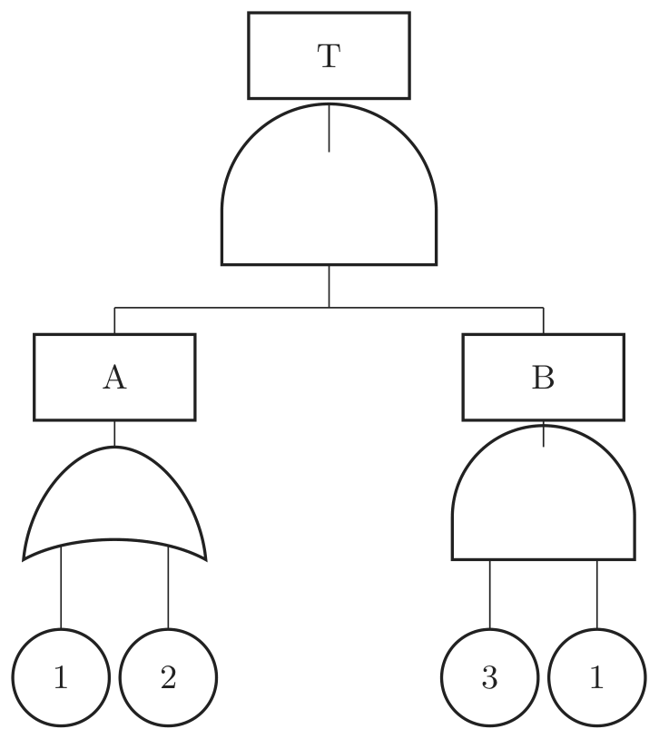

2023년 2회 · 산업안전기사 필기 CBT 기출 재배열 전사 검수본
지면(PDF)과 대조 검수용 · 수식은 KaTeX 렌더 · 총 문항
제1과목 안전관리론
001빈출도 ★★☆난이도 1·쉬움개념형safe_A_2023_02_001
다음 중 산업안전보건법령상 안전ㆍ보건표지의 색체의 색도기준이 잘못 연결된 것은? (단, 색도기준은 KS에 따른 색의 3속성에 의한 표시방법에 따른다.)
① 빨간색 - 7.5R 4/14
② 노란색 - 5Y 8.5/12
③ 파란색 - 2.5PB 4/10
④ 흰색 - N0.5
정답: 4
해설
흰색은 N9.5다. N0.5 는 검은색이다.
안전보건표지의 색도기준
| 색채 | 색도기준 | 용도 | 비고 |
|---|
| 빨간색 | 7.5R 4/14 | 금지 · 경고 | |
| 노란색 | 5Y 8.5/12 | 경고 | |
| 파란색 | 2.5PB 4/10 | 지시 | |
| 녹색 | 2.5G 4/10 | 안내 | |
| 흰색 | N9.5 | 보조색 | 밝다 |
| 검은색 | N0.5 | 보조색 | 어둡다 |
오답 분석
① 빨간색 7.5R 4/14 는 맞다.
② 노란색 5Y 8.5/12 도 맞다.
③ 파란색 2.5PB 4/10 도 맞다.
관련 개념 · 암기
산업안전보건법 시행규칙 별표8 — 안전보건표지의 색도기준N 은 무채색(Neutral)을 뜻하고 뒤의 숫자가
명도다.
9.5 는 거의 흰색, 0.5 는 거의 검은색이다. 두 값을 바꿔 놓는 것이 단골 함정이다.
◈ 암기 흰색 N9.5, 검은색 N0.5.
⚖ 근거 법령 — 산업안전보건법 시행규칙 별표 8산업안전보건법 시행규칙 시행 2026. 8. 1.
분류: 보호구 > 안전모·안전대 > 안전보건표지 · 원본 2011.03.20 · 2015.05.31
002빈출도 ★☆☆난이도 3·어려움계산형safe_A_2023_02_002
베어링을 생산하는 사업장에 300명의 근로자가 근무하고 있다. 1년에 21건의 재해가 발생하였다면 이 사업장에서 근로자 1명이 평생 작업시 약 몇 건의 재해를 당할 수 있겠는가? (단, 1일 8시간씩, 1년에 300일 근무하며, 평생근로 시간은 10만시간으로 가정한다.)
정답: 2
해설
연근로시간은 $300 \times 8 \times 300 = 720 {,} 000$ 시간이다. 도수율은 $\dfrac{21}{720 {,} 000} \times 10^{6} \fallingdotseq 29.17$ 이고, 환산도수율은 $29.17 \times \dfrac{100 {,} 000}{10^{6}} \fallingdotseq 2.9$ 이므로 약 3건이다.
환산강도율과 환산도수율
| 환산도수율 | 환산강도율 |
|---|
| 무엇 | 평생 몇 번 다치나 | 평생 며칠을 잃나 |
| 식 | $\text{도수율} \times \dfrac{\text{평생근로시간}}{10^{6}}$ | $\text{강도율} \times \dfrac{\text{평생근로시간}}{10^{3}}$ |
| 평생 10만 시간 (표준) | $\text{도수율} \div 10$ | $\text{강도율} \times 100$ |
오답 분석
① 1건은 계산과 맞지 않는다.
③ 5건도 맞지 않는다.
④ 6건도 맞지 않는다.
관련 개념 · 암기
환산도수율도수율은 백만 시간 기준이므로
평생 10만 시간을 대입하면 ÷10이 된다.
29.17 ÷ 10 ≒ 2.9로 한 줄에 끝난다.
◈ 암기 강도율은 ×100, 도수율은 ÷10.
🃏 관련 암기카드
분류: 재해조사 및 분석 > 재해율 계산 > 환산도수율 · 원본 2015.05.31
003빈출도 ★☆☆난이도 1·쉬움개념형safe_A_2023_02_003
휴먼에러(Human Error) 원인의 레벨(Level)을 분류할 때 작업조건이나 작업형태 중에서 다른 문제가 생겨서 그것 때문에 필요한 사항을 실행할 수 없는 에러를 무엇이라고 하는가?
① Command Error
② Primary Error
③ Secondary Error
④ Third Error
정답: 3
해설
2차 에러(secondary error)다. 다른 일이 끼어들어 해야 할 일을 못 한 경우다.
휴먼에러 원인의 레벨
| 레벨 | 무엇 | |
|---|
| 1차 에러(primary error) | 작업자 자신의 잘못 | 본인의 부주의 · 미숙 |
| 2차 에러(secondary error) | 다른 문제가 생겨 해야 할 일을 못 한 것 | 작업조건·형태의 변화 |
| 지시 에러(command error) | 해야 할 일을 할 수 없는 상태 | 물자·인원·설비가 갖추어지지 않음 |
오답 분석
① Command Error 는 하려 해도 물자나 설비가 없어 못 하는 경우다.
② Primary Error 는 작업자 자신의 잘못이다.
④ 「Third Error」라는 갈래는 없다.
관련 개념 · 암기
휴먼에러 원인의 레벨 분류셋을
내 탓(1차) · 딴 일 탓(2차) · 여건 탓(지시)으로 새긴다.
「다른 문제가 생겨서」라는 말이 2차 에러를 가리킨다.
◈ 암기 딴 문제가 끼어들면 2차 에러.
🃏 관련 암기카드
분류: — > — > 휴먼에러 · 원본 2015.03.08
004빈출도 ★☆☆난이도 2·보통개념형safe_A_2023_02_004
다음 중 산업안전보건법상 「화학물질 취급장소에서의 유해ㆍ위험 경고」에 사용되는 안전ㆍ보건표지의 색도 기준으로 옳은 것은?
① 7.5R 4/14
② 5Y 8.5/12
③ 2.5PB 4/10
④ 2.5G 4/10
정답: 1
해설
7.5R 4/14(빨간색)이다. 화학물질 취급장소의 유해·위험 경고는 빨간색을 쓴다.
빨간색과 노란색의 쓰임
| 색 | 용도 | 보기 |
|---|
| 빨간색 7.5R 4/14 | 금지 · 경고 | 정지신호 · 유해행위 금지 · 화학물질 취급장소의 유해·위험 경고 |
| 노란색 5Y 8.5/12 | 경고 | 화학물질 취급장소를 뺀 그 밖의 위험경고 · 주의표지 |
오답 분석
② 5Y 8.5/12 는 노란색으로 그 밖의 위험경고에 쓴다.
③ 2.5PB 4/10 은 파란색으로 지시에 쓴다.
④ 2.5G 4/10 은 녹색으로 안내에 쓴다.
관련 개념 · 암기
산업안전보건법 시행규칙 별표8 — 안전보건표지의 색도기준경고표지는 대개 노란색이지만, 화학물질 취급장소의 유해·위험 경고만 빨간색이다. 이 예외를 콕 집어 묻는 문항이 자주 나온다.
◈ 암기 화학물질 경고는 빨간색.
⚖ 근거 법령 — 산업안전보건법 시행규칙 별표 8산업안전보건법 시행규칙 시행 2026. 8. 1.
분류: 보호구 > 안전모·안전대 > 안전보건표지 · 원본 2015.03.08
005빈출도 ★★☆난이도 1·쉬움개념형safe_A_2023_02_005
무재해운동의 추진기법에 있어 위험예지훈련 제4단계(4라운드) 중 제2단계에 해당하는 것은?
① 본질추구
② 현상파악
③ 목표설정
④ 대책수립
정답: 1
해설
제2라운드는 본질추구다.
위험예지훈련 4라운드
| 라운드 | 이름 | 무엇을 하나 | 묻는 말 |
|---|
| 1R | 현상파악 | 어떤 위험이 있나 | 「어떤 위험이 숨어 있는가?」 |
| 2R | 본질추구 | 무엇이 진짜 문제인가 | 「이것이 위험의 요점이다」 |
| 3R | 대책수립 | 어떻게 할 것인가 | 「당신이라면 어떻게 하겠는가?」 |
| 4R | 행동목표 설정 | 무엇을 지킬 것인가 | 「우리는 이렇게 한다」 |
오답 분석
② 현상파악은 1라운드다.
③ 목표설정(행동목표 설정)은 4라운드다.
④ 대책수립은 3라운드다.
관련 개념 · 암기
위험예지훈련 4라운드흐름은
보고 → 캐고 → 세우고 → 다짐한다다.
2R 에서 여러 위험 가운데 「진짜 위험한 것」을 골라 동그라미를 친다.
◈ 암기 현상파악 · 본질추구 · 대책수립 · 행동목표.
🃏 관련 암기카드
분류: 무재해운동 > 무재해·위험예지 > 위험예지훈련 · 원본 2012.05.20 · 2015.08.16
006빈출도 ★☆☆난이도 2·보통개념형safe_A_2023_02_006
산업안전보건법상 방독마스크 사용이 가능한 공기 중 최소 산소농도 기준은 몇 % 이상인가?
정답: 3
해설
18 [%] 이상이다. 그보다 낮으면 송기마스크나 공기호흡기를 써야 한다.
호흡용 보호구의 선택
| 공기 중 산소농도 | 쓸 수 있는 보호구 | |
|---|
| 18 [%] 이상 | 방진마스크 · 방독마스크 | 공기를 걸러 쓴다 |
| 18 [%] 미만(산소결핍) | 송기마스크 · 공기호흡기 | 깨끗한 공기를 따로 공급 |
오답 분석
① 14 [%] 는 이미 산소결핍 상태다.
② 16 [%] 도 그렇다.
④ 20 [%] 는 정상 공기에 가까운 값으로 기준보다 높다.
관련 개념 · 암기
방독마스크의 사용 조건방독마스크는 공기 속 유해가스만 걸러 낼 뿐 산소를 만들지 못한다.
산소가 모자란 곳에서 쓰면 오히려 질식 한다.
산소결핍의 경계가 18 [%]다.
◈ 암기 산소 18 [%] 이상에서만 방독마스크.
🃏 관련 암기카드
분류: 보호구 > 호흡·눈·귀 > 방독마스크 · 원본 2017.05.07
007빈출도 ★☆☆난이도 1·쉬움개념형safe_A_2023_02_007
다음 중 하인리히 방식의 재해코스트 산정에 있어 직접비에 해당되지 않은 것은?
① 간병급여
② 신규채용비용
③ 직업재활급여
④ 상병(傷病)보상연금
정답: 2
해설
신규채용비용은 간접비다. 산재보험으로 나오는 돈이 아니다.
하인리히 방식의 직접비와 간접비
| 직접비 (1) | 간접비 (4) |
|---|
| 무엇 | 산재보험으로 지급되는 보상금 | 그 밖의 모든 손실 |
| 보기 | 요양급여 · 휴업급여 · 장해급여 · 간병급여 · 유족급여 · 상병보상연금 · 장례비 · 직업재활급여 | 인적 손실(신규채용비 · 교육훈련비) · 물적 손실 · 생산손실 · 특수손실 · 기타손실 |
| 비율 | 1 | 4 |
오답 분석
① 간병급여는 산재보험 급여로 직접비다.
③ 직업재활급여도 그렇다.
④ 상병보상연금도 그렇다.
관련 개념 · 암기
하인리히의 재해손실비 — 직접비와 간접비직접비는 산재보험 급여 여덟 가지로 딱 정해져 있다.
「~급여」·「~연금」이 붙으면 직접비, 「~비용」이 붙으면 간접비 라고 어림잡을 수 있다.
◈ 암기 신규채용비용은 간접비.
🃏 관련 암기카드
분류: 산업심리 > 적성·검사 > 재해손실비 · 원본 2015.05.31
008빈출도 ★☆☆난이도 1·쉬움개념형safe_A_2023_02_008
다음 중 부주의의 발생 현상으로 혼미한 정신상태에서 심신의 피로나 단조로운 반복작업시 일어나는 현상은?
① 의식의 과잉
② 의식의 집중
③ 의식의 우회
④ 의식 수준의 저하
정답: 4
해설
의식 수준의 저하다. 피로하거나 단조로우면 의식이 흐릿해진다.
부주의의 다섯 현상
| 현상 | 무엇 | 언제 |
|---|
| 의식의 단절(중단) | 잠깐 끊긴다 | 질병 · 실신 |
| 의식의 우회 | 딴생각으로 샌다 | 걱정거리 · 고민 |
| 의식수준의 저하 | 흐려진다 | 피로 · 단조로움 |
| 의식의 혼란 | 갈피를 못 잡는다 | 자극이 뒤섞일 때 |
| 의식의 과잉 | 한 곳에만 쏠린다 | 돌발 상황에서 얼어붙음 |
오답 분석
① 의식의 과잉은 한 곳에만 쏠리는 현상이다.
② 「의식의 집중」은 부주의의 현상이 아니다.
③ 의식의 우회는 딴생각으로 새는 현상이다.
관련 개념 · 암기
부주의의 현상「피로」·「단조로움」이라는 말이 의식수준의 저하를 가리킨다.
phase Ⅰ(의식이 흐릿한 상태)에 해당하며,
휴식과 작업 전환이 대책이다.
◈ 암기 피로하고 단조로우면 의식수준 저하.
🃏 관련 암기카드
분류: 산업심리 > 부주의·착오 > 부주의 · 원본 2015.05.31
009빈출도 ★☆☆난이도 2·보통개념형safe_A_2023_02_009
다음 중 인간의 적성과 안전과의 관계를 가장 올바르게 설명한 것은?
① 사고를 일으키는 것은 그 작업에 적성이 맞지 않는 사람이 그 일을 수행한 이유이므로, 반드시 적성검사를 실시하여 그 결과에 따라 작업자를 배치하여야 한다.
② 인간의 감각기별 반응시간은 시각, 청각, 통각 순으로 빠르므로 비상시 비상등을 먼저 켜야 한다.
③ 사생활에 중대한 변화가 있는 사람이 사고를 유발할 가능성이 높으므로 그러한 사람들에게는 특별한 배려가 필요하다.
④ 일반적으로 집단의 심적 태도를 교정하는 것보다 개인의 심적 태도를 교정하는 것이 더 용이하다.
정답: 3
해설
사생활에 큰 변화가 있는 사람은 사고를 낼 가능성이 높다. 마음이 다른 데 가 있어 의식이 우회 하기 때문이다.
오답 분석
① 적성이 맞지 않는다는 것만이 사고의 원인은 아니며 「반드시」라는 표현도 지나치다.
② 감각기별 반응시간은 청각이 시각보다 빠르다.
④ 개인의 심적 태도를 고치는 것이 집단의 것을 고치는 것보다 어렵다.
관련 개념 · 암기
적성·심리 상태와 안전감각기별 반응시간은 청각(0.17초) < 촉각(0.18초) < 시각(0.20초) < 미각(0.29초) < 통각(0.70초) 순으로 빠르다.
청각이 시각보다 빠르므로 비상시에는 소리를 먼저 낸다.
◈ 암기 사생활의 큰 변화는 사고를 부른다.
🃏 관련 암기카드
분류: 산업심리 > 적성·검사 > 적성과 안전 · 원본 2015.05.31
010빈출도 ★☆☆난이도 2·보통개념형safe_A_2023_02_010
산업안전보건법상 중대재해에 해당하지 않는 것은?
① 사망자가 2명 발생한 재해
② 6개월 요양을 요하는 부상자가 동시에 4명 발생한 재해
③ 부상자 또는 직업성 질병자가 동시에 12명 발생한 재해
④ 3개월 요양을 요하는 부상자가 1명, 2개월 요양을 요하는 부상자가 4명 발생한 재해
정답: 4
해설
3개월 이상 요양이 필요한 부상자는 1명뿐이라 「2명 이상」에 못 미치고, 부상자 수도 5명이라 「10명 이상」에 못 미친다.
중대재해의 세 가지 (규칙 제3조)
| 중대재해 | 보기와의 대응 |
|---|
| 사망자가 1명 이상 발생한 재해 | ①이 해당 |
| 3개월 이상 요양이 필요한 부상자가 동시에 2명 이상 발생한 재해 | ②가 해당 (6개월 4명) · ④는 1명뿐 |
| 부상자 또는 직업성 질병자가 동시에 10명 이상 발생한 재해 | ③이 해당 (12명) · ④는 5명 |
오답 분석
① 사망자 2명은 「1명 이상」에 해당한다.
② 6개월 요양 부상자 4명은 「3개월 이상 2명 이상」에 해당한다.
③ 부상자 12명은 「10명 이상」에 해당한다.
관련 개념 · 암기
산업안전보건법 시행규칙 제3조 — 중대재해의 범위세 기준을
사망 1명 · 3개월 이상 2명 · 부상자 10명으로 잡는다.
보기 ④는 두 기준 모두 아슬아슬하게 못 미치도록 짜여 있다.
◈ 암기 사망 1 · 3개월 2 · 부상 10.
⚖ 근거 법령 — 산업안전보건법 시행규칙 제3조산업안전보건법 시행규칙 시행 2026. 8. 1.
법 제2조제2호에서 "고용노동부령으로 정하는 재해"란 다음 각 호의 어느 하나에 해당하는 재해를 말한다.
1. 사망자가 1명 이상 발생한 재해이 문항이 묻는 자리
2. 3개월 이상의 요양이 필요한 부상자가 동시에 2명 이상 발생한 재해이 문항이 묻는 자리
3. 부상자 또는 직업성 질병자가 동시에 10명 이상 발생한 재해이 문항이 묻는 자리
분류: 안전보건관리 체제 > 도급·중대재해 > 중대재해 · 원본 2016.05.08
011빈출도 ★☆☆난이도 2·보통개념형safe_A_2023_02_011
직계=참모식 조직의 특징에 대한 설명으로 옳은 것은?
① 소규모 사업장에 적합하다.
② 생산조직과는 별도의 조직과 기능을 갖고 활동한다.
③ 안전계획, 평가 및 조사는 스탭에서, 생산기술의 안전대책은 라인에서 실시한다.
④ 안전업무가 표준화되어 직장에 정착하기 쉽다.
정답: 3
해설
계획·평가·조사는 스태프가, 실행은 라인이 맡는 것이 라인·스태프형(직계–참모식)의 요체다.
안전관리 조직의 세 형태
| 라인형 | 스태프형 | 라인·스태프형 |
|---|
| 규모 | 100명 미만 | 100 ~ 1,000명 | 1,000명 이상 |
| 누가 세우나 | 생산라인 | 안전 스태프 | 안전 스태프 |
| 누가 실행하나 | 생산라인 | 안전 스태프 | 생산라인 |
| 특징 | 안전업무가 정착하기 쉽다 | 생산조직과 별도로 활동 | 전원 참여 · 월권과 혼동의 우려 |

안전관리 조직의 세 형태
오답 분석
① 소규모 사업장에 적합한 것은 라인형이다.
② 생산조직과 별도로 활동하는 것은 스태프형이다.
④ 안전업무가 표준화되어 직장에 정착하기 쉬운 것은 라인형이다.
관련 개념 · 암기
안전보건관리조직의 유형라인·스태프형의 요체는
「계획은 스태프가, 실행은 라인이」다.
1,000명 이상의 대규모 사업장에 알맞다.
◈ 암기 계획은 스태프, 실행은 라인.
🃏 관련 암기카드
분류: 안전보건관리 체제 > 안전조직 > 안전관리조직 · 원본 2016.05.08
012빈출도 ★★☆난이도 1·쉬움개념형safe_A_2023_02_012
기업 내 정형교육 중 TWI(Train Within Industry)의 교육 내용과 가장 거리가 먼 것은?
① Job Method Training
② Job Relation Training
③ Job Instruction Training
④ Job Standardization Training
정답: 4
해설
Job Standardization Training은 TWI 에 없다. 넷째는 Job Safety Training(JST)이다.
TWI 의 네 가지 과정
| 과정 | 영문 | 무엇을 가르치나 |
|---|
| JIT | Job Instruction Training | 작업을 가르치는 법 |
| JMT | Job Method Training | 작업을 개선하는 법 |
| JRT | Job Relation Training | 사람을 다루는 법 |
| JST | Job Safety Training | 안전하게 일하는 법 — Standardization 이 아니다 |
오답 분석
① Job Method Training(JMT)은 TWI 의 과정이다.
② Job Relation Training(JRT)도 그렇다.
③ Job Instruction Training(JIT)도 그렇다.
관련 개념 · 암기
TWI(Training Within Industry)TWI 는 관리감독자를 위한 정형교육으로
1회 10시간, 하루 2시간씩 5일에 걸쳐 한다. 갈림길은
JST 의 S 가 Standardization 이 아니라 Safety라는 데 있다.
◈ 암기 가르치고 · 고치고 · 다루고 · 안전하게.
🃏 관련 암기카드
분류: 안전보건교육 > 교육 이론 > TWI · 원본 2012.08.26 · 2015.08.16
013빈출도 ★☆☆난이도 1·쉬움개념형safe_A_2023_02_013
모랄서베이(Morale Survey)의 주요방법 중 태도조사법에 해당하지 않은 것은?
① 질문지법
② 면접법
③ 통계법
④ 집단토의법
정답: 3
해설
통계법은 따로 있는 방법이다. 태도조사법이 아니다.
모랄서베이의 방법
| 방법 | 무엇 | |
|---|
| 통계법 | 사고·결근·이직률 등 기록을 분석 | 태도조사법이 아니다 |
| 사례연구법 | 관리상의 여러 문제를 사례로 검토 | |
| 관찰법 | 태도와 행동을 직접 살핀다 | |
| 실험연구법 | 조건을 바꿔 가며 살핀다 | |
| 태도조사법 | 질문지법 · 면접법 · 집단토의법 · 투사법 | 직접 묻거나 말하게 한다 |
오답 분석
① 질문지법은 태도조사법이다.
② 면접법도 그렇다.
④ 집단토의법도 그렇다.
관련 개념 · 암기
모랄서베이(사기조사)의 방법태도조사법은 「직접 물어보는」 방법이다 —
묻고(질문지) · 만나고(면접) · 이야기하게 하고(집단토의) · 그림으로 떠보는(투사).
통계는 기록을 뒤지는 것이라 결이 다르다.
◈ 암기 통계법은 태도조사법이 아니다.
🃏 관련 암기카드
분류: 안전보건교육 > 토의법 > 모랄서베이 · 원본 2015.08.16
014빈출도 ★☆☆난이도 2·보통개념형safe_A_2023_02_014
다음 중 교육심리학의 학습이론에 관한 설명으로 옳은 것은?
① 파블로프(Pavlov)의 조건반사설은 맹목적 시행을 반복하는 가운데 자극과 반응이 결합하여 행동하는 것이다.
② 레윈(Lewin)의 장설은 후천적으로 얻게 되는 반사 작용으로 행동을 발생시킨다는 것이다.
③ 톨만(Tolman)의 기호형태설은 학습자의 머리 속에 인지적 지도 같은 인지구조를 바탕으로 학습하려는 것이다.
④ 손다이크(Thorndike)의 시행착오설은 내적, 외적의 전체구조를 새로운 시점에서 파악하여 행동하는 것이다.
정답: 3
해설
톨만의 기호형태설은 머릿속에 인지적 지도(cognitive map)를 그려 학습한다는 이론이다. 나머지 셋은 설명이 서로 뒤바뀌었다.
학습이론
| 갈래 | 학자 | 이론 | 요지 |
|---|
| 자극-반응(S-R) | 파블로프 | 조건반사설 | 후천적으로 얻은 반사작용 |
| 손다이크 | 시행착오설 | 맹목적 시행의 반복 |
| 스키너 | 조작적 조건화설 | 보상과 벌 |
| 인지(형태) | 레빈 | 장(場)설 | 사람과 환경의 장 안에서 |
| 톨만 | 기호형태설 | 머릿속 인지적 지도 |
| 쾰러 | 통찰설 | 전체구조를 새로운 시점에서 |
오답 분석
① 「맹목적 시행의 반복」은 손다이크의 시행착오설이다.
② 「후천적 반사작용」은 파블로프의 조건반사설이다.
④ 「전체구조를 새로운 시점에서」는 쾰러의 통찰설이다.
관련 개념 · 암기
교육심리학의 학습이론크게
자극-반응설(파블로프 · 손다이크 · 스키너)과 인지설(레빈 · 톨만 · 쾰러)로 갈린다.
네 보기가 학자와 설명을 한 칸씩 밀어 놓았다.
◈ 암기 톨만은 인지적 지도.
🃏 관련 암기카드
분류: 안전보건교육 > 학습이론 > 학습이론 · 원본 2015.05.31
015빈출도 ★☆☆난이도 2·보통공식형safe_A_2023_02_015
다음 중 레윈(Lewin.K)에 의하여 제시된 인간의 행동에 관한 식을 올바르게 표현한 것은? (단, B는 인간의 행동, P는 개체, E는 환경, f는 함수관계를 의미한다.)
① B = f(P.E)
② B = f(P+1)B
③ P = E.f(B)
④ E = f(B+1)P
정답: 1
해설
$B = f ( P \cdot E )$ 다. 행동은 사람과 환경의 함수라는 뜻이다.
레빈의 법칙 $B = f ( P \cdot E )$
| 기호 | 무엇 | 보기 |
|---|
| B | Behavior 행동 | 겉으로 드러나는 행동 |
| f | function 함수 | P 와 E 가 함께 정한다 |
| P | Person 사람 | 나이 · 경험 · 성격 · 지능 · 심신 상태 |
| E | Environment 환경 | 인간관계 · 작업환경 · 설비 |
오답 분석
② $B = f ( P + 1 ) B$ 라는 식은 없다.
③ $P = E \cdot f ( B )$ 도 없다.
④ $E = f ( B + 1 ) P$ 도 없다.
관련 개념 · 암기
레빈(Lewin)의 인간 행동 법칙「행동(B)이 맨 앞에 오고, 괄호 안에 사람(P)과 환경(E)이 곱해져 있는」 것 하나만 찾으면 된다.
사람은 쉽게 못 바꾸지만 환경은 바꿀 수 있으므로 안전관리는 E 를 손본다.
◈ 암기 $B = f ( P \cdot E )$.
🃏 관련 암기카드
분류: 안전보건교육 > 교육계획·평가 > 레빈의 법칙 · 원본 2015.05.31
016빈출도 ★☆☆난이도 2·보통개념형safe_A_2023_02_016
의무안전인증 대상 보호구 중 AE, ABE종 안전모의 질량 증가율은 몇 % 미만이어야 하는가?
정답: 1
해설
1 [%] 미만이다. 물에 담갔을 때 물을 빨아들이면 절연성능이 떨어지기 때문이다.
안전모의 성능시험 기준
| 시험 | 기준 | 대상 |
|---|
| 내수성 | 질량 증가율 1 [%] 미만 | AE · ABE (내전압성이 있는 것) |
| 내전압성 | 교류 20 [kV] 에서 1분간 견디고 누설전류 10 [mA] 이하 | AE · ABE |
| 내관통성 | 관통거리 9.5 [mm] 이하 (AE · ABE) · 11.1 [mm] 이하 (AB) | |
| 충격흡수성 | 전달충격력 4,450 [N] 미만 | |
오답 분석
② 2 [%] 는 기준보다 느슨하다.
③ 3 [%] 도 그렇다.
④ 5 [%] 도 그렇다.
관련 개념 · 암기
보호구 안전인증 고시 — 안전모의 성능기준E(전기)가 붙은 안전모만 내수성과 내전압성 시험을 한다.
물을 먹으면 전기가 통하므로 질량 증가율을 1 [%] 미만으로 막는다.
◈ 암기 질량 증가율 1 [%] 미만.
🃏 관련 암기카드
분류: 안전점검·인증 > 안전인증·검사 > 안전모 · 원본 2015.08.16
017빈출도 ★☆☆난이도 2·보통개념형safe_A_2023_02_017
다음 중 강도율에 관한 설명으로 틀린 것은?
① 사망 및 영구전노동불능(신체장해등급 1~3급)은 손실일수 7500일로 환산한다.
② 신체장해 등급 제14급은 손실일수 50일로 환산한다.
③ 영구일부노동불능은 신체 장해등급에 따른 손실일수에 300/365을 곱하여 환산한다.
④ 일시적노동불능은 휴업일수에 300/365을 곱하여 손실일수를 환산한다.
정답: 3
해설
영구일부노동불능은 등급별 손실일수를 그대로 쓴다. 300/365 를 곱하는 것은 일시적 노동불능(휴업일수) 뿐이다.
근로손실일수의 환산
| 구분 | 환산 | |
|---|
| 사망 · 1 ~ 3급 | 7,500일 | 그대로 |
| 4 ~ 14급(영구일부노동불능) | 등급별 손실일수 그대로 | 300/365 를 곱하지 않는다 |
| 일시 전노동불능(휴업) | 휴업일수 × 300/365 | 연간 근로일수만 센다 |
오답 분석
① 사망 및 1 ~ 3급이 7,500일인 것은 맞다.
② 제14급이 50일인 것도 맞다.
④ 일시적 노동불능에 300/365 를 곱하는 것도 맞다.
관련 개념 · 암기
근로손실일수의 산정300/365 를 곱하는 까닭은 「쉬는 날은 어차피 일하지 않으므로 빼자」는 것이다.
장해등급 손실일수는 이미 그 점을 감안해 정해 놓은 값이라 다시 곱하지 않는다.
◈ 암기 300/365 는 휴업일수에만.
🃏 관련 암기카드
분류: 재해조사 및 분석 > 상해 분류 > 강도율 · 원본 2015.03.08
018빈출도 ★☆☆난이도 3·어려움계산형safe_A_2023_02_018
표는 A작업장을 하루 10회 순회하면서 적발된 불안전한 행동건수이다. A작업장의 1일 불안전한 행동률은 약 얼마인가?
순회횟수 1회 2회 3회 4회 5회 6회 7회 8회 9회 10회
근로자수 100 100 100 100 100 100 100 100 100 100
불안전한 행동 적발건수 0 1 2 0 0 1 2 0 0 1
① 0.07%
② 0.7%
③ 7%
④ 70%
정답: 2
해설
적발건수의 합은 7건이고, 관찰한 연인원은 $100 \times 10 = 1 {,} 000$ 명이다. $\dfrac{7}{1 {,} 000} \times 100 = 0.7$ [%] 다.
오답 분석
① 0.07 [%] 는 자릿수가 열 배 어긋난다.
③ 7 [%] 는 100 을 곱하지 않고 나눈 값이다.
④ 70 [%] 도 자릿수가 어긋난다.
관련 개념 · 암기
불안전행동률$\text{불안전행동률} = \dfrac{\text{불안전행동 적발건수}}{\text{총 관찰인원}} \times 100$ 이다.
분모는 「근로자 수 × 순회 횟수」라는 점이 갈림길이다 —
한 사람을 열 번 보면 열 번 센다.
◈ 암기 적발건수 ÷ (인원 × 순회횟수).
🃏 관련 암기카드
분류: 재해조사 및 분석 > 재해 발생 형태 > 불안전행동률 · 원본 2014.08.17
019빈출도 ★☆☆난이도 2·보통공식형safe_A_2023_02_019
재해의 빈도와 상해의 강약도를 혼합하여 집계하는 지표를 무엇이라 하는가?
① 강도율
② 안전활동률
③ safe-T-score
④ 종합재해지수
정답: 4
해설
종합재해지수(FSI)다. $\mathrm{FSI} = \sqrt{\text{도수율} \times \text{강도율}}$ 로 빈도와 강도를 함께 본다.
재해율 지표
| 지표 | 식 | 뜻 |
|---|
| 도수율 FR | $\dfrac{\text{재해건수}}{\text{연근로시간}} \times 10^{6}$ | 얼마나 자주 |
| 강도율 SR | $\dfrac{\text{근로손실일수}}{\text{연근로시간}} \times 10^{3}$ | 얼마나 심하게 |
| 종합재해지수 FSI | $\sqrt{FR \times SR}$ | 둘의 기하평균 |
| 세이프 티 스코어 | $\dfrac{\text{재해율의 차}}{\text{표준편차}}$ | 과거와 현재의 비교 |
오답 분석
① 강도율은 상해의 강약도만 나타낸다.
② 안전활동률은 안전활동의 정도를 나타내는 지표다.
③ safe-T-score 는 과거와 현재의 재해율을 견주는 지표다.
관련 개념 · 암기
종합재해지수(FSI)빈도(도수율)와 심도(강도율)를 곱한 뒤 제곱근을 씌운 것이다.
둘 다 낮아야 지수가 낮아지므로 한쪽만 좋은 사업장을 걸러 낸다.
◈ 암기 $\mathrm{FSI} = \sqrt{\text{도수율} \times \text{강도율}}$.
🃏 관련 암기카드
분류: 재해조사 및 분석 > 상해 분류 > 종합재해지수 · 원본 2014.03.02
020빈출도 ★☆☆난이도 3·어려움계산형safe_A_2023_02_020
재해로 인한 직접비용으로 8000만원이 산재보상비로 지급되었다면 하인리히 방식에 따를 때 총 손실비용은 얼마인가?
① 16000만원
② 24000만원
③ 32000만원
④ 40000만원
정답: 4
해설
직접비 : 간접비 = 1 : 4이므로 총 손실비용은 직접비의 5배다. $8 {,} 000 \times 5 = 40 {,} 000$ 만원이다.
오답 분석
① 16,000만원은 2배다.
② 24,000만원은 3배다.
③ 32,000만원은 4배로, 간접비만 셈한 값이다.
관련 개념 · 암기
하인리히의 재해손실비1 : 4 는 「직접비 : 간접비」이므로
총액은 1 + 4 = 5배다.
간접비만 구하면 4배(32,000만원)이라 그 보기가 함정으로 놓여 있다.
◈ 암기 총 손실비용은 직접비의 5배.
🃏 관련 암기카드
분류: 재해조사 및 분석 > 재해 손실비 > 재해손실비 · 원본 2014.03.02
제2과목 인간공학 및 시스템안전공학
021빈출도 ★★★난이도 2·보통계산형safe_A_2023_02_021
그림과 같은 FT도에 대한 미니멀 컷셋(minimal cut sets)으로 옳은 것은? (단, Fussell의 알고리즘을 따른다.)

① {1,2}
② {1,3}
③ {2.3}
④ {1,2,3}
정답: 2
해설
식으로 적으면 $T = A \cdot B = ( 1 + 2 ) ( 3 \cdot 1 )$ 다. 전개하면 $1 \cdot 3 \cdot 1 + 2 \cdot 3 \cdot 1 = 1 \cdot 3 + 1 \cdot 2 \cdot 3$ 인데, 흡수법칙($A + AB = A$)으로 {1, 3}만 남는다.
Fussell 알고리즘으로 컷셋 구하기
| 단계 | 결과 | |
|---|
| T = A · B (AND) | 가로로 늘어놓는다 | A B |
| A = 1 + 2 (OR) | 세로로 나눈다 | 1 B / 2 B |
| B = 3 · 1 (AND) | 가로로 늘어놓는다 | 1 3 1 / 2 3 1 |
| 정리 | {1, 3} 과 {1, 2, 3} | {1,3} 이 {1,2,3} 에 포함되므로 최소는 {1,3} |
오답 분석
① {1,2} 는 컷셋이 아니다 — B 가 일어나지 않으면 T 도 일어나지 않는다.
③ {2,3} 도 컷셋이 아니다 — 1 이 없으면 B 가 일어나지 않는다.
④ {1,2,3} 은 컷셋이지만 {1,3} 을 품고 있어 최소가 아니다.
관련 개념 · 암기
Fussell 알고리즘과 미니멀 컷셋AND 게이트는 가로로, OR 게이트는 세로로 늘어놓는 것이 Fussell 알고리즘이다.
마지막에 남을 품고 있는 집합을 버리면 미니멀 컷셋이 나온다.
◈ 암기 AND 는 가로, OR 는 세로.
🃏 관련 암기카드
분류: 결함수분석 > 컷셋·확률 > 컷셋과 패스셋 · 원본 2011.08.21 · 2014.08.17 · 2022.04.24
022빈출도 ★★★난이도 2·보통개념형safe_A_2023_02_022
FTA에서 사용하는 다음 사상기호에 대한 설명으로 옳은 것은?
마름모 모양의 사상기호 — 위아래로 선이 이어져 있다.
① 시스템 분석에서 좀 더 발전시켜야 하는 사상
② 시스템의 정상적인 가동상태에서 일어날 것이 기대되는 사상
③ 불충분한 자료로 결론을 내릴 수 없어 더 이상 전개할 수 없는 사상
④ 주어진 시스템의 기본사상으로 고장원인이 분석되었기 때문에 더 이상 분석할 필요가 없는 사상
정답: 3
해설
마름모는 생략사상이다. 정보가 모자라거나 중요하지 않아 더 캐지 않기로 한 사상이다.
FTA 의 사상기호
| 모양 | 이름 | 무엇 |
|---|
| 직사각형 | 결함사상 | 더 분석할 수 있는 사상 — 정상사상과 중간사상 |
| 원 | 기본사상 | 더 분석할 수 없는 밑바닥 사상 |
| 마름모 | 생략사상 | 자료가 모자라 더 전개하지 않는 사상 |
| 집 모양 오각형 | 통상사상 | 늘 일어나는 정상적인 사상 |
| 삼각형 | 전이기호 | 다른 곳으로 이어진다는 표시 |
오답 분석
① 「좀 더 발전시켜야 하는 사상」은 결함사상(직사각형)이다.
② 「정상 가동상태에서 일어날 것이 기대되는 사상」은 통상사상(집 모양)이다.
④ 「고장원인이 분석되어 더 분석할 필요가 없는 사상」은 기본사상(원)이다.
관련 개념 · 암기
FTA 의 생략사상기본사상(원)과 생략사상(마름모)은 둘 다
더 전개하지 않는다는 점이 같지만,
원은 「더 캘 것이 없어서」, 마름모는 「캘 자료가 없어서」라는 점이 다르다.
◈ 암기 마름모는 생략사상.
🃏 관련 암기카드
분류: 결함수분석 > FTA 기호·구조 > FTA 사상기호 · 원본 2014.08.17 · 2017.05.07 · 2021.05.15
023빈출도 ★☆☆난이도 2·보통개념형safe_A_2023_02_023
다음 중 결함수분석법에서 path set에 관한 설명으로 옳은 것은?
① 시스템의 약점을 표현한 것이다.
② Top 사상을 발생시키는 조합이다.
③ 시스템이 고장 나지 않도록 하는 사상의 조합이다.
④ 일반적으로 Fussell Algorithm을 이용한다.
정답: 3
해설
패스셋은 시스템을 살리는 조합이다. 나머지 셋은 모두 컷셋의 설명이다.
컷셋과 패스셋
| 컷셋(cut set) | 패스셋(path set) |
|---|
| 무엇 | 모두 일어나면 정상사상이 일어나는 조합 | 모두 일어나지 않으면 정상사상이 일어나지 않는 조합 |
| 뜻 | 시스템을 고장 내는 조합 | 시스템을 살리는 조합 |
| 나타내는 것 | 시스템의 약점 · 위험의 크기 | 시스템의 신뢰성 |
| 구하는 법 | Fussell 알고리즘 | 쌍대 FT 를 만들어 컷셋을 구한다 |
오답 분석
① 시스템의 약점을 나타내는 것은 컷셋이다.
② Top 사상을 발생시키는 조합도 컷셋이다.
④ Fussell 알고리즘은 컷셋을 구하는 방법이다.
관련 개념 · 암기
미니멀 컷셋과 미니멀 패스셋컷은 자른다(고장), 패스는 지나간다(정상)로 새긴다.
Fussell 알고리즘은 컷셋 전용이며,
패스셋은 AND 와 OR 를 뒤바꾼 쌍대 FT를 만들어 구한다.
◈ 암기 컷은 고장, 패스는 정상.
🃏 관련 암기카드
분류: 결함수분석 > FTA 기호·구조 > 컷셋과 패스셋 · 원본 2014.08.17
024빈출도 ★☆☆난이도 1·쉬움개념형safe_A_2023_02_024
다음 중 감각적으로 물리현상을 왜곡하는 지각현상에 해당하는 것은?
정답: 2
해설
착각이다. 실제와 다르게 보이거나 들리는 지각 현상이다.
운동의 착각 현상
| 현상 | 무엇 | |
|---|
| 자동운동 | 암실의 정지된 광점이 움직여 보인다 | 광점이 작고 빛이 약할 때 |
| 유도운동 | 움직이지 않는 것이 움직여 보인다 | 옆 기차가 떠날 때 |
| 가현운동 | 정지한 것들이 이어져 움직여 보인다 | 영화 · 네온사인 |
오답 분석
① 주의산만은 주의가 흩어지는 상태다.
③ 피로는 몸과 마음이 지친 상태다.
④ 무관심은 마음의 태도다.
관련 개념 · 암기
착각(illusion)착각은 「누구에게나 똑같이 일어나는」 지각의 왜곡이다.
착오(mistake)는 판단의 잘못이라 결이 다르다.
주의산만 · 피로 · 무관심은 지각이 아니라 상태다.
◈ 암기 물리현상이 다르게 보이면 착각.
🃏 관련 암기카드
분류: — > — > 착각 · 원본 2015.05.31
025빈출도 ★☆☆난이도 1·쉬움개념형safe_A_2023_02_025
작업자세로 인한 부하를 분석하기 위하여 인체 주요 관절의 힘과 모멘트를 정역학적으로 분석하려고 할 때, 분석에 반드시 필요한 인체 관련 자료가 아닌 것은?
① 관절 각도
② 관절의 종류
③ 분절(segment) 무게
④ 분절(segment) 무게 중심
정답: 2
해설
관절의 종류는 힘과 모멘트 계산에 들어가지 않는다. 각도 · 무게 · 무게중심이면 계산할 수 있다.
정역학적 분석에 필요한 자료
| 자료 | 왜 필요한가 | |
|---|
| 관절 각도 | 모멘트 팔의 길이를 정한다 | |
| 분절의 무게 | 작용하는 힘의 크기 | |
| 분절의 무게중심 | 힘이 걸리는 자리 | |
| 분절의 길이 | 모멘트 팔 | |
| 관절의 종류 | 계산에 쓰이지 않는다 | 경첩·구상 등은 운동 범위를 정할 뿐 |
오답 분석
① 관절 각도는 모멘트 팔을 정하는 데 필요하다.
③ 분절 무게는 작용하는 힘의 크기를 정한다.
④ 분절 무게중심은 힘이 걸리는 자리를 정한다.
관련 개념 · 암기
인체의 정역학적 분석모멘트 = 힘 × 거리이므로
힘(무게)과 거리(각도 · 무게중심)만 있으면 된다.
관절이 경첩이냐 구상이냐는 움직일 수 있는 범위를 정할 뿐이다.
◈ 암기 각도 · 무게 · 무게중심 셋.
🃏 관련 암기카드
분류: — > — > 생체역학 · 원본 2015.03.08
026빈출도 ★☆☆난이도 2·보통개념형safe_A_2023_02_026
다음 중 일반적으로 보통 기계작업이나 편지 고르기에 가장 적합한 조명수준은?
① 30fc
② 100fc
③ 300fc
④ 500fc
정답: 2
해설
100 [fc]다. 보통 기계작업과 편지 고르기는 중간 정도의 정밀함을 요구한다.
작업별 권장 조명수준
| 작업 | 조명수준 | |
|---|
| 초정밀작업(수술대 · 아주 세밀한 조립) | 1,000 [fc] | |
| 정밀작업(제도 · 타이핑 · 세밀한 조립) | 300 [fc] | |
| 보통작업(기계작업 · 편지 고르기) | 100 [fc] | 이 문항 |
| 거친 작업(복도 · 창고) | 30 [fc] | |
오답 분석
① 30 [fc] 는 복도나 창고 같은 거친 작업의 수준이다.
③ 300 [fc] 는 제도나 타이핑 같은 정밀작업의 수준이다.
④ 500 [fc] 는 그 사이의 값으로 표준 구분에 없다.
관련 개념 · 암기
작업별 소요조명네 값이
30 → 100 → 300 → 1,000으로
대략 세 배씩 오른다.
1 [fc] ≒ 10.8 [lux]이므로 100 [fc] 는 약 1,080 [lux] 다.
◈ 암기 30 · 100 · 300 · 1,000 [fc].
🃏 관련 암기카드
분류: — > — > 소요조명 · 원본 2015.03.08
027빈출도 ★☆☆난이도 1·쉬움개념형safe_A_2023_02_027
다음 중 몸의 중심선으로부터 밖으로 이동하는 신체 부위의 동작을 무엇이라 하는가?
정답: 1
해설
외전(abduction)이다. 몸의 가운데 선에서 멀어지는 동작이다.
인체의 기본 동작
| 동작 | 무엇 | 보기 |
|---|
| 외전(abduction) | 몸의 중심선에서 멀어진다 | 팔을 옆으로 벌린다 |
| 내전(adduction) | 몸의 중심선으로 가까워진다 | 벌린 팔을 모은다 |
| 외선(lateral rotation) | 몸의 중심선 바깥으로 돌린다 | 발끝을 바깥으로 |
| 내선(medial rotation) | 몸의 중심선 쪽으로 돌린다 | 발끝을 안쪽으로 |
| 굴곡(flexion) | 관절의 각도가 줄어든다 | 팔을 굽힌다 |
| 신전(extension) | 관절의 각도가 커진다 | 팔을 편다 |
오답 분석
② 외선은 바깥쪽으로 「돌리는」 동작이다.
③ 내전은 중심선 쪽으로 가까워지는 동작이다.
④ 내선은 안쪽으로 돌리는 동작이다.
관련 개념 · 암기
인체의 기본 동작 용어「전(轉)」은 옮기는 것, 「선(旋)」은 돌리는 것이다.
「외」는 바깥, 「내」는 안이므로
네 낱말이 두 축의 곱으로 만들어진다.
◈ 암기 밖으로 옮기면 외전.
🃏 관련 암기카드
분류: — > — > 인체의 동작 · 원본 2014.08.17
028빈출도 ★★☆난이도 1·쉬움개념형safe_A_2023_02_028
다음 중 복잡한 시스템을 설계, 가동하기 전의 구상단계에서 시스템의 근본적인 위험성을 평가하는 가장 기초적인 위험도 분석 기법은?
① 예비위험분석(PHA)
② 결함수분석법(FTA)
③ 고장형태와 영향분석(FMEA)
④ 운용안전성분석(OSA)
정답: 1
해설
PHA(예비위험분석)다. 구상단계에서 가장 먼저 정성적으로 훑는다.
주요 위험분석 기법과 시기
| 기법 | 이름 | 시기 | 성격 |
|---|
| PHA | 예비위험분석 | 구상단계 | 정성적 · 가장 이르다 |
| FHA | 결함위험분석 | 분담 설계 | 정성적 |
| FMEA | 고장형태 및 영향분석 | 설계단계 | 정성적 · 귀납적 |
| FTA | 결함수분석 | 설계·운전 | 정량적 · 연역적 |
| OSA | 운용안전성분석 | 운용단계 | 생산·운용 중의 안전 |
오답 분석
② FTA 는 설계·운전 단계의 정량적·연역적 기법이다.
③ FMEA 는 설계 단계의 귀납적 기법이다.
④ OSA 는 운용 단계의 분석이다.
관련 개념 · 암기
PHA(예비위험분석)PHA 의 P 가 Preliminary(예비)다.
아직 설계도 없는 구상 단계에서 「무엇이 위험할까」를 먼저 훑는 것이라 가장 앞에 온다.
◈ 암기 구상단계의 첫 해석은 PHA.
🃏 관련 암기카드
분류: 시스템 위험분석 > PHA·FHA·FMEA > 위험분석 기법 · 원본 2012.08.26 · 2015.05.31
029빈출도 ★☆☆난이도 1·쉬움개념형safe_A_2023_02_029
다음 중 시스템이나 기기의 개발 설계단계에서 FMEA의 표준적인 실시 절차에 해당되지 않는 것은?
① 비용 효과 절충 분석
② 시스템 구성의 기본적 파악
③ 상위 체계에의 고장 영향 분석
④ 신뢰도 블록 다이어그램 작성
정답: 1
해설
비용 효과 절충 분석은 FMEA 의 절차가 아니다. 돈 계산은 안전분석의 일이 아니다.
FMEA 의 실시 절차
| 단계 | 무엇을 하나 | |
|---|
| 1 | 대상 시스템의 분석 | 시스템 구성의 기본적 파악 · 기능 블록과 신뢰도 블록 다이어그램 작성 |
| 2 | 고장 형태와 그 영향의 검토 | 고장 등급의 평가 · 상위 체계에의 영향 분석 |
| 3 | 치명도 해석과 개선책 검토 | |
오답 분석
② 시스템 구성의 기본적 파악은 FMEA 의 절차다.
③ 상위 체계에의 고장 영향 분석도 그렇다.
④ 신뢰도 블록 다이어그램 작성도 그렇다.
관련 개념 · 암기
FMEA 의 실시 절차FMEA 는
「어떤 부품이 어떻게 고장 나면 위로 어떤 영향을 미치나」를 따진다.
「비용」·「효과」·「절충」 같은 경영의 말이 나오면 대개 답이다.
◈ 암기 비용 분석은 FMEA 의 절차가 아니다.
🃏 관련 암기카드
분류: 시스템 위험분석 > PHA·FHA·FMEA > FMEA · 원본 2012.05.20
030빈출도 ★★☆난이도 1·쉬움개념형safe_A_2023_02_030
설비관리 책임자 A는 동종 업종의 TPM 추진사례를 벤치마킹하여 설비관리 효율화를 꾀하고자 한다. 설비관리 효율화 중 작업자 본인이 직접 운전하는 설비의 마모율 저하를 위하여 설비의 윤활관리를 일상에서 직접 행하는 활동과 가장 관계가 깊은 TPM 추진단계는?
① 개별개선활동단계
② 자주보전활동단계
③ 계획보전활동단계
④ 개량보전활동단계
정답: 2
해설
자주보전활동단계다. 「내 설비는 내가 지킨다」는 것이 자주보전의 뜻이다.
TPM 의 주요 활동
| 활동 | 누가 무엇을 | |
|---|
| 자주보전 | 운전자가 청소·급유·점검을 스스로 | 이 문항 |
| 개별개선 | 로스를 줄이는 개선 과제를 하나씩 | |
| 계획보전 | 보전 부서가 계획에 따라 | |
| 품질보전 | 불량이 나지 않는 조건을 지킨다 | |
| 교육훈련 | 운전자와 보전원의 기능을 높인다 | |
오답 분석
① 개별개선활동은 로스를 줄이는 개선 과제를 하나씩 해결하는 활동이다.
③ 계획보전활동은 보전 부서가 계획에 따라 하는 보전이다.
④ 개량보전은 고장 난 뒤 더 낫게 고치는 보전 방식이다.
관련 개념 · 암기
TPM 의 자주보전「작업자 본인이 직접」·「일상에서」라는 말이 자주보전을 가리킨다.
청소 · 급유 · 조임 · 점검 네 가지가 자주보전의 기본이다.
◈ 암기 내 설비는 내가 지키면 자주보전.
🃏 관련 암기카드
분류: 신뢰성 > 보전 > TPM · 원본 2013.03.10 · 2015.08.16
031빈출도 ★★☆난이도 1·쉬움개념형safe_A_2023_02_031
다음 중 인간공학적 설계 대상에 해당되지 않은 것은?
① 물건(Objects)
② 기계(Machinery)
③ 환경(Environment)
④ 보전(Maintenance)
정답: 4
해설
보전은 설비를 손보는 활동이지 설계 대상이 아니다. 셋은 물건 · 기계 · 환경이다.
오답 분석
① 물건(objects)은 인간공학적 설계 대상이다.
② 기계(machinery)도 그렇다.
③ 환경(environment)도 그렇다.
관련 개념 · 암기
인간공학의 설계 대상인간공학은
「사람이 쓰는 물건 · 기계 · 환경」을 사람에게 맞춘다.
보전은 그렇게 만들어진 설비를 관리하는 활동이라 설계 대상 자체가 아니다.
◈ 암기 물건 · 기계 · 환경 셋.
🃏 관련 암기카드
분류: 신뢰성 > 보전 > 인간공학 · 원본 2011.03.20 · 2015.03.08
032빈출도 ★☆☆난이도 3·어려움계산형safe_A_2023_02_032
휴식 중 에너지소비량은 1.5kcal/min이고, 어떤 작업의 평균 에너지소비량이 6kcal/min이라고 할 때 60분간 총 작업시간 내에 포함되어야 하는 휴식시간은 약 몇 분인가? (단, 기초대사를 포함한 작업에 대한 평균 에너지소비량의 상한은 5kcal/min이다.)
① 10.3
② 11.3
③ 12.3
④ 13.3
정답: 4
해설
$R = \dfrac{T ( E - S )}{E - 1.5}$ 에 $T = 60$, $E = 6$, $S = 5$ 를 넣으면 $R = \dfrac{60 \times ( 6 - 5 )}{6 - 1.5} = \dfrac{60}{4.5} \fallingdotseq 13.3$ 분이다.
머렐(Murrell)의 휴식시간 공식
| 기호 | 무엇 | 비고 |
|---|
| R | 휴식시간 [min] | |
| T | 총 작업시간 [min] | |
| E | 작업의 평균 에너지소비량 [kcal/min] | |
| S | 작업에 대한 평균 에너지소비량의 상한 | 남성 5, 여성 3.5 [kcal/min] |
| 1.5 | 휴식 중 에너지소비량 | 고정값 |
오답 분석
① 10.3 분은 계산과 맞지 않는다.
② 11.3 분도 맞지 않는다.
③ 12.3 분도 맞지 않는다.
관련 개념 · 암기
머렐(Murrell)의 휴식시간 산정$R = \dfrac{T ( E - S )}{E - 1.5}$ 다.
분자는 「기준을 넘은 만큼」, 분모는 「쉬면 얼마나 회복되나」를 뜻한다. $E \le S$
면 쉴 필요가 없다.
◈ 암기 $R = T ( E - S ) \div ( E - 1.5 )$.
🃏 관련 암기카드
분류: 인간계측·작업공간 > 생리·에너지 > 휴식시간 · 원본 2015.05.31
033빈출도 ★☆☆난이도 1·쉬움개념형safe_A_2023_02_033
다음 중 의자 설계의 일반원리로 옳지 않은 것은?
① 추간판의 압력을 줄인다.
② 등근육의 정적 부하를 줄인다.
③ 쉽게 조절할 수 있도록 한다.
④ 고정된 자세로 장시간 유지되도록 한다.
정답: 4
해설
한 자세로 오래 있게 하면 안 된다. 자세 고정을 줄여야 한다.
인간공학적 의자 설계의 원리
| 원리 | |
|---|
| 요부전만을 유지한다 | 허리의 자연스러운 앞굽음 |
| 디스크(추간판)에 걸리는 압력을 줄인다 | |
| 등근육의 정적 부하를 줄인다 | |
| 자세를 고정시키지 않는다 | 「고정된 자세로 장시간」이 아니다 |
| 조정이 쉽도록 한다 | |
오답 분석
① 추간판의 압력을 줄이는 것은 의자 설계의 원리다.
② 등근육의 정적 부하를 줄이는 것도 그렇다.
③ 쉽게 조절할 수 있게 하는 것도 그렇다.
관련 개념 · 암기
인간공학적 의자 설계의 원리한 자세로 오래 있으면 같은 근육만 계속 힘을 써 피로하고 혈류가 막힌다. 그래서
자주 자세를 바꿀 수 있게 만든다 —
「조절이 쉽도록」과 「자세 고정을 줄인다」는 같은 뜻이다.
◈ 암기 자세를 고정시키지 않는다.
🃏 관련 암기카드
분류: 인간계측·작업공간 > 작업공간·자세 > 의자 설계 · 원본 2014.08.17
034빈출도 ★☆☆난이도 2·보통개념형safe_A_2023_02_034
중이소골(ossicle)이 고막의 진동을 내이의 난원창(oval window)에 전달하는 과정에서 음파의 압력은 어느 정도 증폭되는가?
정답: 3
해설
약 22배다. 넓은 고막의 힘이 좁은 난원창에 모이면서 압력이 커진다.
귀의 구조와 소리의 전달
| 부분 | 무엇 | |
|---|
| 외이 | 귓바퀴 · 외이도 · 고막 | 소리를 모아 고막을 떨게 한다 |
| 중이 | 고막 · 이소골(추골·침골·등골) · 유스타키오관 | 떨림을 약 22배로 키워 난원창에 넘긴다 |
| 내이 | 난원창 · 달팽이관 · 전정기관 · 반고리관 | 떨림을 신경 신호로 바꾼다 |
오답 분석
① 2배는 너무 작다.
② 12배도 맞지 않는다.
④ 220배는 지나치게 크다.
관련 개념 · 암기
중이의 임피던스 정합공기의 떨림을 액체(내이의 림프액)로 넘기려면 큰 힘이 필요 하다.
넓은 고막에서 좁은 난원창으로 힘을 모아 그 손실을 메우는데, 이를
임피던스 정합이라 한다.
◈ 암기 중이에서 약 22배.
🃏 관련 암기카드
분류: 작업환경관리 > 온열·조명·진동 > 청각 · 원본 2014.05.25
035빈출도 ★☆☆난이도 3·어려움계산형safe_A_2023_02_035
다음 중 인간이 감지할 수 있는 외부의 물리적 자극 변화의 최소범위는 기준이 되는 자극의 크기에 비례하는 현상을 설명한 이론은?
① 웨버(Weber) 법칙
② 피츠(Fitts) 법칙
③ 신호검출이론(SDT)
④ 힉-하이만(Hick-Hyman) 법칙
정답: 1
해설
웨버의 법칙이다. $\text{웨버비} = \dfrac{\Delta I}{I}$ 가 일정하다는 것이 그 뜻이다.
인간공학의 주요 법칙
| 법칙 | 무엇을 말하나 | |
|---|
| 웨버 법칙 | 변화감지역은 기준 자극의 크기에 비례 | $\Delta I / I$ 가 일정 |
| 피츠 법칙 | 표적이 작고 멀수록 이동시간이 길어진다 | $MT = a + b \log_{2} ( 2 A / W )$ |
| 힉-하이만 법칙 | 선택지가 많을수록 반응시간이 길어진다 | $RT = a + b \log_{2} N$ |
| 신호검출이론 | 잡음 속에서 신호를 가려내는 판단 | 적중·오경보·누락·정기각 |
오답 분석
② 피츠 법칙은 표적의 크기와 거리로 이동시간을 설명한다.
③ 신호검출이론은 잡음 속의 신호 판단을 다룬다.
④ 힉-하이만 법칙은 선택지 수와 반응시간의 관계를 설명한다.
관련 개념 · 암기
웨버(Weber)의 법칙원래 자극이 클수록 변화를 알아채려면 더 크게 달라져야 한다.
조용한 방의 속삭임은 들리지만 시끄러운 곳에서는 큰 소리도 묻히는 것이 그 예다.
◈ 암기 $\text{웨버비} = \Delta I \div I$.
🃏 관련 암기카드
분류: 정보입력표시 > 동작·반응 법칙 > 웨버의 법칙 · 원본 2014.08.17
036빈출도 ★★☆난이도 1·쉬움개념형safe_A_2023_02_036
A사의 안전관리자는 자사 화학 설비의 안전성 평가를 위해 제2단계인 정성적 평가를 진행하기 위하여 평가 항목 대상을 분류하였다. 다음 주요 평가 항목 중에서 성격이 다른 것은?
① 건조물
② 공장내 배치
③ 입지조건
④ 원재료, 중간제품
정답: 4
해설
원재료·중간제품만 운전 관계 항목이다. 셋은 모두 설계 관계다.
정성적 평가의 두 갈래
| 설계 관계 | 운전 관계 |
|---|
| 무엇 | 짓기 전에 정하는 것 | 돌리면서 다루는 것 |
| 항목 | 입지조건 · 공장 내 배치 · 건조물 · 소방설비 | 원재료·중간체·제품 · 공정 · 수송과 저장 · 공정기기 |
오답 분석
① 건조물은 설계 관계 항목이다.
② 공장 내 배치도 그렇다.
③ 입지조건도 그렇다.
관련 개념 · 암기
화학설비의 안전성 평가 — 정성적 평가설계 관계는 「어디에 어떻게 지을까」, 운전 관계는 「무엇을 어떻게 다룰까」다.
「원재료」는 다루는 물질이므로 운전 관계다.
◈ 암기 입지 · 배치 · 건조물 · 소방설비는 설계 관계.
🃏 관련 암기카드
분류: 정보입력표시 > 표시장치·조종장치 > 화학설비의 안전성 평가 · 원본 2014.08.17 · 2018.03.04
037빈출도 ★☆☆난이도 1·쉬움개념형safe_A_2023_02_037
다음 중 정보를 전송하기 위해 청각적 표시장치보다 시각적 표시장치를 사용하는 것이 더 효과적인 경우는?
① 정보의 내용이 간단한 경우
② 정보가 후에 재참조되는 경우
③ 정보가 즉각적인 행동을 요구하는 경우
④ 정보의 내용이 시간적인 사건을 다루는 경우
정답: 2
해설
나중에 다시 볼 정보면 시각이 낫다. 나머지 셋은 모두 청각이 나은 경우다.
시각과 청각 표시장치의 선택
| 시각이 나은 경우 | 청각이 나은 경우 |
|---|
| 메시지 | 길고 복잡하다 | 짧고 간단하다 |
| 다시 볼 일 | 나중에 다시 참조한다 | 그때뿐이다 |
| 다루는 것 | 공간적 위치 | 시간적 사건 |
| 긴급함 | 즉각적 행동이 필요 없다 | 즉각적 행동이 필요하다 |
| 수신자 | 한곳에 머문다 | 자주 움직인다 |
오답 분석
① 정보가 간단하면 청각이 낫다.
③ 즉각적인 행동을 요구하면 청각이 낫다.
④ 시간적인 사건을 다루면 청각이 낫다.
관련 개념 · 암기
시각·청각 표시장치의 선택소리는 흘러가 버리고 글자는 남는다. 그래서
다시 볼 것이면 시각,
그때 한 번이면 청각이다.
◈ 암기 다시 볼 것이면 시각.
🃏 관련 암기카드
분류: 정보입력표시 > 시각 > 표시장치의 선택 · 원본 2014.05.25
038빈출도 ★☆☆난이도 1·쉬움개념형safe_A_2023_02_038
다음 중 일반적으로 대부분의 임무에서 시각적 암호의 효능에 대한 결과에서 가장 성능이 우수한 암호는?
① 구성 암호
② 영자와 형상 암호
③ 숫자 및 색 암호
④ 영자 및 구성 암호
정답: 3
해설
숫자와 색 암호가 가장 낫다. 빨리 알아보고 잘못 읽는 일이 적다.
시각적 암호의 성능
| 암호 | 성능 | |
|---|
| 숫자 · 색 | 가장 우수 | 구별이 쉽고 빠르다 |
| 영문자 · 기하적 형상 | 중간 | |
| 구성(configuration) | 떨어진다 | 모양의 짜임새로 나눈다 |
| 점의 군집 | 가장 떨어진다 | |
오답 분석
① 구성 암호는 성능이 떨어지는 축이다.
② 영자와 형상 암호는 중간 정도다.
④ 영자 및 구성 암호도 숫자·색보다 못하다.
관련 개념 · 암기
시각적 암호의 효능숫자와 색은 이미 온 사회가 함께 쓰는 약속이라
따로 배우지 않아도 곧바로 읽힌다. 다만
색은 색각 이상이 있는 사람을 위해 다른 암호와 함께 써야 한다.
◈ 암기 숫자와 색이 가장 우수.
🃏 관련 암기카드
분류: 정보입력표시 > 시각 > 시각적 암호 · 원본 2014.05.25
039빈출도 ★☆☆난이도 1·쉬움개념형safe_A_2023_02_039
다음 중 화학설비의 안전성 평가에서 정량적 평가의 항목에 해당되지 않는 것은?
정답: 3
해설
훈련은 정량적 평가 항목이 아니다. 다섯은 취급물질 · 용량 · 온도 · 압력 · 조작이다.
정량적 평가의 다섯 항목
| 항목 | 무엇을 보나 |
|---|
| 취급물질 | 얼마나 위험한 물질인가 |
| 용량 | 얼마나 많이 다루나 |
| 온도 | 얼마나 뜨거운가 |
| 압력 | 얼마나 높은 압력인가 |
| 조작 | 얼마나 까다로운 조작인가 |
오답 분석
① 조작은 정량적 평가 항목이다.
② 취급물질도 그렇다.
④ 설비용량도 그렇다.
관련 개념 · 암기
화학설비의 안전성 평가 — 정량적 평가다섯을
물 · 용 · 온 · 압 · 조로 새긴다.
다섯 모두 「얼마나」라는 숫자로 점수를 매길 수 있는 것이다.
「훈련」은 사람에 관한 일이라 결이 다르다.
◈ 암기 물 · 용 · 온 · 압 · 조 다섯.
🃏 관련 암기카드
분류: 정보입력표시 > 표시장치·조종장치 > 화학설비의 안전성 평가 · 원본 2014.03.02
040빈출도 ★☆☆난이도 1·쉬움개념형safe_A_2023_02_040
다음 중 반응시간이 가장 느린 감각은?
정답: 4
해설
통각이 가장 느리다. 약 0.70초로 다른 감각보다 훨씬 오래 걸린다.
감각기별 반응시간
| 감각 | 반응시간 | |
|---|
| 청각 | 0.17초 | 가장 빠르다 |
| 촉각 | 0.18초 | |
| 시각 | 0.20초 | |
| 미각 | 0.29초 | |
| 통각 | 0.70초 | 가장 느리다 |
오답 분석
① 청각은 0.17초로 가장 빠르다.
② 시각은 0.20초다.
③ 미각은 0.29초다.
관련 개념 · 암기
감각기별 반응시간다섯을
청 · 촉 · 시 · 미 · 통 순으로 잡는다.
청각이 시각보다 빠르므로 비상경보는 소리로 먼저 낸다.
통각이 느린 것은 뜨거운 것을 만지고 나서야 아픈 것으로 알 수 있다.
◈ 암기 청 · 촉 · 시 · 미 · 통 순.
🃏 관련 암기카드
분류: 정보입력표시 > 동작·반응 법칙 > 감각의 반응시간 · 원본 2014.03.02
제3과목 기계위험방지기술
041빈출도 ★☆☆난이도 2·보통공식형safe_A_2023_02_041
목재가공용 등근톱의 톱날 지름이 500mm 일 경우 분할날의 최소길이는 약 몇 mm 인가?
정답: 3
해설
분할날의 최소길이는 $\dfrac{\pi D}{6}$ 로 톱날 원주의 1/6이다. $\dfrac{\pi \times 500}{6} \fallingdotseq 262$ [mm] 다.
목재가공용 둥근톱 분할날의 기준
| 항목 | 기준 | |
|---|
| 최소 길이 | $\dfrac{\pi D}{6}$ | 톱날 원주의 1/6 이상 |
| 두께 | 톱날 두께의 1.1배 이상, 치진폭 미만 | |
| 톱날과의 간격 | 12 [mm] 이내 | |
| 물리는 부분 | 톱 뒷날의 2/3 이상을 덮을 것 | |
오답 분석
① 462 [mm] 는 계산과 맞지 않는다.
② 362 [mm] 도 맞지 않는다.
④ 162 [mm] 도 맞지 않는다.
관련 개념 · 암기
목재가공용 둥근톱의 분할날$\text{분할날 최소길이} = \dfrac{\pi D}{6}$ 다.
톱날이 목재에 물려 있는 구간이 대략 원주의 1/6이라 그만큼은 벌려 놓아야 반발을 막는다.
◈ 암기 $\text{분할날 길이} = \pi D \div 6$.
🃏 관련 암기카드
분류: 공작기계 > 목재가공 > 둥근톱 분할날 · 원본 2016.08.21
042빈출도 ★☆☆난이도 1·쉬움개념형safe_A_2023_02_042
연삭숫돌의 파괴원인이 아닌 것은?
① 외부의 충격을 받았을 때
② 플랜지가 현저히 작을 때
③ 회전력이 결합력보다 클 때
④ 내ㆍ외면의 플랜지 지름이 동일할 때
정답: 4
해설
안팎 플랜지의 지름이 같은 것은 올바른 상태다. 다르면 한쪽으로 힘이 쏠려 파괴 원인이 된다.
연삭숫돌의 파괴 원인
| 원인 | |
|---|
| 숫돌의 회전속도가 너무 빠를 때 | 원심력이 결합력을 넘는다 |
| 숫돌에 균열이 있을 때 | |
| 외부의 충격을 받았을 때 | |
| 플랜지가 현저히 작을 때 | 붙드는 힘이 모자라다 |
| 안팎 플랜지의 지름이 다를 때 | 같으면 정상 |
| 숫돌의 측면으로 무리하게 연삭할 때 | |
오답 분석
① 외부의 충격을 받았을 때는 파괴 원인이다.
② 플랜지가 현저히 작을 때도 그렇다.
③ 회전력이 결합력보다 클 때도 그렇다.
관련 개념 · 암기
연삭숫돌의 파괴 원인플랜지는 숫돌을 양쪽에서 똑같이 눌러 주어야 한다.
안팎 지름이 같아야 힘이 고르게 걸린다.
「같을 때」를 원인으로 뒤집어 놓은 문항이다.
◈ 암기 안팎 플랜지 지름이 같아야 정상.
🃏 관련 암기카드
분류: 공작기계 > 연삭기 > 연삭기 · 원본 2016.08.21
043빈출도 ★☆☆난이도 2·보통개념형safe_A_2023_02_043
연삭용 숫돌의 3요소가 아닌 것은?
정답: 1
해설
조직은 3요소가 아니다. 셋은 입자 · 결합제 · 기공이다.
연삭숫돌의 3요소와 5요소
| 구분 | 무엇 | |
|---|
| 3요소 | 입자 · 결합제 · 기공 | 숫돌을 이루는 것 |
| 입자 | 깎는 알갱이 | |
| 결합제 | 알갱이를 붙들어 주는 것 | |
| 기공 | 알갱이 사이의 빈틈 | 칩이 빠지는 길 |
| 5요소 | 입자 · 입도 · 결합도 · 조직 · 결합제 | 숫돌을 나타내는 표시 |
오답 분석
② 입자는 3요소다.
③ 결합제도 그렇다.
④ 기공도 그렇다.
관련 개념 · 암기
연삭숫돌의 구성3요소는 「무엇으로 이루어졌나(입자 · 결합제 · 기공)」,
5요소는 「어떤 숫돌인가를 나타내는 표시(입자 · 입도 · 결합도 · 조직 · 결합제)」다.
「조직」은 5요소에만 든다.
◈ 암기 입자 · 결합제 · 기공 셋.
🃏 관련 암기카드
분류: 공작기계 > 연삭기 > 연삭숫돌 · 원본 2016.05.08
044빈출도 ★☆☆난이도 2·보통개념형safe_A_2023_02_044
다음 중 프레스의 손쳐내기식 방호장치 설치기준으로 틀린 것은?
① 방호판의 폭이 금형 폭의 1/2 이상이어야 한다.
② 슬라이드 행정수가 150SPM 이상의 것에 사용한다.
③ 슬라이드의 행정길이가 40mm 이상의 것에 사용한다.
④ 슬라이드 하행정거리의 3/4 위치에서 손을 완전히 밀어내야 한다.
정답: 2
해설
손쳐내기식은 행정수 100 [spm] 이하인 프레스에 쓴다. 150 [spm] 이상은 정반대다.
손쳐내기식 방호장치의 기준
| 항목 | 기준 | |
|---|
| 슬라이드 행정수 | 100 [spm] 이하 | 느려야 손을 밀어낼 틈이 있다 |
| 슬라이드 행정길이 | 40 [mm] 이상 | |
| 방호판의 폭 | 금형 폭의 1/2 이상 | 최소 300 [mm] |
| 손을 밀어내는 위치 | 하행정거리의 3/4 위치 | |
오답 분석
① 방호판의 폭이 금형 폭의 1/2 이상인 것은 맞다.
③ 행정길이 40 [mm] 이상인 것도 맞다.
④ 하행정거리 3/4 위치에서 손을 밀어내는 것도 맞다.
관련 개념 · 암기
방호장치 안전인증 고시 — 손쳐내기식 방호장치슬라이드가 빠르면 손을 밀어낼 틈이 없다 — 그래서
100 [spm] 이하로 제한한다.
「이하」를 「이상」으로 뒤집는 것이 이 유형의 함정이다.
◈ 암기 100 [spm] 이하, 행정길이 40 [mm] 이상.
⚠ 주의사항 이 문항은 개정 전 기준으로 출제 되었다. 현행 방호장치 안전인증 고시도 손쳐내기식과 수인식의 적용 범위를 슬라이드 행정수 100 [spm] 이하, 행정길이 40 [mm] 이상으로 정하고 있어, 정답인 보기 ②는 지금 기준으로도 틀린 설명이다.
🃏 관련 암기카드
분류: 기계 일반 > 위험점·방호 > 프레스 방호장치 · 원본 2015.03.08
045빈출도 ★☆☆난이도 2·보통개념형safe_A_2023_02_045
작업장 내 운반이 주 목적인 구내운반차의 핸들 중심에서 차체 바깥 측까지의 안전거리로 옳은 것은?
① 45cm 이상
② 55cm 이상
③ 65cm 이상
④ 75cm 이상
정답: 3
해설
65 [cm] 이상이다. 운전자의 손이 벽이나 기둥에 부딪히지 않게 하려는 값이다.
오답 분석
① 45 [cm] 는 기준에 못 미친다.
② 55 [cm] 도 그렇다.
④ 75 [cm] 는 기준보다 크다.
관련 개념 · 암기
안전보건규칙 제184조 — 구내운반차의 제동장치 등핸들을 잡은 손이 차체 밖으로 나오지 않게 하려면
핸들 중심에서 차체 끝까지 65 [cm] 이상이 필요하다. 같은 조문에
전조등·후미등·경음기·후사경 설치도 함께 나온다.
◈ 암기 핸들 중심에서 65 [cm] 이상.
⚠ 주의사항 이 문항은 개정 전 기준으로 출제 되었다. 구내운반차의 안전기준(규칙 제184조) 자체는 그대로이나, 조문 구성이 다시 정리되어 있으므로 현행 조문으로 다시 확인 해 두는 것이 좋다.
⚖ 근거 법령 — 산업안전보건기준에 관한 규칙 제184조산업안전보건기준에 관한 규칙 시행 2026. 3. 2.
사업주는 구내운반차를 사용하는 경우에 다음 각 호의 사항을 준수해야 한다. <개정 2021.11.19, 2024.6.28>
1. 주행을 제동하거나 정지상태를 유지하기 위하여 유효한 제동장치를 갖출 것
2. 경음기를 갖출 것
3. 운전석이 차 실내에 있는 것은 좌우에 한개씩 방향지시기를 갖출 것
4. 전조등과 후미등을 갖출 것. 다만, 작업을 안전하게 하기 위하여 필요한 조명이 있는 장소에서 사용하는 구내운반차에 대해서는 그러하지 아니하다.
5. 구내운반차가 후진 중에 주변의 근로자 또는 차량계하역운반기계등과 충돌할 위험이 있는 경우에는 구내운반차에 후진경보기와 경광등을 설치할 것
분류: 기계 일반 > 위험점·방호 > 구내운반차 · 원본 2015.03.08
046빈출도 ★☆☆난이도 1·쉬움개념형safe_A_2023_02_046
다음 중 프레스 등의 금형을 부착ㆍ해체 또는 조정하는 작업을 할 때 급작스런 슬라이드의 작동에 대비한 방호장치로 가장 적절한 것은?
① 접촉예방장치
② 권과방지장치
③ 과부하방지장치
④ 안전블록
정답: 4
해설
안전블록이다. 슬라이드 아래에 괴어 놓아 갑자기 내려오지 못하게 한다.
오답 분석
① 접촉예방장치는 날에 닿지 않게 하는 덮개다.
② 권과방지장치는 양중기의 줄이 지나치게 감기는 것을 막는다.
③ 과부하방지장치는 정격하중을 넘는 짐을 들지 못하게 한다.
관련 개념 · 암기
안전보건규칙 제104조 — 금형조정작업의 위험 방지정비할 때는 「전원을 끊는 것」만으로 부족 하다. 유압이 빠지거나 자중으로 내려올 수 있으므로
물리적으로 괴어 두는 안전블록이 필요하다.
◈ 암기 금형 조정에는 안전블록.
⚖ 근거 법령 — 산업안전보건기준에 관한 규칙 제104조산업안전보건기준에 관한 규칙 시행 2026. 3. 2.
제104조(금형조정작업의 위험 방지) 사업주는 프레스등의 금형을 부착ㆍ해체 또는 조정하는 작업을 할 때에 해당 작업에 종사하는 근로자의 신체가 위험한계 내에 있는 경우 슬라이드가 갑자기 작동함으로써 근로자에게 발생할 우려가 있는 위험을 방지하기 위하여 안전블록을 사용하는 등 필요한 조치를 하여야 한다.이 문항이 묻는 자리
분류: 기계 일반 > 위험점·방호 > 프레스 · 원본 2014.08.17
047빈출도 ★☆☆난이도 1·쉬움개념형safe_A_2023_02_047
다음 중 목재가공기계의 반발예방장치와 같이 위험장소에 설치하여 위험원이 비산하거나 튀는 것을 방지하는 등 작업자로부터 위험원을 차단하는 방호장치는?
① 포집형 방호장치
② 감지형 방호장치
③ 위치 제한형 방호장치
④ 접근 반응형 방호장치
정답: 1
해설
포집형 방호장치다. 날아오거나 튀는 것을 받아 낸다.
방호장치의 분류
| 종류 | 무엇 | 보기 |
|---|
| 격리형 | 사람과 위험점을 벽으로 나눈다 | 완전차단형·덮개형 |
| 위치제한형 | 손이 닿지 않는 거리에 조작부를 둔다 | 양수조작식 |
| 접근거부형 | 들어온 손을 밀어낸다 | 손쳐내기식 |
| 접근반응형 | 들어오면 기계를 멈춘다 | 광전자식 |
| 감지형 | 이상을 감지해 멈추거나 조정한다 | 과부하방지장치 |
| 포집형 | 날아오거나 튀는 것을 받아 낸다 | 연삭기 덮개 · 반발예방장치 |
오답 분석
② 감지형은 이상 상태를 감지해 멈추는 방식이다.
③ 위치제한형은 조작부를 멀리 두는 방식이다.
④ 접근반응형은 들어오면 멈추는 방식이다.
관련 개념 · 암기
포집형 방호장치다른 방호장치는 「사람이 위험에 다가가는 것」을 막지만, 포집형은 「위험이 사람에게 오는 것」을 막는다 — 방향이 반대다.
연삭기 덮개 · 반발예방장치가 그 보기다.
◈ 암기 날아오는 것을 받아 내면 포집형.
🃏 관련 암기카드
분류: 기계 일반 > 위험점·방호 > 방호장치의 분류 · 원본 2014.08.17
048빈출도 ★☆☆난이도 1·쉬움개념형safe_A_2023_02_048
다음 중 프레스기에 사용되는 방호장치에 있어 급정지 기구가 부착되어야만 유효한 것은?
① 양수조작식
② 손쳐내기식
③ 가드식
④ 수인식
정답: 1
해설
양수조작식이다. 손을 떼면 슬라이드를 곧바로 멈춰 세워야 하기 때문이다.
프레스 방호장치와 급정지기구
| 구분 | 방호장치 | 원리 |
|---|
| 급정지기구가 있어야 (마찰식) | 양수조작식 · 광전자식(감응식) | 위험하면 곧바로 멈춘다 |
| 급정지기구가 없어도 (확동식) | 양수기동식 · 가드식 · 손쳐내기식 · 수인식 | 애초에 손이 못 들어가게 한다 |
오답 분석
② 손쳐내기식은 급정지기구 없이도 쓸 수 있다.
③ 가드식도 그렇다.
④ 수인식도 그렇다.
관련 개념 · 암기
프레스의 방호장치가르는 물음 —
멈출 수 있는 기계인가, 멈출 수 없는 기계인가.
급정지기구가 필요한 것은 양수조작식과 광전자식 둘뿐이다.
◈ 암기 양수조작식과 광전자식만 급정지기구가 필요.
🃏 관련 암기카드
분류: 기계 일반 > 위험점·방호 > 프레스 방호장치 · 원본 2014.08.17
049빈출도 ★☆☆난이도 1·쉬움개념형safe_A_2023_02_049
다음 중 롤러기의 두 롤러 사이에서 형성되는 위험점은?
① 협착점
② 물림점
③ 접선물림점
④ 회전말림점
정답: 2
해설
물림점(nip point)이다. 서로 반대 방향으로 도는 두 회전체 사이에 생긴다.
기계설비의 여섯 가지 위험점
| 위험점 | 어디에 생기나 | 보기 |
|---|
| 협착점 | 왕복운동하는 부분과 고정부 사이 | 프레스 · 전단기 |
| 끼임점 | 회전운동하는 부분과 고정부 사이 | 연삭숫돌과 덮개 |
| 절단점 | 회전하는 운동부 자체 | 밀링 커터 · 띠톱날 |
| 물림점 | 서로 반대로 도는 두 회전체 사이 | 롤러기 · 기어 |
| 접선물림점 | 접선 방향으로 물려 들어가는 곳 | 벨트와 풀리 |
| 회전말림점 | 회전하는 축에 감기는 곳 | 드릴 · 회전축 |

위험점 여섯 가지 — 「무엇과 무엇 사이인가」로 갈린다
오답 분석
① 협착점은 왕복운동하는 부분과 고정부 사이에 생긴다.
③ 접선물림점은 벨트와 풀리처럼 접선 방향으로 물려 들어가는 곳이다.
④ 회전말림점은 회전축에 옷이나 머리가 감기는 곳이다.
관련 개념 · 암기
기계설비의 위험점여섯을
협 · 끼 · 절 · 물 · 접 · 회로 새긴다.
롤러기가 물림점의 대표이며, 그래서
급정지장치를 달도록 정해 놓았다.
◈ 암기 두 롤러 사이는 물림점.
🃏 관련 암기카드
분류: 기계 일반 > 위험점·방호 > 위험점 · 원본 2014.08.17
050빈출도 ★★☆난이도 1·쉬움개념형safe_A_2023_02_050
다음 중 드릴 작업의 안전수칙으로 가장 적합한 것은?
① 손을 보호하기 위하여 장갑을 착용한다.
② 작은 일감은 양 손으로 견고히 잡고 작업한다.
③ 정확한 작업을 위하여 구멍에 손을 넣어 확인한다.
④ 작업시작 전 척 렌치(chuck wrench)를 반드시 뺀다.
정답: 4
해설
척 렌치를 빼고 시작 해야 한다. 꽂아 둔 채 돌리면 렌치가 튕겨 나가 사람을 친다.
오답 분석
① 드릴 작업에서 장갑을 끼면 회전부에 말려 들어간다.
② 작은 일감은 손이 아니라 바이스로 고정해야 한다.
③ 구멍에 손을 넣어 확인해서는 안 된다.
관련 개념 · 암기
드릴작업의 안전수칙네 보기가
드릴 작업의 3금기(장갑 · 손으로 잡기 · 손 넣기)와
1필수(척 렌치 빼기)로 짜여 있다.
회전하는 기계 앞에서는 손과 옷을 멀리라는 한 가지다.
◈ 암기 척 렌치는 반드시 뺀다.
🃏 관련 암기카드
분류: 기계 일반 > 수공구·작업수칙 > 드릴 작업 · 원본 2014.05.25 · 2019.08.04
051빈출도 ★☆☆난이도 2·보통개념형safe_A_2023_02_051
다음 중 산업안전보건법령상 지게차의 헤드가드가 갖추어야 하는 사항으로 틀린 것은?
① 강도는 지게차의 최대하중의 2배 값(4톤을 넘는 값에 대해서는 4톤으로 한다)의 등분포정하중에 견딜 수 있을 것
② 상부틀의 각 개구의 폭 또는 길이가 20cm 이상일 것
③ 운전자가 앉아서 조작하는 방식의 지게차의 경우에는 운전자의 좌석 윗면에서 헤드가드의 상부틀 아랫면까지의 높이가 1m 이상일 것
④ 운전자가 서서 조작하는 방식의 지게차의 경우에는 운전석의 바닥면에서 헤드가드의 상부틀 하면까지의 높이가 2m 이상일 것
정답: 2
해설
상부틀 개구의 폭이나 길이는 16 [cm] 미만 이라야 한다. 「20 [cm] 이상」은 크기와 방향이 모두 어긋난다.
지게차 헤드가드의 기준 (규칙 제180조)
| 항목 | 기준 | |
|---|
| 강도 | 최대하중의 2배(4 [t] 을 넘는 값은 4 [t])의 등분포정하중 | |
| 상부틀 개구의 폭·길이 | 16 [cm] 미만 | 「20 [cm] 이상」이 아니다 |
| 앉아서 조작 — 좌석 윗면에서 상부틀 아랫면까지 | 1 [m] 이상 | |
| 서서 조작 — 운전석 바닥면에서 상부틀 아랫면까지 | 2 [m] 이상 | |
오답 분석
① 최대하중의 2배 등분포정하중에 견디는 것은 맞다.
③ 앉아서 조작 시 1 [m] 이상인 것도 맞다.
④ 서서 조작 시 2 [m] 이상인 것도 맞다.
관련 개념 · 암기
안전보건규칙 제180조 — 헤드가드16 [cm] 미만은
머리가 빠져나가지 못하는 크기다.
구멍이 크면 떨어진 물체가 그대로 들어온다는 점에서 「이상」이 될 수 없다.
◈ 암기 개구는 16 [cm] 미만.
⚠ 주의사항 이 문항은 개정 전 기준으로 출제 되었으나, 규칙 제180조의 네 기준(2배 · 16 [cm] 미만 · 1 [m] · 2 [m])은 지금도 같다. 다만 「최대하중」이 「최대하중의 2배 값(4 [t] 을 넘는 값에 대해서는 4 [t])」으로 조문이 다듬어졌다.
⚖ 근거 법령 — 산업안전보건기준에 관한 규칙 제180조산업안전보건기준에 관한 규칙 시행 2026. 3. 2.
사업주는 다음 각 호에 따른 적합한 헤드가드(head guard)를 갖추지 아니한 지게차를 사용해서는 안 된다. 다만, 화물의 낙하에 의하여 지게차의 운전자에게 위험을 미칠 우려가 없는 경우에는 그렇지 않다. <개정 2019.1.31, 2022.10.18>
1. 강도는 지게차의 최대하중의 2배 값(4톤을 넘는 값에 대해서는 4톤으로 한다)의 등분포정하중(等分布靜荷重)에 견딜 수 있을 것이 문항이 묻는 자리
2. 상부틀의 각 개구의 폭 또는 길이가 16센티미터 미만일 것이 문항이 묻는 자리
3. 운전자가 앉아서 조작하거나 서서 조작하는 지게차의 헤드가드는 한국산업표준에서 정하는 높이 기준 이상일 것
4. 삭제<2019.1.31>
분류: 기계 일반 > 위험점·방호 > 지게차 헤드가드 · 원본 2014.05.25
052빈출도 ★☆☆난이도 1·쉬움개념형safe_A_2023_02_052
다음 중 설비의 일반적인 고장형태에 있어 마모고장과 가장 거리가 먼 것은?
① 부품, 부재의 마모
② 열화에 생기는 고장
③ 부품, 부재의 피복피로
④ 순간적 외력에 의한 파손
정답: 4
해설
순간적 외력에 의한 파손은 우발고장이다. 미리 알 수 없이 갑자기 일어난다.
욕조곡선의 세 구간
| 구간 | 고장률 | 원인 |
|---|
| 초기고장 | 감소형(DFR) | 설계·제작 결함 · 조립 불량 → 디버깅 · 번인 |
| 우발고장 | 일정형(CFR) | 순간적 외력 · 사용자 과오 · 예기치 못한 사고 |
| 마모고장 | 증가형(IFR) | 마모 · 열화 · 피로 · 부식 → 예방보전(PM) |
오답 분석
① 부품·부재의 마모는 마모고장이다.
② 열화에 의한 고장도 그렇다.
③ 부품·부재의 피로도 그렇다.
관련 개념 · 암기
욕조곡선과 고장의 유형마모고장은 「시간이 갈수록 늘어나는」 고장이라
예방보전으로 미리 갈아 끼우면 막을 수 있다.
「순간적」·「예기치 못한」은 우발고장의 말이다.
◈ 암기 순간적 외력은 우발고장.
🃏 관련 암기카드
분류: 기계 일반 > 재료·강도시험 > 고장률의 유형 · 원본 2014.05.25
053빈출도 ★☆☆난이도 2·보통개념형safe_A_2023_02_053
다음 설명은 보일러의 장해 원인 중 어느 것에 해당되는가?
보일러 수중에 용해고형분이나 수분이 발생, 증기 중에 다량 함유되어 증기의 순도를 저하시킴으로써 관내 응축수가 생겨 워터해머의 원인이 되고 증기과열기나 터빈 등의 고장의 원인이 된다.
① 프라이밍(priming)
② 포밍(forming)
③ 캐리오버(carry over)
④ 역화(back fire)
정답: 3
해설
캐리오버(carry over)다. 물이나 불순물이 증기와 함께 실려 나가는 현상이다.
보일러의 이상현상
| 현상 | 무엇 | |
|---|
| 프라이밍(비수) | 물방울이 증기에 섞여 나간다 | 급격한 부하 변동 · 고수위 |
| 포밍(물거품) | 수면에 거품이 인다 | 불순물 · 유지분 |
| 캐리오버 | 물이나 불순물이 증기와 함께 실려 나간다 | 프라이밍·포밍의 결과 |
| 수격작용(워터해머) | 배관에 충격이 온다 | 캐리오버의 결과 |
| 역화 | 화염이 거꾸로 나온다 | 연소실 압력 이상 |
오답 분석
① 프라이밍은 물방울이 증기에 섞여 나가는 현상으로 캐리오버의 원인이다.
② 포밍은 수면에 거품이 이는 현상으로 역시 원인 쪽이다.
④ 역화는 화염이 거꾸로 나오는 현상이다.
관련 개념 · 암기
캐리오버(carry over)프라이밍·포밍(원인) → 캐리오버(현상) → 수격작용(결과)라는 흐름을 잡아 둔다.
「증기 중에 다량 함유되어 실려 나간다」는 말이 캐리오버를 가리킨다.
◈ 암기 증기에 실려 나가면 캐리오버.
🃏 관련 암기카드
분류: 산업용 기계 > 보일러·압력용기 > 보일러의 이상현상 · 원본 2015.05.31
054빈출도 ★☆☆난이도 1·쉬움개념형safe_A_2023_02_054
다음 중 아세틸렌 용접시 역류를 방지하기 위하여 설치하여야 하는 것은?
정답: 1
해설
안전기다. 역류와 역화를 함께 막는다.
안전기의 설치 (규칙 제289조)
| 어디에 | |
|---|
| 취관마다 | 불꽃이 나오는 곳마다 |
| 주관과 취관에 가장 가까운 분기관마다 | |
| 가스용기가 발생기와 분리되어 있으면 그 사이에 | |
오답 분석
② 청정기는 아세틸렌 속의 불순물을 걸러 내는 장치다.
③ 발생기는 카바이드와 물로 아세틸렌을 만드는 장치다.
④ 유량기는 흐름의 양을 재는 계기다.
관련 개념 · 암기
안전보건규칙 제289조 — 안전기의 설치역류는 산소가 아세틸렌 쪽으로 거꾸로 흐르는 것, 역화는 불꽃이 관 안으로 거슬러 들어오는 것이다.
안전기 하나가 둘 다 막는다.
◈ 암기 역류와 역화는 안전기.
⚖ 근거 법령 — 산업안전보건기준에 관한 규칙 제289조산업안전보건기준에 관한 규칙 시행 2026. 3. 2.
① 사업주는 아세틸렌 용접장치의 취관마다 안전기를 설치하여야 한다. 다만, 주관 및 취관에 가장 가까운 분기관(分岐管)마다 안전기를 부착한 경우에는 그러하지 아니하다.
② 사업주는 가스용기가 발생기와 분리되어 있는 아세틸렌 용접장치에 대하여 발생기와 가스용기 사이에 안전기를 설치하여야 한다.
분류: 산업용 기계 > 아세틸렌·용접 > 아세틸렌 용접장치 · 원본 2015.03.08
055빈출도 ★☆☆난이도 2·보통개념형safe_A_2023_02_055
다음 중 산업안전보건법령에 따라 산업용 로봇의 사용 및 수리 등에 관한 사항으로 틀린 것은?
① 작업을 하고 있는 동안 로봇의 가동스위치 등에 「작업중」이라는 표시를 하여야 한다.
② 해당 작업에 종사하고 있는 근로자의 안전한 작업을 위하여 작업종사자 외의 사람이 가동스위치를 조작할 수 있도록 하여야 한다.
③ 로봇을 운전하는 경우에 근로자가 로봇에 부딪칠 위험이 있을 때에는 안전매트 및 높이 1.8m 이상의 방책을 설치하는 등 필요한 조치를 하여야 한다.
④ 로봇의 작동범위에서 해당 로봇의 수리ㆍ검사ㆍ조정ㆍ청소ㆍ급유 또는 결과에 대한 확인작업을 하는 경우에는 해당 로봇의 운전을 정지함과 동시에 그 작업을 하고 있는 동안 로봇의 가동스위치를 열쇠로 잠근 후 열쇠를 별도 관리하여야 한다.
정답: 2
해설
작업하는 사람 말고는 아무도 스위치를 못 만지게 해야 한다. 「조작할 수 있도록」은 정반대다.
오답 분석
① 가동스위치에 「작업중」이라는 표시를 하는 것은 맞다.
③ 안전매트와 높이 1.8 [m] 이상의 방책을 설치하는 것도 맞다.
④ 가동스위치를 열쇠로 잠그고 열쇠를 따로 관리하는 것도 맞다.
관련 개념 · 암기
안전보건규칙 제223조 — 운전 중 위험 방지세 조치가 모두
「남이 모르고 켜지 못하게」 하는 것이다 —
표시하고 · 잠그고 · 열쇠를 따로 둔다. 보기 ②만 그 반대다.
◈ 암기 작업자 말고는 스위치를 만질 수 없게.
⚖ 근거 법령 — 산업안전보건기준에 관한 규칙 제223조산업안전보건기준에 관한 규칙 시행 2026. 3. 2.
제223조(운전 중 위험 방지) 사업주는 로봇의 운전(제222조에 따른 교시 등을 위한 로봇의 운전과 제224조 단서에 따른 로봇의 운전은 제외한다)으로 인하여 근로자에게 발생할 수 있는 부상 등의 위험을 방지하기 위하여 높이 1.8미터 이상의 울타리(로봇의 가동범위 등을 고려하여 높이로 인한 위험성이 없는 경우에는 높이를 그 이하로 조절할 수 있다)를 설치해야 하며, 컨베이어 시스템의 설치 등으로 울타리를 설치할 수 없는 일부 구간에 대해서는 안전매트 또는 광전자식 방호장치 등 감응형 방호장치를 설치해야 한다. 다만, 고용노동부장관이 해당 로봇의 안전기준이 한국산업표준에서 정하고 있는 안전기준 또는 국제적으로 통용되는 안전기준에 부합한다고 인정하는 경우에는 본문에 따른 조치를 하지 않을 수 있다. <개정 2016.4.7, 2018.8.14, 2022.10.18, 2024.6.28>
분류: 산업용 기계 > 로봇·기타 > 산업용 로봇 · 원본 2014.08.17
056빈출도 ★☆☆난이도 1·쉬움개념형safe_A_2023_02_056
오스테나이트계열 스테인리스 강판의 표면 균열발생을 검출하기 곤란한 비파괴 검사방법은?
① 염료침투검사
② 자분검사
③ 와류검사
④ 형광침투검사
정답: 2
해설
자분검사(MT)다. 오스테나이트계 스테인리스강은 자성이 없어 자분탐상을 쓸 수 없다.
비파괴검사의 적용 제한
| 검사 | 쓸 수 있는 재료 | |
|---|
| 자분탐상(MT) | 강자성체만 | 오스테나이트계 스테인리스강은 비자성이라 불가 |
| 와류탐상(ET) | 전기가 통하는 재료 | 스테인리스강에도 쓸 수 있다 |
| 침투탐상(PT) | 재질을 가리지 않는다 | 염료침투 · 형광침투 |
| 초음파(UT) · 방사선(RT) | 재질을 가리지 않는다 | 내부 결함용 |
오답 분석
① 염료침투검사는 재질을 가리지 않아 쓸 수 있다.
③ 와류검사는 전기가 통하므로 쓸 수 있다.
④ 형광침투검사도 재질을 가리지 않는다.
관련 개념 · 암기
자분탐상검사(MT)의 적용 한계자분탐상은 자력선이 새는 자리에 쇳가루가 모이는 원리라
자석에 붙는 재료(강자성체) 라야 한다.
오스테나이트계 스테인리스강(304 · 316 등)은 자석에 붙지 않는다.
◈ 암기 비자성체에는 자분탐상을 못 쓴다.
🃏 관련 암기카드
분류: 설비진단 > 비파괴검사 > 비파괴검사 · 원본 2016.05.08
057빈출도 ★☆☆난이도 2·보통개념형safe_A_2023_02_057
크레인에서 권과방지장치의 달기구 윗면이 권상장치의 아랫면과 접촉할 우려가 있는 경우에는 몇 cm 이상 간격이 되도록 조정하여야 하는가? (단, 직동식 권과방지장치의 경우는 제외한다.)
정답: 1
해설
25 [cm] 이상이다. 직동식은 5 [cm] 이상으로 더 짧다.
권과방지장치의 간격
| 종류 | 간격 | |
|---|
| 일반(간접식) | 0.25 [m] 이상 | 이 문항 |
| 직동식 | 0.05 [m] 이상 | 리밋 스위치를 직접 누른다 |
오답 분석
② 30 [cm] 라는 기준은 없다.
③ 35 [cm] 도 없다.
④ 40 [cm] 도 없다.
관련 개념 · 암기
안전보건규칙 제134조 — 방호장치의 조정직동식은 달기구가 리밋 스위치를 직접 밀어 올려 곧바로 멈추므로
간격이 짧아도(5 [cm]) 된다.
간접식은 반응이 늦어 25 [cm]를 둔다.
◈ 암기 일반 25 [cm], 직동식 5 [cm].
⚖ 근거 법령 — 산업안전보건기준에 관한 규칙 제134조산업안전보건기준에 관한 규칙 시행 2026. 3. 2.
① 사업주는 다음 각 호의 양중기에 과부하방지장치, 권과방지장치(捲過防止裝置), 비상정지장치 및 제동장치, 그 밖의 방호장치[(승강기의 파이널 리미트 스위치(final limit switch), 속도조절기, 출입문 인터 록(inter lock) 등을 말한다]가 정상적으로 작동될 수 있도록 미리 조정해 두어야 한다. <개정 2017.3.3, 2019.4.19>
1. 크레인
2. 이동식 크레인
3. 삭제<2019.4.19>
4. 리프트
5. 곤돌라
6. 승강기
② 제1항제1호 및 제2호의 양중기에 대한 권과방지장치는 훅ㆍ버킷 등 달기구의 윗면(그 달기구에 권상용 도르래가 설치된 경우에는 권상용 도르래의 윗면)이 드럼, 상부 도르래, 트롤리프레임 등 권상장치의 아랫면과 접촉할 우려가 있는 경우에 그 간격이 0.25미터 이상[(직동식(直動式) 권과방지장치는 0.05미터 이상으로 한다)]이 되도록 조정하여야 한다.이 문항이 묻는 자리
③ 제2항의 권과방지장치를 설치하지 않은 크레인에 대해서는 권상용 와이어로프에 위험표시를 하고 경보장치를 설치하는 등 권상용 와이어로프가 지나치게 감겨서 근로자가 위험해질 상황을 방지하기 위한 조치를 하여야 한다.
분류: 운반·양중기 > 크레인 > 양중기 방호장치 · 원본 2015.03.08
058빈출도 ★☆☆난이도 3·어려움계산형safe_A_2023_02_058
지게차로 중량물 운반시 차량의 중량은 30kN, 전차륜에서 하물 중심까지의 거리는 2m, 전륜차에서 차량 중심까지의 최단거리를 3m라고 할 때, 적재 가능한 하물의 최대중량은 얼마인가?
① 15kN
② 25kN
③ 35kN
④ 45kN
정답: 4
해설
앞바퀴를 받침점으로 한 모멘트의 균형을 잡는다. $W \times a \le G \times b$ 에서 $W \times 2 \le 30 \times 3$ 이므로 $W \le 45$ [kN] 이다.
지게차의 안정조건
| 항목 | 기호 | 이 문항에서는 |
|---|
| 하물의 무게 | W | 구하는 값 |
| 앞바퀴에서 하물 중심까지 | a | 2 [m] |
| 차량의 무게 | G | 30 [kN] |
| 앞바퀴에서 차량 중심까지 | b | 3 [m] |
| 안정조건 | $W a \le G b$ | 45 [kN] 이하 |
오답 분석
① 15 [kN] 은 계산과 맞지 않는다.
② 25 [kN] 도 맞지 않는다.
③ 35 [kN] 도 맞지 않는다.
관련 개념 · 암기
지게차의 안정도앞바퀴를 받침점으로 하는 시소 라고 보면 된다.
짐 쪽 모멘트($W a$
)가 차체 쪽 모멘트($G b$
)를 넘으면 앞으로 넘어간다.
그래서 뒤쪽에 무거운 카운터웨이트를 단다.
◈ 암기 $W a \le G b$.
🃏 관련 암기카드
분류: 운반·양중기 > 지게차·차량계 > 지게차의 안정도 · 원본 2015.03.08
059빈출도 ★☆☆난이도 1·쉬움개념형safe_A_2023_02_059
일반적으로 기계설비의 점검시기를 운전 상태와 정지 상태로 구분할 때 다음 중 운전 중의 점검사항이 아닌 것은?
① 클러치의 동작상태
② 베어링의 온도상승 여부
③ 설비의 이상음과 진동상태
④ 동력전달부의 볼트ㆍ너트의 풀림상태
정답: 4
해설
볼트·너트의 풀림 상태는 기계를 세우고 나서 살펴야 한다. 돌아가는 중에는 손댈 수 없다.
운전 중 점검과 정지 중 점검
| 운전 중 점검 | 정지 중 점검 |
|---|
| 무엇을 | 돌아야만 알 수 있는 것 | 세워야 볼 수 있는 것 |
| 항목 | 클러치의 동작상태 · 베어링의 온도상승 · 이상음과 진동 · 시동과 정지의 원활함 | 볼트·너트의 풀림 · 방호장치와 동력전달부의 상태 · 급유 상태 · 전동기 개폐기의 이상 유무 |
오답 분석
① 클러치의 동작상태는 운전 중에 봐야 안다.
② 베어링의 온도상승 여부도 그렇다.
③ 설비의 이상음과 진동상태도 그렇다.
관련 개념 · 암기
기계설비의 점검시기가르는 물음 —
돌아야 알 수 있는가, 세워야 볼 수 있는가.
소리 · 진동 · 온도 · 동작은 돌 때,
풀림 · 마모 · 급유는 세울 때다.
◈ 암기 볼트 풀림은 정지 중 점검.
🃏 관련 암기카드
분류: 프레스·전단기 > 프레스 > 기계설비의 점검 · 원본 2014.05.25
060빈출도 ★☆☆난이도 2·보통개념형safe_A_2023_02_060
다음 중 롤러기에 사용되는 급정지장치의 급정지거리 기준으로 옳은 것은?
① 앞면 롤러의 표면속도가 30m/min 미만이면 급정지 거리는 앞면 롤러 직경의 1/3 이내이어야 한다.
② 앞면 롤러의 표면속도가 30m/min 이상이면 급정지 거리는 앞면 롤러 직경의 1/3 이내이어야 한다.
③ 앞면 롤러의 표면속도가 30m/min 미만이면 급정지 거리는 앞면 롤러 원주의 1/3 이내이어야 한다.
④ 앞면 롤러의 표면속도가 30m/min 이상이면 급정지 거리는 앞면 롤러 원주의 1/3 이내이어야 한다.
정답: 3
해설
표면속도 30 [m/min] 미만이면 앞면 롤러 「원주」의 1/3 이내다. 「직경」이 아니라 「원주」다.
롤러기의 급정지거리
| 앞면 롤러의 표면속도 | 급정지거리 | |
|---|
| 30 [m/min] 미만 | 앞면 롤러 원주의 1/3 이내 | 이 문항 |
| 30 [m/min] 이상 | 앞면 롤러 원주의 1/2.5 이내 | |
오답 분석
① 「직경의 1/3」이 아니라 「원주의 1/3」이다.
② 30 [m/min] 이상이면 원주의 1/2.5 이내다.
④ 30 [m/min] 이상일 때는 1/3 이 아니라 1/2.5 다.
관련 개념 · 암기
방호장치 안전인증 고시 — 롤러기 급정지장치속도(미만/이상)와 기준(원주/직경) 두 축을 뒤섞어 놓은 문항이다.
언제나 「원주」이고,
느리면 1/3, 빠르면 1/2.5다.
◈ 암기 30 [m/min] 미만이면 원주의 1/3.
🃏 관련 암기카드
분류: 프레스·전단기 > 프레스 > 롤러기 급정지거리 · 원본 2014.05.25
제4과목 전기위험방지기술
061빈출도 ★☆☆난이도 2·보통개념형safe_A_2023_02_061
작업장에서 교류 아크용접기로 용접작업을 하고 있다. 용접기에 사용하고 있는 용품 중 잘못 사용되고 있는 것은?
① 습윤장소와 2m 이상 고소작업 시에 자동전격방지기를 부착한 후 작업에 임하고 있다.
② 교류 아크용접기 홀더는 절연이 잘 되어 있으며, 2차측 전선은 비닐절연전선을 사용하고 있다.
③ 터미널은 케이블 커넥터로 접속한 후 충전부는 절연테이프로 테이핑 처리를 하였다.
④ 홀더는 KS 규정의 것만 사용하고 있지만 자동전격방지기는 안전보건공단 검정필을 사용한다.
정답: 2
해설
2차측에는 용접용 캡타이어 케이블을 써야 한다. 비닐절연전선은 딱딱하고 잘 상해 용접기 2차측에 맞지 않는다.
오답 분석
① 습윤장소와 2 [m] 이상 고소작업에 자동전격방지기를 부착하는 것은 맞다.
③ 터미널을 케이블 커넥터로 접속하고 충전부를 절연테이프로 처리하는 것도 맞다.
④ 홀더는 KS 규정품, 자동전격방지기는 검정필 제품을 쓰는 것도 맞다.
관련 개념 · 암기
교류아크용접기의 배선용접기 2차측은
늘 끌려다니며 구부러지므로 부드럽고 튼튼한 캡타이어 케이블 이라야 한다.
비닐절연전선은 고정 배선용이다.
◈ 암기 2차측은 용접용 캡타이어 케이블.
🃏 관련 암기카드
분류: 감전재해 > 인체 영향 > 아크용접기 · 원본 2015.03.08
062빈출도 ★☆☆난이도 1·쉬움개념형safe_A_2023_02_062
감전에 의하여 넘어진 사람에 대한 중요한 관찰사항이 아닌 것은?
① 의식의 상태
② 맥박의 상태
③ 호흡의 상태
④ 유입점과 유출점의 상태
정답: 4
해설
전류의 유입점과 유출점은 나중에 원인을 밝힐 때 볼 것이다. 목숨을 살리는 데 먼저 볼 것이 아니다.
감전자에 대한 관찰
| 먼저 볼 것 | 나중에 볼 것 |
|---|
| 의식의 상태 | 유입점과 유출점(전류흔) |
| 호흡의 상태 | 화상의 정도 |
| 맥박의 상태 | 출혈과 골절 (추락을 겸했을 때) |
오답 분석
① 의식의 상태는 먼저 볼 것이다.
② 맥박의 상태도 그렇다.
③ 호흡의 상태도 그렇다.
관련 개념 · 암기
감전 재해자의 관찰의식 · 호흡 · 맥박 셋이
목숨과 곧바로 이어진 것이라 가장 먼저 본다.
상처의 모양을 살피는 것은 그 뒤다.
◈ 암기 의식 · 호흡 · 맥박 셋.
🃏 관련 암기카드
분류: 감전재해 > 응급처치 > 감전 응급조치 · 원본 2015.03.08
063빈출도 ★☆☆난이도 3·어려움계산형safe_A_2023_02_063
정전기 방전에 의한 화재 및 폭발 발생에 대한 설명으로 틀린 것은?
① 정전기 방전에너지가 어떤 물질의 최소착화에너지보다 크게 되면 화재, 폭발이 일어날 수 있다.
② 부도체가 대전되었을 경우에는 정전에너지보다 대전 전위 크기에 의하여 화재, 폭발이 결정된다.
③ 대전된 물체에 인체가 접근했을 때 전격을 느낄 정도이면 화재, 폭발의 가능성이 있다.
④ 작업복에 대전된 정전에너지가 가연성 물질의 최소착화에너지보다 클 때는 화재, 폭발의 위험성이 있다.
정답: 4
해설
작업복은 부도체라 정전에너지를 셈하는 것 자체가 뜻이 없다. 부도체는 대전 전위의 크기로 위험을 판단한다.
도체와 부도체의 정전기 위험 판단
| 도체 | 부도체 |
|---|
| 무엇으로 판단 | 정전에너지 $W = \dfrac{1}{2} C V^{2}$ | 대전 전위의 크기 |
| 까닭 | 정전용량을 잴 수 있다 | 전하가 한 곳에 모이지 않아 정전용량을 정할 수 없다 |
| 보기 | 금속 탱크 · 인체 | 작업복 · 플라스틱 · 필름 |
오답 분석
① 방전에너지가 최소발화에너지보다 크면 화재·폭발이 일어날 수 있다.
② 부도체는 대전 전위의 크기로 판단하는 것이 맞다.
③ 전격을 느낄 정도면 화재·폭발의 가능성이 있다.
관련 개념 · 암기
정전기 방전과 화재·폭발보기 ②가 이미 「부도체는 대전 전위로 판단한다」고 말하고 있다.
보기 ④는 부도체인 작업복에 정전에너지를 적용 했으므로 ②와 어긋난다.
◈ 암기 부도체는 대전 전위로 판단.
🃏 관련 암기카드
분류: 감전재해 > 인체 영향 > 정전기 화재 · 원본 2015.03.08
064빈출도 ★☆☆난이도 2·보통개념형safe_A_2023_02_064
감전방지용 누전차단기의 정격감도전류 및 작동시간을 옳게 나타낸 것은?
① 15mA 이하, 0.1초 이내
② 30mA 이하, 0.03초 이내
③ 50mA 이하, 0.5초 이내
④ 100mA 이하, 0.05초 이내
정답: 2
해설
30 [mA] 이하, 0.03초 이내다.
누전차단기의 정격감도전류
| 설치 장소 | 정격감도전류 | 동작시간 |
|---|
| 일반 장소 | 30 [mA] 이하 | 0.03초 이내 |
| 물기 있는 장소 (욕실·화장실 등) | 15 [mA] 이하 | 0.03초 이내 |
오답 분석
① 15 [mA] 는 물기 있는 장소의 기준이며 시간도 0.1초가 아니다.
③ 50 [mA] 는 심실세동전류 영역이라 감도전류가 될 수 없다.
④ 100 [mA] 도 마찬가지다.
관련 개념 · 암기
안전보건규칙 제304조 — 누전차단기에 의한 감전방지전류는 장소에 따라 달라지지만 시간은 언제나 0.03초다.
30 [mA] × 0.03초 = 0.9 [mA·s]로
위험한계 50 [mA·s]보다 훨씬 작다.
◈ 암기 일반 30, 물기 15 — 시간은 둘 다 0.03초.
⚖ 근거 법령 — 산업안전보건기준에 관한 규칙 제304조산업안전보건기준에 관한 규칙 시행 2026. 3. 2.
① 사업주는 다음 각 호의 전기 기계ㆍ기구에 대하여 누전에 의한 감전위험을 방지하기 위하여 해당 전로의 정격에 적합하고 감도(전류 등에 반응하는 정도)가 양호하며 확실하게 작동하는 감전방지용 누전차단기를 설치해야 한다. <개정 2021.11.19>
1. 대지전압이 150볼트를 초과하는 이동형 또는 휴대형 전기기계ㆍ기구
2. 물 등 도전성이 높은 액체가 있는 습윤장소에서 사용하는 저압(1.5천볼트 이하 직류전압이나 1천볼트 이하의 교류전압을 말한다)용 전기기계ㆍ기구
3. 철판ㆍ철골 위 등 도전성이 높은 장소에서 사용하는 이동형 또는 휴대형 전기기계ㆍ기구
4. 임시배선의 전로가 설치되는 장소에서 사용하는 이동형 또는 휴대형 전기기계ㆍ기구
② 사업주는 제1항에 따라 감전방지용 누전차단기를 설치하기 어려운 경우에는 작업시작 전에 접지선의 연결 및 접속부 상태 등이 적합한지 확실하게 점검하여야 한다.
③ 다음 각 호의 어느 하나에 해당하는 경우에는 제1항과 제2항을 적용하지 않는다. <개정 2019.1.31, 2021.11.19>
1. 「전기용품 및 생활용품 안전관리법」이 적용되는 이중절연 또는 이와 같은 수준 이상으로 보호되는 구조로 된 전기기계ㆍ기구
2. 절연대 위 등과 같이 감전위험이 없는 장소에서 사용하는 전기기계ㆍ기구
3. 비접지방식의 전로
④ 사업주는 제1항에 따라 전기기계ㆍ기구를 사용하기 전에 해당 누전차단기의 작동상태를 점검하고 이상이 발견되면 즉시 보수하거나 교환하여야 한다.
⑤ 사업주는 제1항에 따라 설치한 누전차단기를 접속하는 경우에 다음 각 호의 사항을 준수하여야 한다.
1. 전기기계ㆍ기구에 설치되어 있는 누전차단기는 정격감도전류가 30밀리암페어 이하이고 작동시간은 0.03초 이내일 것. 다만, 정격전부하전류가 50암페어 이상인 전기기계ㆍ기구에 접속되는 누전차단기는 오작동을 방지하기 위하여 정격감도전류는 200밀리암페어 이하로, 작동시간은 0.1초 이내로 할 수 있다.이 문항이 묻는 자리
2. 분기회로 또는 전기기계ㆍ기구마다 누전차단기를 접속할 것. 다만, 평상시 누설전류가 매우 적은 소용량부하의 전로에는 분기회로에 일괄하여 접속할 수 있다.
3. 누전차단기는 배전반 또는 분전반 내에 접속하거나 꽂음접속기형 누전차단기를 콘센트에 접속하는 등 파손이나 감전사고를 방지할 수 있는 장소에 접속할 것
4. 지락보호전용 기능만 있는 누전차단기는 과전류를 차단하는 퓨즈나 차단기 등과 조합하여 접속할 것
분류: 감전재해 > 감전 방지대책 > 누전차단기 · 원본 2014.08.17
065빈출도 ★☆☆난이도 3·어려움계산형safe_A_2023_02_065
인체의 저항을 500Ω이라 하면, 심실세동을 일으키는 정현파 교류에 있어서의 에너지적인 위험한계는 어느 정도인가?
① 6.5~17.0J
② 15.0~25.5J
③ 20.5~30.5J
④ 31.5~38.5J
정답: 1
해설
$W = I^{2} R T = ( 165 \times 10^{-3} )^{2} \times 500 \times 1 \fallingdotseq 13.6$ [J] 이고, 통전시간을 0.5 ~ 1.3초 범위로 잡으면 약 6.5 ~ 17.0 [J]이 된다.
오답 분석
② 15.0 ~ 25.5 [J] 는 범위가 위로 치우쳐 있다.
③ 20.5 ~ 30.5 [J] 도 그렇다.
④ 31.5 ~ 38.5 [J] 는 저항 1,000 [Ω] 쪽에 가깝다.
관련 개념 · 암기
심실세동 한계에너지500 [Ω] 에서 13.6 [J]이라는 값을 가운데에 두고 보면
6.5 ~ 17.0 [J]이 그것을 품는 유일한 범위다.
다른 보기는 모두 13.6 을 벗어난다.
◈ 암기 500 [Ω] 이면 13.6 [J].
🃏 관련 암기카드
분류: 감전재해 > 인체 영향 > 심실세동 에너지 · 원본 2014.08.17
066빈출도 ★☆☆난이도 2·보통개념형safe_A_2023_02_066
감전사고의 긴급조치에 관한 설명으로 가장 부적절한 것은?
① 구출자는 감전자 발견 즉시 보호용구 착용여부에 관계없이 직접 충전부로부터 이탈시킨다.
② 감전에 의해 넘어진 사람에 대하여 의식의 상태, 호흡의 상태, 맥박의 상태 등을 관찰한다.
③ 감전에 의하여 높은 곳에서 추락한 경우에는 출혈의 상태, 골절의 이상 유무 등을 확인, 관찰한다.
④ 인공호흡과 심장마사지를 2인이 동시에 실시할 경우에는 약 1:5의 비율로 각각 실시해야 한다.
정답: 1
해설
보호용구 없이 맨손으로 감전자를 잡으면 구조자까지 감전 된다. 먼저 전원을 끊거나 절연물로 떼어 놓아야 한다.
감전자 구출의 순서
| 순서 | 무엇을 하나 | |
|---|
| 1 | 전원을 끊는다 | 가장 먼저 |
| 2 | 끊을 수 없으면 절연물(마른 나무·고무장갑)로 떼어 놓는다 | 맨손 금지 |
| 3 | 안전한 곳으로 옮기고 의식·호흡·맥박을 살핀다 | |
| 4 | 심폐소생술을 실시한다 | 1인 30 : 2 · 2인 15 : 2 |
오답 분석
② 의식·호흡·맥박의 상태를 관찰하는 것은 맞다.
③ 추락을 겸한 경우 출혈과 골절을 확인하는 것도 맞다.
④ 2인이 실시할 때의 비율을 정해 두는 것도 맞다.
관련 개념 · 암기
감전사고의 긴급조치구조의 첫걸음은 「내가 안전한가」다.
구조자가 함께 쓰러지면 아무도 살리지 못한다. 그래서
전원 차단이 언제나 첫 단계다.
◈ 암기 맨손으로 감전자를 잡지 않는다.
🃏 관련 암기카드
분류: 감전재해 > 응급처치 > 감전 응급조치 · 원본 2014.08.17
067빈출도 ★☆☆난이도 2·보통개념형safe_A_2023_02_067
다음 작업조건에 적합한 보호구로 옳은 것은?
물체의 낙하 충격, 물체에의 끼임, 감전 또는 정전기의 대전에 의한 위험이 있는 작업
정답: 2
해설
안전화다. 떨어지는 것 · 끼이는 것 · 감전 · 정전기 네 가지를 함께 막는 보호구는 안전화뿐이다.
작업조건별 보호구 (규칙 제32조)
| 작업조건 | 보호구 |
|---|
| 물체가 떨어지거나 날아올 위험 · 추락 · 감전 | 안전모 |
| 높이 2 [m] 이상에서 추락할 위험 | 안전대 |
| 물체의 낙하 충격 · 끼임 · 감전 또는 정전기의 대전 | 안전화 |
| 물체가 흩날릴 위험 | 보안경 |
| 용접 시 불꽃이나 물체가 흩날릴 위험 | 보안면 |
| 고열에 의한 화상 등의 위험 | 방열복 |
오답 분석
① 안전모는 물체가 떨어지거나 날아올 위험·추락·감전이 있는 작업에 쓴다.
③ 방열복은 고열에 의한 화상 위험이 있는 작업에 쓴다.
④ 보안면은 용접 시 불꽃이나 물체가 흩날리는 작업에 쓴다.
관련 개념 · 암기
안전보건규칙 제32조 — 보호구의 지급 등「끼임」과 「정전기의 대전」이 함께 나오는 것은 안전화뿐이다.
발등을 눌리고 · 밟히고 · 전기가 통하는 일이 모두 발에서 일어나기 때문이다.
◈ 암기 끼임과 정전기가 함께 나오면 안전화.
⚖ 근거 법령 — 산업안전보건기준에 관한 규칙 제32조산업안전보건기준에 관한 규칙 시행 2026. 3. 2.
① 사업주는 다음 각 호의 어느 하나에 해당하는 작업을 하는 근로자에 대해서는 다음 각 호의 구분에 따라 그 작업조건에 맞는 보호구를 작업하는 근로자 수 이상으로 지급하고 착용하도록 하여야 한다. <개정 2017.3.3, 2024.6.28>
1. 물체가 떨어지거나 날아올 위험 또는 근로자가 추락할 위험이 있는 작업: 안전모
2. 높이 또는 깊이 2미터 이상의 추락할 위험이 있는 장소에서 하는 작업: 안전대(安全帶)
3. 물체의 낙하ㆍ충격, 물체에의 끼임, 감전 또는 정전기의 대전(帶電)에 의한 위험이 있는 작업: 안전화이 문항이 묻는 자리
4. 물체가 흩날릴 위험이 있는 작업: 보안경
5. 용접 시 불꽃이나 물체가 흩날릴 위험이 있는 작업: 보안면
6. 감전의 위험이 있는 작업: 절연용 보호구
7. 고열에 의한 화상 등의 위험이 있는 작업: 방열복
8. 선창 등에서 분진(粉塵)이 심하게 발생하는 하역작업: 방진마스크
9. 섭씨 영하 18도 이하인 급냉동어창에서 하는 하역작업: 방한모ㆍ방한복ㆍ방한화ㆍ방한장갑
10. 물건을 운반하거나 수거ㆍ배달하기 위하여 「도로교통법」 제2조제18호가목5)에 따른 이륜자동차 또는 같은 법 제2조제19호에 따른 원동기장치자전거를 운행하는 작업: 「도로교통법 시행규칙」 제32조제1항 각 호의 기준에 적합한 승차용 안전모
11. 물건을 운반하거나 수거ㆍ배달하기 위해 「도로교통법」 제2조제21호의2에 따른 자전거등을 운행하는 작업: 「도로교통법 시행규칙」 제32조제2항의 기준에 적합한 안전모
② 사업주로부터 제1항에 따른 보호구를 받거나 착용지시를 받은 근로자는 그 보호구를 착용하여야 한다.
분류: 보호구 > 호흡·눈·귀 > 보호구 · 원본 2016.03.06
068빈출도 ★☆☆난이도 2·보통개념형safe_A_2023_02_068
전기화상 사고 시의 응급조치 사항으로 틀린 것은?
① 상처에 달라붙지 않은 의복은 모두 벗긴다.
② 상처 부위에 파우더, 향유 기름 등을 바른다.
③ 감전자를 담요 등으로 감싸되 상처부위가 닿지 않도록 한다.
④ 화상부위를 세균 감염으로부터 보호하기 위하여 화상용 붕대를 감는다.
정답: 2
해설
파우더나 기름을 바르면 안 된다. 열이 갇히고 세균이 번지며 치료할 때 떼어 내기도 어렵다.
오답 분석
① 달라붙지 않은 의복을 벗기는 것은 맞다.
③ 담요로 감싸되 상처부위가 닿지 않게 하는 것도 맞다.
④ 화상용 붕대로 감염을 막는 것도 맞다.
관련 개념 · 암기
전기화상의 응급조치화상에는 아무것도 바르지 않는다는 것이 원칙이다.
된장 · 기름 · 소주 · 파우더는 모두 금물이다.
깨끗한 물로 식히고 마른 거즈로 덮는 것이 옳다.
◈ 암기 화상에는 아무것도 바르지 않는다.
🃏 관련 암기카드
분류: — > — > 화상 응급조치 · 원본 2016.03.06
069빈출도 ★☆☆난이도 2·보통개념형safe_A_2023_02_069
다음에서 전기기기 방폭의 기본개념과 이를 이용한 방폭구조로 볼 수 없는 것은?
① 점화원의 격리 - 내압(耐壓)방폭구조
② 전기기기 안전도의 증강 - 안전증 방폭구조
③ 폭발성 위험분위기 해소 - 유입방폭구조
④ 점화능력의 본질적 억제 - 본질안전 방폭구조
정답: 3
해설
유입 방폭구조는 「점화원의 격리」다. 「폭발성 위험분위기 해소」에 해당하는 것은 압력 방폭구조다.
방폭의 기본 개념과 방폭구조
| 기본 개념 | 무엇 | 해당 구조 |
|---|
| 점화원의 방폭적 격리 | 불꽃을 가둔다 | 내압(d) · 유입(o) · 몰드(m) · 충전(q) |
| 폭발성 위험분위기의 해소 | 가스가 못 들어오게 한다 | 압력(p) |
| 전기기기 안전도의 증강 | 애초에 불꽃이 나지 않게 | 안전증(e) |
| 점화능력의 본질적 억제 | 에너지 자체를 낮춘다 | 본질안전(ia · ib) |
오답 분석
① 점화원의 격리에 내압 방폭구조가 해당하는 것은 맞다.
② 안전도의 증강에 안전증 방폭구조가 해당하는 것도 맞다.
④ 점화능력의 본질적 억제에 본질안전 방폭구조가 해당하는 것도 맞다.
관련 개념 · 암기
방폭의 기본 개념유입은 기름 속에 담가 불꽃을 가두는 것이라 「격리」쪽이다.
「위험분위기 해소」는 깨끗한 공기를 밀어 넣어 가스를 몰아내는 압력 방폭구조 뿐이다.
◈ 암기 위험분위기 해소는 압력 방폭구조.
🃏 관련 암기카드
분류: 전기 방폭 > 방폭구조 > 방폭의 기본 개념 · 원본 2012.08.26
070빈출도 ★☆☆난이도 1·쉬움개념형safe_A_2023_02_070
전기회로 개폐기의 스파크에 의한 화재를 방지하기 위한 대책으로 틀린 것은?
① 가연성 분진이 있는 곳은 방폭형으로 한다.
② 개폐기를 불연성 함에 넣는다.
③ 과전류 차단용 퓨즈는 비포장 퓨즈로 한다.
④ 접촉부분의 산화 또는 나사풀림이 없도록 한다.
정답: 3
해설
포장 퓨즈(통형 퓨즈)를 써야 한다. 비포장 퓨즈는 끊어질 때 불꽃이 그대로 튄다.
오답 분석
① 가연성 분진이 있는 곳에 방폭형을 쓰는 것은 맞다.
② 개폐기를 불연성 함에 넣는 것도 맞다.
④ 접촉부분의 산화나 나사풀림을 막는 것도 맞다.
관련 개념 · 암기
스파크에 의한 화재의 방지대책이 모두
불꽃을 가두거나 · 애초에 나지 않게 한다 —
방폭형 · 불연성 함 · 포장 퓨즈 · 접촉저항 관리.
「비포장」은 가두지 않겠다는 말이라 정반대다.
◈ 암기 포장 퓨즈를 쓴다.
🃏 관련 암기카드
분류: 전기 방폭 > 분진 방폭 > 스파크 화재 · 원본 2012.08.26
071빈출도 ★☆☆난이도 2·보통개념형safe_A_2023_02_071
가연성가스가 저장된 탱크의 릴리프밸브가 가끔 작동하여 가연성 가스나 증기가 방출되는 부근의 위험장소 분류는?
정답: 2
해설
1종 장소다. 정상 운전 중에 가끔 위험분위기가 생기는 곳이다.
폭발위험장소의 구분
| 장소 | 언제 위험분위기가 있나 | 보기 |
|---|
| 0종 | 늘 또는 오래 | 용기·탱크 내부의 액면 상부 공간 |
| 1종 | 정상 운전 중 가끔 | 릴리프밸브 부근 · 맨홀·벤트 부근 · 충전 중인 개구부 부근 |
| 2종 | 이상 시에만 잠깐 | 가스켓·패킹의 이상 누출 부근 |
오답 분석
① 0종은 늘 또는 오랫동안 위험분위기가 있는 곳이다.
③ 2종은 이상 시에만 잠깐 생기는 곳이다.
④ 「준위험장소」는 정식 구분이 아니다.
관련 개념 · 암기
폭발위험장소의 구분「가끔 작동한다」는 말이 곧
정상 운전 중에 가끔이라는 뜻이라 1종이다.
「이상 시에만」이면 2종이 된다 —
「가끔」과 「이상 시」를 가려 읽어야 한다.
◈ 암기 정상 운전 중 가끔이면 1종.
🃏 관련 암기카드
분류: 전기 방폭 > 위험장소·등급 > 폭발위험장소의 구분 · 원본 2012.08.26
072빈출도 ★☆☆난이도 2·보통공식형safe_A_2023_02_072
인체에 정전기가 대전되어 있는 전하량이 어느 정도 이상이 되면 방전할 때 인체가 통증을 느끼게 되는가?
① 2~3×10-3C
② 2~3×10-5C
③ 2~3×10-7C
④ 2~3×10-9C
정답: 3
해설
$2 \sim 3 \times 10^{-7}$ [C]다. 이보다 크면 방전할 때 따끔한 통증을 느낀다.
오답 분석
① $10^{-3}$ [C] 은 지나치게 큰 값이다.
② $10^{-5}$ [C] 도 크다.
④ $10^{-9}$ [C] 은 느끼지 못할 만큼 작다.
관련 개념 · 암기
인체 대전과 정전기 통증인체의 정전용량은 약 100 [pF]이므로 $Q = CV$ 에서 $2.5 \times 10^{-7}$
[C] 은 약 2,500 [V]에 해당한다.
사람이 정전기를 느끼기 시작하는 것이 대략 3,000 [V]다.
◈ 암기 $2 \sim 3 \times 10^{-7}$ [C].
🃏 관련 암기카드
분류: 전기 일반 > 전기 기초 계산 > 인체 대전 · 원본 2015.08.16
073빈출도 ★☆☆난이도 3·어려움계산형safe_A_2023_02_073
300[A]의 전류가 흐르는 저압 가공전선로의 한 선에서 허용 가능한 누설전류는 몇 [mA]를 넘지 않아야 하는가?
① 100[mA]
② 150[mA]
③ 1000[mA]
④ 1500[mA]
정답: 2
해설
허용 누설전류는 최대공급전류의 1/2,000이므로 $\dfrac{300}{2 {,} 000} = 0.15$ [A] = 150 [mA]다.
오답 분석
① 100 [mA] 는 계산과 맞지 않는다.
③ 1,000 [mA] 는 자릿수가 어긋난다.
④ 1,500 [mA] 도 그렇다.
관련 개념 · 암기
누설전류의 허용값1/2,000이라는 비율만 기억하면 한 줄로 끝난다.
[A] 로 나눈 뒤 1,000 을 곱해 [mA] 로 바꾸는 것을 놓치지 않는다.
◈ 암기 누설전류는 최대공급전류의 1/2,000.
🃏 관련 암기카드
분류: 전기설비 > 절연·측정 > 누설전류 · 원본 2013.03.10
074빈출도 ★☆☆난이도 1·쉬움개념형safe_A_2023_02_074
절연물은 여러 가지 원인으로 전기저항이 저하되어 절연불량을 일으켜 위험한 상태가 되는데, 이 절연불량의 주요 원인과 거리가 먼 것은?
① 진동, 충격 등에 의한 기계적 요인
② 산화 등에 의한 화학적 요인
③ 온도상승에 의한 열적 요인
④ 오염물질 등에 의한 환경적 요인
정답: 4
해설
오염물질 등 환경적 요인은 주요 원인으로 꼽지 않는다. 셋은 기계적 · 화학적 · 열적 요인이다.
절연불량(절연열화)의 원인
| 원인 | 보기 |
|---|
| 기계적 요인 | 진동 · 충격 · 굽힘 · 마찰 |
| 화학적 요인 | 산화 · 부식 · 약품 |
| 열적 요인 | 온도 상승 · 과부하 |
| 전기적 요인 | 이상전압 · 부분방전 |
오답 분석
① 진동·충격 등 기계적 요인은 주요 원인이다.
② 산화 등 화학적 요인도 그렇다.
③ 온도상승에 의한 열적 요인도 그렇다.
관련 개념 · 암기
절연불량의 원인네 요인을
기계적 · 화학적 · 열적 · 전기적으로 잡는다.
「환경적」은 그 셋을 아우르는 두루뭉술한 말이라 따로 세지 않는다.
◈ 암기 기계적 · 화학적 · 열적 · 전기적 넷.
🃏 관련 암기카드
분류: 전기설비 > 절연·측정 > 절연열화 · 원본 2012.08.26
075빈출도 ★☆☆난이도 1·쉬움개념형safe_A_2023_02_075
역률개선용 콘덴서에 접속되어있는 전로에서 정전 작업을 실시할 경우 다른 정전작업과는 달리 특별히 주의 깊게 취해야 할 조치사항은 다음 중 어떤 것인가?
① 개폐기 통전금지
② 활선 근접 작업에 대한 방호
③ 전력 콘덴서의 잔류전하 방전
④ 안전표지의 부착
정답: 3
해설
전력 콘덴서의 잔류전하 방전이다. 콘덴서는 전원을 끊어도 전하를 그대로 품고 있다.
오답 분석
① 개폐기 통전금지는 모든 정전작업에 공통되는 조치다.
② 활선 근접 작업에 대한 방호는 옆에 살아 있는 선이 있을 때의 조치다.
④ 안전표지의 부착도 공통 조치다.
관련 개념 · 암기
정전작업 시의 잔류전하 방전「특별히」라는 말이 갈림길이다.
개폐기 잠금 · 표지 부착은 어느 정전작업에서나 하는 일이고,
콘덴서가 있을 때만 따로 해야 하는 것이 잔류전하 방전이다.
◈ 암기 콘덴서가 있으면 잔류전하 방전.
🃏 관련 암기카드
분류: 전기설비 > 정전작업·활선 > 정전작업 · 원본 2012.08.26
076빈출도 ★★☆난이도 1·쉬움개념형safe_A_2023_02_076
전기화재의 경로별 원인으로 거리가 먼 것은?
① 단락
② 누전
③ 저전압
④ 접촉부의 과열
정답: 3
해설
저전압은 전기화재의 원인이 아니다. 전압이 낮으면 오히려 위험이 적다.
전기화재의 출화 경과(경로)
| 경로 | 비고 |
|---|
| 단락(합선) | 가장 큰 비중 |
| 누전 | |
| 접촉부의 과열 | |
| 절연열화에 의한 발열 | |
| 과전류 | |
| 스파크 · 정전기 · 지락 · 낙뢰 | |
오답 분석
① 단락은 전기화재의 대표적 경로다.
② 누전도 그렇다.
④ 접촉부의 과열도 그렇다.
관련 개념 · 암기
전기화재의 출화 경과전기화재는 「지나치게 흐르거나 새거나 뜨거워져서」 난다.
「저전압」은 그 어느 쪽도 아니다 — 오히려
과전압이 원인이 된다.
◈ 암기 저전압은 화재 원인이 아니다.
🃏 관련 암기카드
분류: 전기화재 > 전기화재·피뢰 > 전기화재 · 원본 2013.03.10 · 2018.04.28
077빈출도 ★★☆난이도 1·쉬움개념형safe_A_2023_02_077
접지저항 저감 방법으로 틀린 것은?
① 접지극의 병렬 접지를 실시한다.
② 접지극의 매설 깊이를 증가시킨다.
③ 접지극의 크기를 최대한 작게 한다.
④ 접지극 주변의 토양을 개량하여 대지 저항률을 떨어뜨린다.
정답: 3
해설
접지극은 크게 해야 저항이 낮아진다. 작게 하면 흙과 닿는 면적이 줄어 오히려 커진다.
접지저항 저감법
| 갈래 | 방법 | |
|---|
| 물리적 방법 | 접지극을 크고 길게 · 깊게 묻기 · 병렬 접지 · 매설지선 · 접지판 | 흙과 닿는 면적을 넓힌다 |
| 화학적 방법 | 접지저항 저감제 사용 · 토양 개량 | 대지저항률을 낮춘다 |
오답 분석
① 접지극의 병렬 접지는 저감법이다.
② 매설 깊이를 늘리는 것도 그렇다.
④ 토양을 개량해 대지저항률을 떨어뜨리는 것도 그렇다.
관련 개념 · 암기
접지저항의 저감접지저항의 대부분은
접지극 둘레 흙의 저항이다.
닿는 면적을 넓히거나(크게 · 길게 · 여러 개) 흙 자체를 잘 통하게(저감제) 하면 낮아진다.
◈ 암기 접지극은 크게.
🃏 관련 암기카드
분류: 접지 > 접지 일반 > 접지저항 · 원본 2016.08.21 · 2022.04.24
078빈출도 ★☆☆난이도 2·보통공식형safe_A_2023_02_078
접지공사에 관한 설명으로 옳은 것은?
① 뇌해 방지를 위한 피뢰기는 제1종 접지공사를 시행한다.
② 중성선 전로에 시설하는 계통접지는 특별 제3종 접지공사를 시행한다.
③ 제3종 접지공사의 저항값은 100Ω이고 교류 750V이하의 저압기기에 설치한다.
④ 고ㆍ저압 전로의 변압기 저압측 중성선에는 반드시 제1종 접지공사를 시행한다.
정답: 1
해설
옛 기준으로 피뢰기는 제1종 접지공사(10 [Ω] 이하)가 맞다.
옛 접지공사의 종별 (지금은 폐지)
| 종별 | 접지저항 | 적용 | 보기와의 대응 |
|---|
| 제1종 | 10 [Ω] 이하 | 고압·특고압 기기 외함 · 피뢰기 | ①이 맞다 |
| 제2종 | $\dfrac{150}{1 \text{선 지락전류}}$ | 변압기 저압측 중성점 | ④가 어긋난다 |
| 제3종 | 100 [Ω] 이하 | 400 [V] 미만 저압 기기 외함 | ③은 「750 [V] 이하」라 어긋난다 |
| 특별 제3종 | 10 [Ω] 이하 | 400 [V] 이상 저압 기기 외함 | ②가 어긋난다 |
오답 분석
② 중성선 전로의 계통접지는 특별 제3종이 아니라 제2종이다.
③ 제3종은 400 [V] 미만 저압기기에 시설하며 750 [V] 이하가 아니다.
④ 변압기 저압측 중성선은 제1종이 아니라 제2종이다.
관련 개념 · 암기
접지공사의 종별 (옛 전기설비기술기준)네 종별을
제1종 10 [Ω](고압 기기·피뢰기) · 제2종 150/지락전류(변압기 중성점) · 제3종 100 [Ω](400 [V] 미만) · 특별 제3종 10 [Ω](400 [V] 이상)으로 잡는다.
◈ 암기 피뢰기는 제1종, 10 [Ω] 이하.
⚠ 주의사항 2021. 1. 1. KEC 시행으로 제1·2·3종·특별 제3종이라는 접지공사 종별 구분이 폐지 되었다. 지금은 접지시스템(계통접지·보호접지·피뢰시스템접지)으로 다시 짜였고, 피뢰시스템 접지는 10 [Ω] 이하를 권장한다. 이 문항은 옛 기준으로 푸는 문항이다.
🃏 관련 암기카드
⚠ 원본 수정: 종별접지(제1~3종·특별 제3종)는 폐지됐다. 현행은 계통접지·보호접지·피뢰시스템 접지로 나누고, 접지저항 값이 아니라 감전보호 조건으로 판정한다. (KEC / 2021. 1. 1. 시행) / 저압의 범위가 교류 600 [V]·직류 750 [V] 에서 교류 1,000 [V]·직류 1,500 [V] 로 넓어졌다. (KEC 111.1 / 2021. 1. 1. 시행)
분류: 접지 > 접지 일반 > 접지공사 · 원본 2016.08.21
079빈출도 ★☆☆난이도 2·보통개념형safe_A_2023_02_079
정전기에 의한 생산 장해가 아닌 것은?
① 가루(분진)에 의한 눈금의 막힘
② 제사공장에서의 실의 절단 엉킴
③ 인쇄공정의 종이파손, 인쇄선명도 불량, 겹침, 오손
④ 방전 전류에 의한 반도체 소자의 입력임피던스 상승
정답: 4
해설
반도체 소자는 정전기 방전으로 절연이 뚫려 입력임피던스가 떨어진다. 상승이 아니다.
정전기에 의한 생산 장해
| 장해 | |
|---|
| 가루가 달라붙어 체나 눈금이 막힌다 | 분체 공정 |
| 실이 엉키거나 끊어진다 | 방적·제사 공장 |
| 종이가 달라붙어 겹치거나 찢어진다 | 인쇄 공정 |
| 반도체 소자가 파괴된다 | 입력임피던스가 「저하」 — 상승이 아니다 |
오답 분석
① 가루에 의한 눈금 막힘은 정전기 장해다.
② 실의 절단과 엉킴도 그렇다.
③ 종이 파손과 인쇄 불량도 그렇다.
관련 개념 · 암기
정전기에 의한 생산 장해정전기 방전은 반도체의 얇은 절연막을 뚫는다 — 그러면
전류가 새어 입력임피던스가 떨어진다.
「상승」은 방향이 반대다.
◈ 암기 반도체는 임피던스가 떨어진다.
🃏 관련 암기카드
분류: 정전기 > 정전기 발생·방전 > 정전기의 장해 · 원본 2013.08.18
080빈출도 ★★☆난이도 2·보통공식형safe_A_2023_02_080
정전기 재해의 방지를 위하여 배관내 액체의 유속의 제한이 필요하다. 배관의 내경과 유속 제한 값으로 적절하지 않은 것은?
① 관내경(mm) : 25, 제한유속(m/s) : 6.5
② 관내경(mm) : 50, 제한유속(m/s) : 3.5
③ 관내경(mm) : 100, 제한유속(m/s) : 2.5
④ 관내경(mm) : 200, 제한유속(m/s) : 1.8
정답: 1
해설
관 내경 25 [mm] 의 제한유속은 4.9 [m/s]다. 6.5 [m/s] 가 아니다.
관 내경별 제한유속 (저항률 $10^{10}$ [Ω·cm] 이상)
| 관 내경 [mm] | 제한유속 [m/s] | |
|---|
| 10 | 8.0 | |
| 25 | 4.9 | 6.5 가 아니다 |
| 50 | 3.5 | |
| 100 | 2.5 | |
| 200 | 1.8 | |
| 400 | 1.3 | |
| 600 | 1.0 | |
오답 분석
② 50 [mm] 에 3.5 [m/s] 는 맞다.
③ 100 [mm] 에 2.5 [m/s] 도 맞다.
④ 200 [mm] 에 1.8 [m/s] 도 맞다.
관련 개념 · 암기
배관 내경별 유속 제한관이 굵을수록 제한유속이 낮아진다 —
굵을수록 한꺼번에 많은 양이 흘러 전하가 많이 생기기 때문이다. $v^{2} d \le 0.64$라는 관계에서 나온 값들이다.
◈ 암기 25 [mm] 는 4.9 [m/s].
🃏 관련 암기카드
분류: 정전기 > 정전기 발생·방전 > 유속 제한 · 원본 2013.06.02 · 2021.05.15
제5과목 화학설비위험방지기술
081빈출도 ★★☆난이도 1·쉬움개념형safe_A_2023_02_081
수분을 함유하는 에탄올에서 순수한 에탄올을 얻기 위해 벤젠과 같은 물질을 첨가하여 수분을 제거하는 증류 방법은?
① 공비증류
② 추출증류
③ 가압증류
④ 감압증류
정답: 1
해설
공비증류다. 제3의 물질을 넣어 새로운 공비혼합물을 만들어 먼저 뽑아낸다.
특수 증류법
| 방법 | 무엇 | |
|---|
| 공비증류 | 제3의 물질을 넣어 공비혼합물을 만들어 뽑아낸다 | 에탄올–물에 벤젠 |
| 추출증류 | 끓지 않는 용제를 넣어 상대휘발도를 바꾼다 | |
| 수증기증류 | 수증기를 불어넣어 낮은 온도에서 증류 | 열에 약한 물질 |
| 감압증류 | 압력을 낮춰 끓는점을 내린다 | 열분해를 막는다 |
| 분자증류 | 아주 낮은 압력에서 | |
오답 분석
② 추출증류는 끓지 않는 용제를 넣어 상대휘발도를 바꾸는 방법이다.
③ 가압증류는 압력을 높여 증류하는 방법이다.
④ 감압증류는 압력을 낮춰 끓는점을 내리는 방법이다.
관련 개념 · 암기
공비증류(azeotropic distillation)에탄올과 물은 95.6 [%] 에서 공비점이 있어
보통 증류로는 그 이상 진하게 만들 수 없다.
벤젠을 넣어 삼성분 공비혼합물을 만들면 물을 먼저 뽑아낼 수 있다.
◈ 암기 제3의 물질로 공비혼합물을 만들면 공비증류.
🃏 관련 암기카드
분류: — > — > 증류 · 원본 2018.04.28 · 2021.03.07
082빈출도 ★★☆난이도 1·쉬움개념형safe_A_2023_02_082
다음 물질 중 물에 가장 잘 용해되는 것은?
정답: 1
해설
아세톤이다. 분자에 극성을 띤 카보닐기(C=O)가 있어 물과 잘 섞인다.
물에 대한 용해도
| 물질 | 물에 녹는가 | 까닭 |
|---|
| 아세톤 | 잘 녹는다(어떤 비율로도) | 극성 카보닐기 |
| 알코올류(메탄올·에탄올) | 잘 녹는다 | 극성 수산기(−OH) |
| 벤젠 · 톨루엔 | 거의 녹지 않는다 | 무극성 방향족 |
| 휘발유 | 녹지 않는다 | 무극성 탄화수소 |
오답 분석
② 벤젠은 무극성이라 물에 거의 녹지 않는다.
③ 톨루엔도 그렇다.
④ 휘발유도 무극성 탄화수소라 녹지 않는다.
관련 개념 · 암기
극성과 용해도「닮은 것끼리 녹는다(like dissolves like)」가 원칙이다.
물은 극성이므로
극성 분자(아세톤 · 알코올)는 녹고
무극성 분자(벤젠 · 휘발유)는 녹지 않는다.
◈ 암기 아세톤은 물에 잘 녹는다.
🃏 관련 암기카드
분류: — > — > 용해도 · 원본 2018.03.04 · 2021.08.14
083빈출도 ★☆☆난이도 2·보통개념형safe_A_2023_02_083
다음 중 인화성 가스에 관한 설명으로 틀린 것은?
① 아세틸렌가스는 용해 가스로서 녹색으로 도색한 용기를 사용한다.
② 메탄가스는 가장 간단한 탄화수소 기체이며, 온실 효과가 있다.
③ 수소가스는 물에 잘 녹지 않으며, 온도가 높아지면 반응성이 커진다.
④ 프로판 가스의 연소범위는 2.1~9.5% 정도이며, 공기보다 무겁다.
정답: 1
해설
아세틸렌 용기는 황색이다. 녹색은 산소 용기다.
고압가스 용기의 도색
| 가스 | 색 | 비고 |
|---|
| 산소 | 녹색 | 의료용은 백색 |
| 아세틸렌 | 황색 | 녹색이 아니다 |
| 수소 | 주황색 | |
| 액화석유가스(LPG) | 회색 | |
| 액화암모니아 | 백색 | |
| 액화염소 | 갈색 | |
오답 분석
② 메탄이 가장 간단한 탄화수소이며 온실효과가 있는 것은 맞다.
③ 수소가 물에 잘 녹지 않고 온도가 오르면 반응성이 커지는 것도 맞다.
④ 프로판의 폭발범위 2.1 ~ 9.5 [%] 와 공기보다 무거운 것도 맞다.
관련 개념 · 암기
고압가스 용기의 도색산소는 녹색, 아세틸렌은 황색이 가장 자주 나온다. 이 둘은
용접 현장에서 늘 짝으로 쓰이므로 색을 구별해 두지 않으면 위험하다.
◈ 암기 산소 녹색, 아세틸렌 황색.
🃏 관련 암기카드
분류: 연소·폭발 > 연소 이론 > 가스용기의 색 · 원본 2011.08.21
084빈출도 ★★☆난이도 3·어려움계산형safe_A_2023_02_084
각 물질(A~D)의 폭발상한계와 하한계가 다음 [표]와 같을 때 다음 중 위험도가 가장 큰 물질은?
구분 A B C D
폭발상한계 9.5 8.4 15.0 13
폭발하한계 2.1 1.8 5.0 2.6
정답: 4
해설
$H = \dfrac{U - L}{L}$ 로 셈한다. $A = \dfrac{9.5 - 2.1}{2.1} \fallingdotseq 3.52$, $B = \dfrac{8.4 - 1.8}{1.8} \fallingdotseq 3.67$, $C = \dfrac{15 - 5}{5} = 2.0$, $D = \dfrac{13 - 2.6}{2.6} = 4.0$ 이므로 D 가 가장 크다.
위험도의 계산
| 구분 | 상한계 | 하한계 | 위험도 | |
|---|
| A | 9.5 | 2.1 | 3.52 | 프로판 |
| B | 8.4 | 1.8 | 3.67 | 부탄 |
| C | 15.0 | 5.0 | 2.00 | 메탄 |
| D | 13 | 2.6 | 4.00 | 가장 크다 |
오답 분석
① A 의 위험도는 3.52 다.
② B 는 3.67 이다.
③ C 는 2.0 으로 가장 작다.
관련 개념 · 암기
위험도(H)$H = \dfrac{U - L}{L}$ 다.
하한계가 작을수록, 범위가 넓을수록 위험도가 크다.
분모가 하한계라는 점이 갈림길이라,
범위가 가장 넓은 C(10)가 오히려 가장 낮다.
◈ 암기 $H = ( U - L ) \div L$.
🃏 관련 암기카드
분류: 연소·폭발 > 폭발범위·한계 > 위험도 · 원본 2011.08.21 · 2017.03.05
085빈출도 ★☆☆난이도 2·보통개념형safe_A_2023_02_085
다음 중 니트로셀룰로오스의 취급 및 저장방법에 관한 설명으로 틀린 것은?
① 제조, 건조, 저장 중 충격과 마찰 등을 방지하여야 한다.
② 물과 격렬히 반응하여 폭발함으로 습기를 제거하고, 건조 상태를 유지시킨다.
③ 자연발화 방지를 위하여 에탄올, 메탄올 등의 안전 용제를 사용한다.
④ 할로겐화합물 소화약제는 적응성이 없으며, 다량의 물로 냉각 소화한다.
정답: 2
해설
니트로셀룰로오스는 마르면 자연발화 한다. 물이나 알코올로 적셔서 저장 해야 한다. 물과 반응해 폭발하는 것이 아니다.
니트로셀룰로오스(질화면)의 취급
| 항목 | 내용 |
|---|
| 분류 | 제5류 자기반응성 물질 (질산에스테르류) |
| 저장 | 물이나 알코올(에탄올·메탄올)로 적셔서 — 건조는 금물 |
| 위험 | 건조하면 분해열로 자연발화 |
| 소화 | 다량의 물로 냉각소화 — 질식·억제소화는 듣지 않는다 |
| 주의 | 충격과 마찰을 피할 것 |
오답 분석
① 제조·건조·저장 중 충격과 마찰을 막는 것은 맞다.
③ 자연발화 방지를 위해 에탄올·메탄올을 쓰는 것도 맞다.
④ 할로겐화합물이 듣지 않고 다량의 물로 냉각소화하는 것도 맞다.
관련 개념 · 암기
니트로셀룰로오스의 저장보기 ③이 이미 「에탄올·메탄올로 자연발화를 막는다」고 말하고 있다.
적셔서 보관한다는 뜻이므로,
「건조 상태를 유지」라는 ②와 어긋난다.
◈ 암기 니트로셀룰로오스는 적셔서 보관.
🃏 관련 암기카드
분류: 연소·폭발 > 자연발화 > 자기반응성 물질 · 원본 2011.06.12
086빈출도 ★★☆난이도 3·어려움계산형safe_A_2023_02_086
탄화수소 증기의 연소하한값 추정식은 연료의 양론농도(Cst)의 0.55배이다. 프로판의 연소반응식이 다음과 같을 때 연소하한값은 약 몇 [Vol%]인가?
C₃H₈ + 5O₂ → 3CO₂ + 4H₂O
① 2.21
② 4.03
③ 4.44
④ 8.06
정답: 1
해설
반응식에서 산소 5몰이 필요하므로 $C_{\mathrm{st}} = \dfrac{100}{1 + 4.773 \times 5} = \dfrac{100}{24.865} \fallingdotseq 4.02$ [vol%] 다. 따라서 $\mathrm{LFL} = 0.55 \times 4.02 \fallingdotseq 2.21$ [vol%] 다.
오답 분석
② 4.03 [vol%] 는 화학양론조성 $C_{\mathrm{st}}$ 값이다.
③ 4.44 [vol%] 도 맞지 않는다.
④ 8.06 [vol%] 는 $C_{\mathrm{st}}$ 의 두 배다.
관련 개념 · 암기
Jones 식과 화학양론조성반응식에 산소 계수가 이미 적혀 있으면 $n + m / 4$
를 따로 구할 필요가 없다 —
그 계수를 그대로 4.773 에 곱하면 된다.
상한계는 $\mathrm{UFL} = 3.50 \times C_{\mathrm{st}}$다.
◈ 암기 LFL = 0.55 × $C_{\mathrm{st}}$.
🃏 관련 암기카드
분류: 연소·폭발 > 혼합가스 계산 > Jones 식 · 원본 2011.06.12 · 2020.08.22
087빈출도 ★★☆난이도 1·쉬움개념형safe_A_2023_02_087
다음 중 산업안전보건법상 폭발성 물질에 해당하는 것은?
① 리튬
② 유기과산화물
③ 아세틸렌
④ 셀룰로이드류
정답: 2
해설
유기과산화물이 폭발성 물질이다.
안전보건규칙 별표1 — 위험물질의 종류
| 갈래 | 보기 | |
|---|
| 폭발성 물질 및 유기과산화물 | 질산에스테르류 · 니트로화합물 · 니트로소화합물 · 아조화합물 · 디아조화합물 · 하이드라진 유도체 · 유기과산화물 | ② |
| 물반응성 물질 및 인화성 고체 | 리튬 · 칼륨·나트륨 · 황 · 황린 · 셀룰로이드류 · 알킬알루미늄 · 마그네슘 분말 | ①·④ |
| 인화성 가스 | 수소 · 아세틸렌 · 에틸렌 · 메탄 · 에탄 · 프로판 · 부탄 | ③ |
오답 분석
① 리튬은 물반응성 물질 및 인화성 고체다.
③ 아세틸렌은 인화성 가스다.
④ 셀룰로이드류도 물반응성 물질 및 인화성 고체다.
관련 개념 · 암기
안전보건규칙 별표1 — 폭발성 물질 및 유기과산화물갈래 이름 자체에 「유기과산화물」이 들어 있으므로 곧바로 답이 된다.
「니트로」·「아조」·「하이드라진」·「과산화」가 붙으면 폭발성 물질이다.
◈ 암기 유기과산화물은 폭발성 물질.
⚖ 근거 법령 — 산업안전보건기준에 관한 규칙 별표 1산업안전보건기준에 관한 규칙 시행 2026. 3. 2.
분류: 연소·폭발 > 연소 이론 > 위험물질의 분류 · 원본 2011.06.12 · 2011.08.21
088빈출도 ★☆☆난이도 2·보통공식형safe_A_2023_02_088
인화성 물질의 LFL, UFL 값이 다음 [표]와 같이 주어졌을 때 위험도가 가장 큰 물질은?
프로판 부탄 벤젠 가솔린
UFL(vol%) 9.5 8.4 6.7 6.2
LFL(vol%) 2.4 1.8 1.4 1.4
정답: 3
해설
$H = \dfrac{U - L}{L}$ 로 셈하면 프로판 2.96, 부탄 3.67, 벤젠 $\dfrac{6.7 - 1.4}{1.4} \fallingdotseq 3.79$, 가솔린 3.43 이므로 벤젠이 가장 크다.
위험도의 계산
| 물질 | UFL | LFL | 위험도 | |
|---|
| 프로판 | 9.5 | 2.4 | 2.96 | |
| 부탄 | 8.4 | 1.8 | 3.67 | |
| 벤젠 | 6.7 | 1.4 | 3.79 | 가장 크다 |
| 가솔린 | 6.2 | 1.4 | 3.43 | |
오답 분석
① 프로판의 위험도는 2.96 으로 가장 작다.
② 부탄은 3.67 이다.
④ 가솔린은 3.43 이다.
관련 개념 · 암기
위험도(H)상한계가 가장 낮은 벤젠(6.7)이 오히려 위험도가 가장 크다 —
분모인 하한계가 작기(1.4) 때문이다.
「범위의 넓이」와 「위험도」는 다른 값이라는 것이 여기서 갈리는 대목이다.
◈ 암기 $H = ( U - L ) \div L$.
🃏 관련 암기카드
분류: 연소·폭발 > 폭발범위·한계 > 위험도 · 원본 2011.06.12
089빈출도 ★☆☆난이도 1·쉬움개념형safe_A_2023_02_089
다음 중 산업안전보건기준에 관한 규칙에서 규정한 위험물질의 종류에서 「물반응성 물질 및 인화성 고체」에 해당하는 것은?
① 질산에스테르류
② 니트로화합물
③ 칼륨ㆍ나트륨
④ 니트로소화합물
정답: 3
해설
칼륨·나트륨이다. 물과 격렬히 반응해 수소를 낸다.
오답 분석
① 질산에스테르류는 폭발성 물질 및 유기과산화물이다.
② 니트로화합물도 그렇다.
④ 니트로소화합물도 그렇다.
관련 개념 · 암기
안전보건규칙 별표1 — 물반응성 물질 및 인화성 고체87번과 짝이다.
「니트로」·「질산에스테르」가 붙은 셋은 모두 폭발성 물질이고,
금속 이름(칼륨 · 나트륨)만 물반응성이다.
◈ 암기 칼륨·나트륨은 물반응성.
⚖ 근거 법령 — 산업안전보건기준에 관한 규칙 별표 1산업안전보건기준에 관한 규칙 시행 2026. 3. 2.
분류: 위험물 > 위험물 분류·저장 > 위험물질의 분류 · 원본 2016.05.08
090빈출도 ★☆☆난이도 2·보통개념형safe_A_2023_02_090
다음 중 공업용 가연성 가스 및 독성가스의 저장용기 도색에 관한 설명으로 옳은 것은?
① 아세틸렌가스는 적색으로 도색한 용기를 사용한다.
② 액화염소가스는 갈색으로 도색한 용기를 사용한다.
③ 액화석유가스는 주황색으로 도색한 용기를 사용한다.
④ 액화암모니아가스는 황색으로 도색한 용기를 사용한다.
정답: 2
해설
액화염소는 갈색이 맞다.
고압가스 용기의 도색
| 가스 | 색 | 보기와의 대응 |
|---|
| 아세틸렌 | 황색 | ①은 적색이라 어긋난다 |
| 액화염소 | 갈색 | ②가 맞다 |
| 액화석유가스(LPG) | 회색 | ③은 주황색이라 어긋난다 |
| 액화암모니아 | 백색 | ④는 황색이라 어긋난다 |
| 수소 | 주황색 | |
| 산소 | 녹색 | |
오답 분석
① 아세틸렌은 적색이 아니라 황색이다.
③ 액화석유가스는 주황색이 아니라 회색이다 — 주황색은 수소다.
④ 액화암모니아는 황색이 아니라 백색이다 — 황색은 아세틸렌이다.
관련 개념 · 암기
고압가스 용기의 도색여섯을 통째로 잡아 둔다 —
산소 녹색 · 수소 주황 · 아세틸렌 황색 · 염소 갈색 · 암모니아 백색 · LPG와 질소 회색.
네 보기가 색을 한 칸씩 옮겨 놓았다.
◈ 암기 액화염소는 갈색.
🃏 관련 암기카드
분류: 위험물 > 가스용기·저장 > 가스용기의 색 · 원본 2015.08.16
091빈출도 ★☆☆난이도 2·보통개념형safe_A_2023_02_091
다음 중 화학물질 및 물리적 인자의 노출기준에 있어 유해물질대상에 대한 노출기준의 표시단위가 잘못 연결된 것은?
① 분진 : ppm
② 증기 : ppm
③ 가스 : mg/m3
④ 고온 : 습구흑구온도지수
정답: 1
해설
분진은 [mg/㎥]로 나타낸다. [ppm] 은 기체(가스·증기)의 단위다.
노출기준의 표시단위
| 대상 | 단위 | |
|---|
| 가스 · 증기 | [ppm] 또는 [mg/㎥] | 부피 비율 또는 질량 농도 |
| 분진(먼지) | [mg/㎥] | [ppm] 을 쓸 수 없다 |
| 석면 · 섬유 | [개/㎤] | 개수 농도 |
| 고온 | 습구흑구온도지수(WBGT) [℃] | |
오답 분석
② 증기를 [ppm] 으로 나타내는 것은 맞다.
③ 가스를 [mg/㎥] 로 나타내는 것도 맞다.
④ 고온을 습구흑구온도지수로 나타내는 것도 맞다.
관련 개념 · 암기
노출기준의 표시단위[ppm] 은 「부피 백만분율」이라
기체끼리만 견줄 수 있다.
고체 알갱이인 분진은 부피를 셀 수 없으므로 무게(mg)로 나타낸다.
◈ 암기 분진은 [mg/㎥].
🃏 관련 암기카드
분류: 유해화학물질 > 노출기준·독성 > 노출기준의 단위 · 원본 2014.03.02
092빈출도 ★☆☆난이도 1·쉬움개념형safe_A_2023_02_092
다음 중 산업안전보건법령상 물질안전보건자료 작성 시 포함되어 있는 주요 작성항목이 아닌 것은?
① 법적규제 현황
② 폐기 시 주의 사항
③ 주요 구입 및 폐기처
④ 화학제품과 회사에 관한 정보
정답: 3
해설
주요 구입 및 폐기처는 MSDS 의 항목이 아니다. 거래처는 물질의 성질과 무관 하다.
MSDS 의 16개 항목
| 항목 | |
|---|
| 1. 화학제품과 회사에 관한 정보 | 2. 유해성·위험성 |
| 3. 구성성분의 명칭 및 함유량 | 4. 응급조치 요령 |
| 5. 폭발·화재 시 대처방법 | 6. 누출 사고 시 대처방법 |
| 7. 취급 및 저장방법 | 8. 노출방지 및 개인보호구 |
| 9. 물리화학적 특성 | 10. 안정성 및 반응성 |
| 11. 독성에 관한 정보 | 12. 환경에 미치는 영향 |
| 13. 폐기 시 주의사항 | 14. 운송에 필요한 정보 |
| 15. 법적 규제현황 | 16. 그 밖의 참고사항 |
오답 분석
① 법적규제 현황은 15번 항목이다.
② 폐기 시 주의사항은 13번 항목이다.
④ 화학제품과 회사에 관한 정보는 1번 항목이다.
관련 개념 · 암기
물질안전보건자료(MSDS)의 작성항목16개 항목이 모두
「이 물질이 어떤 것이고, 어떻게 다루고, 사고가 나면 어떻게 할 것인가」다.
「구입처」·「폐기처」 같은 거래 정보는 들어가지 않는다.
◈ 암기 구입처와 폐기처는 MSDS 항목이 아니다.
🃏 관련 암기카드
분류: 유해화학물질 > MSDS·경고표지 > 물질안전보건자료 · 원본 2013.08.18
093빈출도 ★☆☆난이도 1·쉬움개념형safe_A_2023_02_093
다음 중 종이, 목재, 섬유류 등에 의하여 발생한 화재의 화재급수로 옳은 것은?
정답: 1
해설
A급 일반화재다.
화재의 분류
| 급 | 종류 | 표시색 | 보기와 소화방법 |
|---|
| A급 | 일반화재 | 백색 | 종이 · 목재 · 섬유 — 냉각소화(물) |
| B급 | 유류·가스화재 | 황색 | 휘발유 · 등유 — 질식소화 |
| C급 | 전기화재 | 청색 | 배전반 · 변압기 — 이산화탄소·분말 |
| D급 | 금속화재 | 무색 | 마그네슘 · 나트륨 — 건조사 |
오답 분석
② B급은 유류·가스화재다.
③ C급은 전기화재다.
④ D급은 금속화재다.
관련 개념 · 암기
화재의 분류A 일반 백색 · B 유류 황색 · C 전기 청색 · D 금속 무색 네 짝으로 외운다.
A급은 재를 남기는 화재라 하여
물로 냉각소화 한다.
◈ 암기 종이 · 목재 · 섬유는 A급.
🃏 관련 암기카드
분류: 화재·소화 > 소화 이론·설비 > 화재의 분류 · 원본 2014.08.17
094빈출도 ★☆☆난이도 2·보통개념형safe_A_2023_02_094
분말 소화설비에 관한 설명으로 옳지 않은 것은?
① 기구가 간단하고 유지관리가 용이하다.
② 온도 변화에 대한 약제의 변질이나 성능의 저하가 없다.
③ 분말은 흡습력이 작으며 금속의 부식을 일으키지 않는다.
④ 다른 소화설비보다 소화능력이 우수하며 소화시간이 짧다.
정답: 3
해설
분말은 흡습력이 크고 금속을 부식 시킨다. 그래서 습기를 피해 보관 해야 한다.
분말 소화설비의 장단점
| 장점 | 단점 |
|---|
| 내용 | 소화능력이 뛰어나고 소화시간이 짧다 · 기구가 간단하고 유지관리가 쉽다 · 온도 변화에 약제가 변질되지 않는다 · 전기 부도체 | 흡습력이 커서 굳는다 · 금속을 부식시킨다 · 잔재가 남아 정밀기기에 쓸 수 없다 · 재발화 우려 |
오답 분석
① 기구가 간단하고 유지관리가 쉬운 것은 맞다.
② 온도 변화에 약제가 변질되지 않는 것도 맞다.
④ 소화능력이 뛰어나고 소화시간이 짧은 것도 맞다.
관련 개념 · 암기
분말 소화설비분말은
억제(부촉매)소화로 불은 잘 끄지만 뒤가 지저분 하다.
굳고 · 녹슬고 · 남는다는 세 가지가 단점이다.
정밀기기에는 이산화탄소를 쓴다.
◈ 암기 분말은 흡습력이 크고 부식시킨다.
🃏 관련 암기카드
분류: 화재·소화 > 소화 이론·설비 > 분말소화설비 · 원본 2014.05.25
095빈출도 ★☆☆난이도 1·쉬움개념형safe_A_2023_02_095
다음 중 펌프의 사용 시 공동현상(cavitation)을 방지하고자 할 때의 조치사항으로 틀린 것은?
① 펌프의 회전수를 높인다.
② 흡입비 속도를 작게 한다.
③ 펌프의 흡입관의 두(head) 손실을 줄인다.
④ 펌프의 설치높이를 낮추어 흡입양정을 짧게 한다.
정답: 1
해설
회전수를 낮추어야 한다. 빠르게 돌리면 흡입측 압력이 더 떨어져 공동현상이 심해진다.
공동현상(cavitation)의 방지대책
| 대책 | 까닭 |
|---|
| 펌프의 회전수를 낮춘다 | 「높인다」가 아니다 |
| 흡입 비속도를 작게 한다 | |
| 흡입관의 두(head) 손실을 줄인다 | 관을 굵고 짧게 · 굽힘을 적게 |
| 펌프의 설치높이를 낮춰 흡입양정을 짧게 한다 | 유효흡입수두(NPSH)를 키운다 |
| 양흡입 펌프나 두 대의 펌프를 쓴다 | |
오답 분석
② 흡입 비속도를 작게 하는 것은 옳은 대책이다.
③ 흡입관의 두 손실을 줄이는 것도 그렇다.
④ 설치높이를 낮춰 흡입양정을 짧게 하는 것도 그렇다.
관련 개념 · 암기
공동현상(cavitation)공동현상은
흡입측 압력이 그 온도의 포화증기압 아래로 떨어져 물이 끓는 현상이다.
압력을 떨어뜨리는 것은 모두 나쁘다 —
빠른 회전 · 높은 설치 · 긴 흡입관.
◈ 암기 회전수는 낮춘다.
🃏 관련 암기카드
분류: 화학설비 > 배관·펌프·저장 > 공동현상 · 원본 2016.05.08
096빈출도 ★★☆난이도 1·쉬움개념형safe_A_2023_02_096
단위공정시설 및 설비로부터 다른 단위공정시설 및 설비 사이의 안전거리는 설비의 바깥면부터 얼마 이상이 되어야 하는가?
정답: 2
해설
10 [m] 이상이다.
위험물 저장·취급 화학설비의 안전거리 (규칙 별표8)
| 구분 | 안전거리 |
|---|
| 단위공정시설·설비로부터 다른 단위공정시설·설비 사이 | 바깥면으로부터 10 [m] 이상 |
| 플레어스택으로부터 위험물 저장탱크·단위공정시설 사이 | 반경 20 [m] 이상 |
| 위험물 저장탱크로부터 단위공정시설·설비, 보일러·가열로 사이 | 저장탱크 바깥면에서 20 [m] 이상 |
| 사무실·연구실·실험실·정비실·식당으로부터 단위공정시설·설비, 위험물 저장탱크, 유해물질 취급설비, 급성 독성물질 취급설비 사이 | 바깥면으로부터 20 [m] 이상 |
오답 분석
① 5 [m] 는 기준에 못 미친다.
③ 15 [m] 라는 기준은 없다.
④ 20 [m] 는 플레어스택·저장탱크·사무실 등의 기준이다.
관련 개념 · 암기
안전보건규칙 별표8 — 안전거리네 가지 가운데 첫째만 10 [m], 나머지 셋은 모두 20 [m]다.
설비끼리는 10, 사람이나 큰 위험원이 끼면 20으로 잡는다.
◈ 암기 설비 사이는 10 [m], 나머지는 20 [m].
⚖ 근거 법령 — 산업안전보건기준에 관한 규칙 별표 8산업안전보건기준에 관한 규칙 시행 2026. 3. 2.
분류: 화학설비 > 설비 기준·안전거리 > 안전거리 · 원본 2013.08.18 · 2016.03.06
097빈출도 ★☆☆난이도 1·쉬움개념형safe_A_2023_02_097
열교환기의 열 교환 능률을 향상시키기 위한 방법이 아닌 것은?
① 유체의 유속을 적절하게 조절한다.
② 유체의 흐르는 방향을 병류로 한다.
③ 열교환기 입구와 출구의 온도차를 크게 한다.
④ 열전도율이 높은 재료를 사용한다.
정답: 2
해설
향류(대향류)로 해야 한다. 병류는 두 유체가 같은 방향으로 흘러 온도차가 빨리 줄어든다.
병류와 향류
| 병류(parallel flow) | 향류(counter flow) |
|---|
| 흐름 | 두 유체가 같은 방향 | 두 유체가 반대 방향 |
| 온도차 | 입구에서만 크고 곧 줄어든다 | 전 구간에서 고르게 유지된다 |
| 열교환 능률 | 낮다 | 높다 |
| 쓰임 | 온도차가 커 열충격이 걱정될 때 | 일반적 |
오답 분석
① 유체의 유속을 적절히 조절하는 것은 능률을 높이는 방법이다.
③ 입구와 출구의 온도차를 크게 하는 것도 그렇다.
④ 열전도율이 높은 재료를 쓰는 것도 그렇다.
관련 개념 · 암기
열교환기의 열교환 능률열은 온도차가 있어야 옮겨 간다.
향류는 관을 따라가는 내내 온도차가 남아 있어 병류보다 잘 옮긴다.
에어컨과 보일러의 열교환기가 모두 향류인 까닭이다.
◈ 암기 병류가 아니라 향류.
🃏 관련 암기카드
분류: 화학설비 > 반응기·증류탑 > 열교환기 · 원본 2016.03.06
098빈출도 ★★★난이도 1·쉬움개념형safe_A_2023_02_098
물이 관 속을 흐를 때 유동하는 물 속의 어느 부분의 정압이 그 때의 물의 증기압보다 낮을 경우 물이 증발하여 부분적으로 증기가 발생되어 배관의 부식을 초래하는 경우가 있다. 이러한 현상을 무엇이라 하는가?
① 서어징(surging)
② 공동현상(cavitation)
③ 비말동반(entrainment)
④ 수격작용(water hammering)
정답: 2
해설
공동현상(cavitation)이다. 압력이 포화증기압 아래로 떨어져 물이 끓으며 기포가 생긴다.
유체 관련 이상현상
| 현상 | 무엇 | |
|---|
| 공동현상 | 압력이 포화증기압 아래로 떨어져 기포가 생긴다 | 소음 · 진동 · 부식 · 양정 저하 |
| 서징 | 토출량이 적을 때 압력과 유량이 오르내린다 | 맥동과 진동 |
| 비말동반 | 액체 방울이 기체에 실려 나간다 | |
| 수격작용 | 밸브를 갑자기 닫아 압력파가 배관을 친다 | |
오답 분석
① 서징은 토출량이 적을 때 압력과 유량이 오르내리는 현상이다.
③ 비말동반은 액체 방울이 기체에 실려 나가는 현상이다.
④ 수격작용은 밸브를 갑자기 닫아 압력파가 배관을 치는 현상이다.
관련 개념 · 암기
공동현상(cavitation)95번과 짝이다.
「정압이 증기압보다 낮아져 증발」이라는 말이 공동현상의 정의 그대로다.
생긴 기포가 압력이 높은 곳에서 터지며 금속 표면을 파먹는다.
◈ 암기 압력이 떨어져 기포가 생기면 공동현상.
🃏 관련 암기카드
분류: 화학설비 > 건조·열전달 > 공동현상 · 원본 2012.03.04 · 2015.08.16 · 2019.03.03
099빈출도 ★☆☆난이도 2·보통개념형safe_A_2023_02_099
다음 중 반응 또는 운전압력이 3psig 이상인 경우 압력계를 설치하지 않아도 무관한 것은?
정답: 3
해설
밸브류는 압력계 설치 대상이 아니다. 흐름을 여닫는 부속 일 뿐이다.
압력계를 설치해야 하는 설비 (운전압력 3 [psig] 이상)
| 설비 | |
|---|
| 반응기 | 탑조류 |
| 드럼 | 열교환기 |
| 회전기계 | 배관 |
| 밸브류 | 대상이 아니다 |
오답 분석
① 반응기는 압력계 설치 대상이다.
② 탑조류도 그렇다.
④ 열교환기도 그렇다.
관련 개념 · 암기
공정안전보고서 — 압력계의 설치압력계는 「안에 유체가 담기거나 지나가는 용기와 배관」에 단다.
밸브는 그 사이를 여닫는 부속이라 따로 압력을 잴 까닭이 없다.
◈ 암기 밸브류에는 압력계를 달지 않는다.
🃏 관련 암기카드
분류: 화학설비 > 계측·제어 > 압력계의 설치 · 원본 2015.08.16
100빈출도 ★☆☆난이도 1·쉬움개념형safe_A_2023_02_100
다음 중 관(pipe) 부속품 중 관로의 방향을 변경하기 위하여 사용하는 부속품은?
① 니플(nipple)
② 유니온(union)
③ 플랜지(flange)
④ 엘보우(elbow)
정답: 4
해설
엘보(elbow)다. 팔꿈치처럼 꺾인 모양이라 관의 방향을 바꾼다.
관 부속품의 쓰임
| 무엇을 하나 | 부속품 | |
|---|
| 방향을 바꾼다 | 엘보 · Y자관 · 티(tee) · 십자(cross) | 이 문항 |
| 두 관을 잇는다 | 플랜지 · 유니온 · 커플링 · 니플 | |
| 관 지름을 바꾼다 | 리듀서 · 부싱 | |
| 관 끝을 막는다 | 플러그 · 캡 · 밸브 | |
| 분기한다 | 티 · Y자관 · 십자 | |
오답 분석
① 니플은 짧은 관으로 두 관을 잇는 부속이다.
② 유니온은 관을 이었다 풀 수 있게 하는 부속이다.
③ 플랜지도 두 관을 잇는 부속이다.
관련 개념 · 암기
관 부속품(pipe fitting)다섯 갈래를
바꾸고(엘보) · 잇고(플랜지 · 유니온 · 니플) · 줄이고(리듀서) · 막고(플러그 · 캡) · 나눈다(티)로 새긴다.
「엘보」는 팔꿈치라는 뜻이다.
◈ 암기 방향을 바꾸면 엘보.
🃏 관련 암기카드
분류: 화학설비 > 배관·펌프·저장 > 관 부속품 · 원본 2015.08.16
제6과목 건설안전기술
101빈출도 ★☆☆난이도 2·보통개념형safe_A_2023_02_101
가설통로의 구조에 대한 기준으로 틀린 것은?
① 경사가 15도를 초과하는 경우에는 미끄러지지 아니하는 구조로 할 것
② 경사는 20도 이하로 할 것
③ 추락의 위험이 있는 장소에는 안전난간을 설치할 것
④ 수직갱에 가설된 통로의 길이가 15미터 이상인 경우에는 10미터 이내마다 계단참을 설치할 것
정답: 2
해설
경사는 30° 이하다. 20° 가 아니다.
가설통로의 설치 기준 (규칙 제23조)
| 기준 | 비고 |
|---|
| 견고한 구조로 할 것 | |
| 경사는 30° 이하로 할 것 | 20° 가 아니다 |
| 경사가 15° 를 초과하면 미끄러지지 않는 구조로 할 것 | |
| 추락할 위험이 있는 장소에는 안전난간을 설치할 것 | |
| 수직갱에 가설된 통로가 길이 15 [m] 이상이면 10 [m] 이내마다 계단참을 설치할 것 | |
| 높이 8 [m] 이상인 비계다리에는 7 [m] 이내마다 계단참을 설치할 것 | |
오답 분석
① 경사 15° 초과 시 미끄럼 방지 구조로 하는 것은 맞다.
③ 추락 위험 장소에 안전난간을 설치하는 것도 맞다.
④ 수직갱 15 [m] 이상이면 10 [m] 이내마다 계단참을 두는 것도 맞다.
관련 개념 · 암기
안전보건규칙 제23조 — 가설통로의 구조30 과 15를 짝으로 잡는다 —
경사는 30° 까지 허용하되, 15° 를 넘으면 미끄럼 방지를 더한다.
두 숫자를 바꾸거나 20 으로 낮춰 놓는 것이 단골이다.
◈ 암기 경사는 30° 이하.
⚖ 근거 법령 — 산업안전보건기준에 관한 규칙 제23조산업안전보건기준에 관한 규칙 시행 2026. 3. 2.
사업주는 가설통로를 설치하는 경우 다음 각 호의 사항을 준수하여야 한다.
1. 견고한 구조로 할 것
2. 경사는 30도 이하로 할 것. 다만, 계단을 설치하거나 높이 2미터 미만의 가설통로로서 튼튼한 손잡이를 설치한 경우에는 그러하지 아니하다.이 문항이 묻는 자리
3. 경사가 15도를 초과하는 경우에는 미끄러지지 아니하는 구조로 할 것
4. 추락할 위험이 있는 장소에는 안전난간을 설치할 것. 다만, 작업상 부득이한 경우에는 필요한 부분만 임시로 해체할 수 있다.
5. 수직갱에 가설된 통로의 길이가 15미터 이상인 경우에는 10미터 이내마다 계단참을 설치할 것
6. 건설공사에 사용하는 높이 8미터 이상인 비계다리에는 7미터 이내마다 계단참을 설치할 것
분류: 가시설물 > 계단·통로 > 가설통로 · 원본 2014.08.17
102빈출도 ★☆☆난이도 2·보통개념형safe_A_2023_02_102
사다리식 통로에 대한 설치기준으로 틀린 것은?
① 발판의 간격을 일정하게 할 것
② 발판과 벽과의 사이는 15cm 이상의 간격을 유지할 것
③ 사다리식 통로의 길이가 10m 이상인 때에는 3m 이내마다 계단참을 설치할 것
④ 사다리의 상단은 걸쳐놓은 지점으로부터 60cm 이상 올라가도록 할 것
정답: 3
해설
사다리식 통로의 길이가 10 [m] 이상이면 5 [m] 이내마다 계단참을 둔다. 3 [m] 가 아니다.
사다리식 통로의 기준 (규칙 제24조)
| 기준 | 비고 |
|---|
| 발판의 간격은 일정하게 할 것 | |
| 발판과 벽 사이는 15 [cm] 이상 띄울 것 | |
| 폭은 30 [cm] 이상으로 할 것 | |
| 사다리 상단은 걸쳐놓은 지점에서 60 [cm] 이상 올라가게 할 것 | |
| 길이가 10 [m] 이상이면 5 [m] 이내마다 계단참을 설치할 것 | 3 [m] 가 아니다 |
| 기울기는 75° 이하 | 고정식 사다리는 90° 이하 |
오답 분석
① 발판의 간격을 일정하게 하는 것은 맞다.
② 발판과 벽 사이를 15 [cm] 이상 띄우는 것도 맞다.
④ 사다리 상단을 60 [cm] 이상 올라가게 하는 것도 맞다.
관련 개념 · 암기
안전보건규칙 제24조 — 사다리식 통로 등의 구조숫자를 묶어 둔다 —
벽에서 15 · 폭 30 · 위로 60 · 길이 10/계단참 5 · 기울기 75°.
「10/5」는 사다리식 통로, 「15/10」은 수직갱, 「8/7」은 비계다리로 셋을 갈라 잡는다.
◈ 암기 사다리식 통로는 10 [m] 이상이면 5 [m] 마다.
⚖ 근거 법령 — 산업안전보건기준에 관한 규칙 제24조산업안전보건기준에 관한 규칙 시행 2026. 3. 2.
① 사업주는 사다리식 통로 등을 설치하는 경우 다음 각 호의 사항을 준수하여야 한다. <개정 2024.6.28>
1. 견고한 구조로 할 것
2. 심한 손상ㆍ부식 등이 없는 재료를 사용할 것
3. 발판의 간격은 일정하게 할 것
4. 발판과 벽과의 사이는 15센티미터 이상의 간격을 유지할 것
5. 폭은 30센티미터 이상으로 할 것
6. 사다리가 넘어지거나 미끄러지는 것을 방지하기 위한 조치를 할 것
7. 사다리의 상단은 걸쳐놓은 지점으로부터 60센티미터 이상 올라가도록 할 것
8. 사다리식 통로의 길이가 10미터 이상인 경우에는 5미터 이내마다 계단참을 설치할 것이 문항이 묻는 자리
9. 사다리식 통로의 기울기는 75도 이하로 할 것. 다만, 고정식 사다리식 통로의 기울기는 90도 이하로 하고, 그 높이가 7미터 이상인 경우에는 다음 각 목의 구분에 따른 조치를 할 것
가. 등받이울이 있어도 근로자 이동에 지장이 없는 경우: 바닥으로부터 높이가 2.5미터 되는 지점부터 등받이울을 설치할 것
나. 등받이울이 있으면 근로자가 이동이 곤란한 경우: 한국산업표준에서 정하는 기준에 적합한 개인용 추락 방지 시스템을 설치하고 근로자로 하여금 한국산업표준에서 정하는 기준에 적합한 전신안전대를 사용하도록 할 것
10. 접이식 사다리 기둥은 사용 시 접혀지거나 펼쳐지지 않도록 철물 등을 사용하여 견고하게 조치할 것
② 잠함(潛函) 내 사다리식 통로와 건조ㆍ수리 중인 선박의 구명줄이 설치된 사다리식 통로(건조ㆍ수리작업을 위하여 임시로 설치한 사다리식 통로는 제외한다)에 대해서는 제1항제5호부터 제10호까지의 규정을 적용하지 아니한다.이 문항이 묻는 자리
분류: 가시설물 > 계단·통로 > 사다리식 통로 · 원본 2014.08.17
103빈출도 ★☆☆난이도 1·쉬움개념형safe_A_2023_02_103
콘크리트의 측압에 관한 설명으로 옳은 것은?
① 거푸집 수밀성이 크면 측압은 작다.
② 철근의 양이 적으면 측압은 작다.
③ 부어넣기 속도가 빠르면 측압은 작아진다.
④ 외기의 온도가 낮을수록 측압은 크다.
정답: 4
해설
온도가 낮으면 굳는 속도가 느려 콘크리트가 오래 액체 상태로 남는다. 그래서 측압이 커진다.
콘크리트 측압이 커지는 조건
| 조건 | 측압 | 까닭 |
|---|
| 외기 온도가 낮을수록 | 커진다 | 늦게 굳는다 |
| 부어넣기 속도가 빠를수록 | 커진다 | 윗부분까지 액체로 남는다 |
| 슬럼프가 클수록(묽을수록) | 커진다 | |
| 거푸집의 수밀성이 클수록 | 커진다 | 물이 새지 않는다 |
| 다지기가 충분할수록 | 커진다 | |
| 철근량이 많을수록 | 작아진다 | 철근이 콘크리트를 붙든다 |
오답 분석
① 거푸집 수밀성이 크면 측압은 오히려 커진다.
② 철근의 양이 적으면 측압은 오히려 커진다.
③ 부어넣기 속도가 빠르면 측압은 커진다.
관련 개념 · 암기
콘크리트의 측압콘크리트가 액체에 가까울수록 측압이 커진다는 한 가지로 모두 설명된다.
늦게 굳고(저온) · 묽고(슬럼프) · 빨리 붓고 · 물이 안 새면 액체 상태가 오래간다.
◈ 암기 온도가 낮을수록 측압이 크다.
🃏 관련 암기카드
분류: 가시설물 > 거푸집·동바리 > 콘크리트 측압 · 원본 2014.05.25
104빈출도 ★☆☆난이도 2·보통개념형safe_A_2023_02_104
가설계단 및 계단참을 설치하는 때에는 매 m2당 몇 kg 이상의 하중에 견딜 수 있는 강도를 가진 구조로 설치하여야 하는가?
① 200kg
② 300kg
③ 400kg
④ 500kg
정답: 4
해설
매 [㎡] 당 500 [kg] 이상이다.
계단의 설치 기준 (규칙 제26조 ~ 제30조)
| 항목 | 기준 | |
|---|
| 강도 | 매 [㎡] 당 500 [kg] 이상 · 안전율 4 이상 | 이 문항 |
| 폭 | 1 [m] 이상 | |
| 계단참 | 높이 3 [m] 를 초과하면 높이 3 [m] 이내마다 너비 1.2 [m] 이상 | |
| 난간 | 높이 1 [m] 이상이면 개방된 쪽에 안전난간 | |
| 천장 높이 | 2 [m] 이내에 장애물이 없을 것 | |
오답 분석
① 200 [kg] 은 기준에 못 미친다.
② 300 [kg] 도 그렇다.
③ 400 [kg] 은 강관비계의 기둥 간 적재하중이다.
관련 개념 · 암기
안전보건규칙 제26조 — 계단의 강도다섯 숫자를 묶어 둔다 —
500 [kg/㎡] · 안전율 4 · 폭 1 [m] · 계단참 3 [m]/1.2 [m] · 천장 2 [m].
400 [kg] 은 비계 쪽의 값이라 헷갈리기 쉽다.
◈ 암기 계단은 매 [㎡] 당 500 [kg] 이상.
⚖ 근거 법령 — 산업안전보건기준에 관한 규칙 제26조산업안전보건기준에 관한 규칙 시행 2026. 3. 2.
① 사업주는 계단 및 계단참을 설치하는 경우 매제곱미터당 500킬로그램 이상의 하중에 견딜 수 있는 강도를 가진 구조로 설치하여야 하며, 안전율[안전의 정도를 표시하는 것으로서 재료의 파괴응력도(破壞應力度)와 허용응력도(許容應力度)의 비율을 말한다)]은 4 이상으로 하여야 한다.이 문항이 묻는 자리
② 사업주는 계단 및 승강구 바닥을 구멍이 있는 재료로 만드는 경우 렌치나 그 밖의 공구 등이 낙하할 위험이 없는 구조로 하여야 한다.
분류: 가시설물 > 계단·통로 > 가설계단 · 원본 2014.05.25
105빈출도 ★☆☆난이도 2·보통개념형safe_A_2023_02_105
항타기 또는 항발기의 권상용 와이어로프의 사용금지기준에 해당하지 않는 것은?
① 이음매가 없는 것
② 지름의 감소가 공칭지름의 7%를 초과하는 것
③ 꼬인 것
④ 열과 전기충격에 의해 손상된 것
정답: 1
해설
이음매가 「없는」 것은 정상이다. 이음매가 「있는」 것이 사용 금지다.
와이어로프의 사용 금지 기준 (규칙 제166조)
| 사용 금지 사유 | |
|---|
| 이음매가 있는 것 | 「없는 것」이 아니다 |
| 한 꼬임에서 끊어진 소선의 수가 10 [%] 이상인 것 | |
| 지름의 감소가 공칭지름의 7 [%] 를 초과하는 것 | |
| 꼬인 것 · 심하게 변형되거나 부식된 것 | |
| 열과 전기충격에 의해 손상된 것 | |
오답 분석
② 지름의 감소가 공칭지름의 7 [%] 를 초과하는 것은 사용 금지다.
③ 꼬인 것도 그렇다.
④ 열과 전기충격에 의해 손상된 것도 그렇다.
관련 개념 · 암기
안전보건규칙 제166조 — 와이어로프의 사용 금지「있는」과 「없는」 한 글자를 뒤집어 놓은 문항이다.
이음매는 그 자리에서 끊어지기 쉬워 양중용 로프에는 허용하지 않는다.
◈ 암기 이음매가 「있는」 것이 금지.
⚖ 근거 법령 — 산업안전보건기준에 관한 규칙 제166조산업안전보건기준에 관한 규칙 시행 2026. 3. 2.
제166조(이음매가 있는 와이어로프 등의 사용 금지) 와이어 로프의 사용에 관하여는 제63조제1항제1호를 준용한다. 이 경우 "달비계"는 "양중기"로 본다. <개정 2021.11.19, 2022.10.18>
분류: 건설공구·장비 > 다짐·항타 > 와이어로프 폐기기준 · 원본 2017.05.07
106빈출도 ★☆☆난이도 3·어려움계산형safe_A_2023_02_106
연암지반을 인력으로 굴착할 때, 연직높이가 2m일 때, 수평길이는 최소 얼마 이상이 필요한가?
① 2.0m 이상
② 1.5m 이상
③ 1.0m 이상
④ 0.5m 이상
정답: 3
해설
현행 기준으로 연암 및 풍화암은 1 : 1.0이므로 연직 2 [m] 면 수평도 2.0 [m]이 된다. 다만 옛 기준(연암 1 : 0.5)으로 풀면 $2 \times 0.5 = 1.0$ [m] 다.
굴착면의 기울기 — 옛 기준과 현행
| 지반의 종류 | 옛 기준 | 현행 기준 | |
|---|
| 모래 | 1 : 1.8 | 1 : 1.8 | |
| 연암 | 1 : 0.5 | 1 : 1.0 | 풍화암과 통합 |
| 풍화암 | 1 : 0.8 | 1 : 1.0 | |
| 경암 | 1 : 0.5 | 1 : 0.5 | |
| 그 밖의 흙 | 보통흙 습지·건지로 구분 | 1 : 1.2 | |
오답 분석
① 2.0 [m] 는 현행 기준(1 : 1.0)으로 푼 값이다.
② 1.5 [m] 는 어느 기준에도 맞지 않는다.
④ 0.5 [m] 도 그렇다.
관련 개념 · 암기
안전보건규칙 별표11 — 굴착면의 기울기 기준이 문항은
옛 기준(연암 1 : 0.5)으로 출제되었다.
현행 기준으로는 연암과 풍화암이 하나로 묶여 1 : 1.0이므로 답이 달라진다.
◈ 암기 현행 기준은 연암·풍화암 1 : 1.0.
⚠ 주의사항 2021. 11. 19. 개정으로 굴착면의 기울기가 네 줄로 단순해졌다 — 모래 1:1.8 · 연암 및 풍화암 1:1.0 · 경암 1:0.5 · 그 밖의 흙 1:1.2. 옛 기준의 「연암 1:0.5, 풍화암 1:0.8」은 지금 쓰지 않는다. 이 문항은 옛 기준으로 푸는 문항이며, 현행 기준으로 풀면 2.0 [m]가 된다.
⚖ 근거 법령 — 산업안전보건기준에 관한 규칙 별표 11산업안전보건기준에 관한 규칙 시행 2026. 3. 2.
분류: 건설공사 안전개요 > 지반·토질 > 굴착면의 기울기 · 원본 2012.08.26
107빈출도 ★☆☆난이도 2·보통개념형safe_A_2023_02_107
지름 0.3 ~ 1.5m 정도의 우물을 굴착하여 이 속에 우물측관을 삽입하여 속으로 유입하는 지하수를 펌프로 양수하여 지하수위를 낮추는 방법은 무엇인가?
① Well Point 공법
② Deep Well 공법
③ Under Pinning 공법
④ Vertical Drain 공법
정답: 2
해설
딥웰(deep well) 공법이다. 깊은 우물을 파고 수중펌프로 퍼 올린다.
지하수위 저하공법
| 공법 | 무엇 | 알맞은 지반 |
|---|
| 딥웰(deep well) | 지름 0.3 ~ 1.5 [m] 우물을 파고 수중펌프로 양수 | 투수성이 좋은 지반 · 깊은 곳 |
| 웰포인트(well point) | 가는 관을 촘촘히 박아 진공으로 빨아올린다 | 사질토 · 얕은 곳 |
| 전기침투공법 | 전기를 걸어 물을 옮긴다 | 점성토 |
오답 분석
① Well Point 공법은 가는 관을 촘촘히 박아 진공으로 빨아올리는 방법이다.
③ Under Pinning 공법은 기존 구조물의 기초를 보강하는 공법이다.
④ Vertical Drain 공법은 연약 점토지반의 압밀을 촉진하는 공법이다.
관련 개념 · 암기
딥웰(deep well) 공법「우물을 판다」는 말이 딥웰을 가리킨다.
웰포인트는 가는 관을 여럿 박는 것이라
지름이 크게 나오면 딥웰이다.
◈ 암기 우물을 파면 딥웰.
🃏 관련 암기카드
분류: 건설공사 안전개요 > 지하수·배수 > 지하수위 저하공법 · 원본 2012.08.26
108빈출도 ★☆☆난이도 1·쉬움개념형safe_A_2023_02_108
토질시험 중 사질토 시험에서 얻을 수 있는 값이 아닌 것은?
① 체적압축계수
② 내부마찰각
③ 액상화 평가
④ 탄성계수
정답: 1
해설
체적압축계수는 점성토의 압밀시험에서 얻는 값이다. 사질토 시험에서 얻지 않는다.
지반별 주요 시험과 얻는 값
| 지반 | 시험 | 얻는 값 |
|---|
| 사질토 | 표준관입시험(SPT) · 삼축압축시험 | 내부마찰각 · 상대밀도 · 탄성계수 · 액상화 평가 |
| 점성토 | 압밀시험 · 베인시험 · 일축압축시험 | 체적압축계수 · 압밀계수 · 점착력 · 예민비 |
오답 분석
② 내부마찰각은 사질토 시험에서 얻는 값이다.
③ 액상화 평가도 그렇다.
④ 탄성계수도 그렇다.
관련 개념 · 암기
사질토와 점성토의 토질시험사질토는 「알갱이끼리 맞물리는 힘(내부마찰각)」, 점성토는 「눌리면 줄어드는 성질(압밀)」이 중요하다.
「압밀」이 붙은 값은 모두 점성토 쪽이다.
◈ 암기 체적압축계수는 점성토.
🃏 관련 암기카드
분류: 건설공사 안전개요 > 지반·토질 > 토질시험 · 원본 2012.05.20
109빈출도 ★☆☆난이도 1·쉬움개념형safe_A_2023_02_109
다음의 토사붕괴 원인 중 외부의 힘이 작용하여 토사 붕괴가 발생되는 외적요인이 아닌 것은?
① 사면, 법면의 경사 및 기울기의 증가
② 공사에 의한 진동 및 반복하중의 증가
③ 지표수 및 지하수의 침투에 의한 토사중량의 증가
④ 함수비 증가로 인한 점착력 증가
정답: 4
해설
함수비가 늘면 점착력은 오히려 줄어든다. 게다가 흙 자체의 성질이 바뀌는 것이라 내적 요인 쪽이다.
토사붕괴의 원인
| 내적 원인 | 외적 원인 |
|---|
| 무엇 | 흙 자체가 약해진다 | 밖에서 조건이 나빠진다 |
| 보기 | 토석의 강도 저하 · 함수비 증가에 따른 점착력 감소 · 성토 사면의 다짐 불량 | 사면·법면의 기울기 증가 · 절토 및 성토 높이 증가 · 공사에 의한 진동과 반복 하중 · 지표수·지하수의 침투 · 지진 |
오답 분석
① 사면·법면의 경사 및 기울기 증가는 외적 요인이다.
② 공사에 의한 진동 및 반복하중 증가도 그렇다.
③ 지표수·지하수 침투에 의한 토사중량 증가도 그렇다.
관련 개념 · 암기
토사붕괴의 내적·외적 원인보기 ④는
두 가지로 틀렸다 —
「점착력 증가」라는 방향이 틀렸고(실제로는 감소), 흙 자체의 성질 변화라 외적 요인도 아니다.
◈ 암기 함수비가 늘면 점착력은 준다.
🃏 관련 암기카드
분류: 건설공사 안전개요 > 지하수·배수 > 토사붕괴의 원인 · 원본 2012.03.04
110빈출도 ★☆☆난이도 1·쉬움개념형safe_A_2023_02_110
연약지반의 이상현상 중 하나인 히빙(heaving)현상에 대한 안전대책이 아닌 것은?
① 흙막이벽의 관입깊이를 깊게 한다.
② 굴착면에 토사 등으로 하중을 가한다.
③ 흙막이 배면의 표토를 제거하여 토압을 경감시킨다.
④ 주변 수위를 높인다.
정답: 4
해설
주변 수위를 높이면 배면의 무게가 늘어 히빙이 더 심해진다. 오히려 낮춰야 한다.
히빙(heaving)의 대책
| 대책 | 까닭 |
|---|
| 흙막이 벽의 근입(관입)깊이를 깊게 한다 | 파괴면이 돌아 나올 길을 막는다 |
| 굴착면에 토사 등으로 하중을 가한다 | 안쪽에서 눌러 준다 |
| 흙막이 배면의 표토를 제거해 토압을 줄인다 | 바깥 무게를 던다 |
| 지반개량으로 흙의 전단강도를 높인다 | |
| 주변 수위를 낮춘다 | 「높인다」가 아니다 |
오답 분석
① 흙막이벽의 관입깊이를 깊게 하는 것은 옳은 대책이다.
② 굴착면에 하중을 가하는 것도 그렇다.
③ 배면의 표토를 제거해 토압을 줄이는 것도 그렇다.
관련 개념 · 암기
히빙(heaving) 현상히빙은
바깥 흙의 무게가 안쪽을 밀어 올리는 무게 싸움이다.
바깥은 덜고(표토 제거 · 수위 저하) 안쪽은 눌러 준다(하중 부가)는 방향으로 대책이 모인다.
◈ 암기 주변 수위는 낮춘다.
🃏 관련 암기카드
분류: 건설공사 안전개요 > 지반·토질 > 히빙 · 원본 2011.08.21
111빈출도 ★☆☆난이도 1·쉬움개념형safe_A_2023_02_111
연약지반에서 발생하는 히빙(Heaving)현상에 관한 설명 중 옳지 않은 것은?
① 배면의 토사가 붕괴된다.
② 지보공이 파괴된다.
③ 굴착저면이 솟아오른다.
④ 저면이 액상화된다.
정답: 4
해설
저면의 액상화는 보일링의 현상이다. 히빙이 아니다.
히빙과 보일링
| 히빙 | 보일링 |
|---|
| 지반 | 연약 점토 | 사질토 |
| 원인 | 배면 흙의 무게 | 지하수의 상향 침투압 |
| 현상 | 굴착저면이 솟아오른다 · 배면 토사가 붕괴한다 · 지보공이 파괴된다 | 모래가 물과 함께 솟는다 · 저면이 액상화된다 |
오답 분석
① 배면의 토사가 붕괴되는 것은 히빙의 현상이다.
② 지보공이 파괴되는 것도 그렇다.
③ 굴착저면이 솟아오르는 것도 그렇다.
관련 개념 · 암기
히빙(heaving) 현상「액상화」는 모래가 물에 떠서 액체처럼 되는 현상이라
사질토에서 일어나는 보일링의 말이다.
점토는 액상화되지 않는다.
◈ 암기 액상화는 보일링.
🃏 관련 암기카드
분류: 건설공사 안전개요 > 지반·토질 > 히빙과 보일링 · 원본 2011.06.12
112빈출도 ★☆☆난이도 2·보통개념형safe_A_2023_02_112
낙하물에 의한 위험방지 조치의 기준으로서 옳은 것은?
① 높이가 최소 2m 이상인 곳에서 물체를 투하하는 때에는 적당한 투하설비를 갖춰야 한다.
② 낙하물방지망을 높이 12m 이내마다 설치한다.
③ 방호선반 설치시 내민 길이는 벽면으로부터 2m 이상으로 한다.
④ 낙하물방지망의 설치각도는 수평면과 30~40°를 유지한다.
정답: 3
해설
내민 길이는 벽면에서 2 [m] 이상이 맞다.
낙하물 방지 조치의 숫자
| 항목 | 기준 | 보기와의 대응 |
|---|
| 투하설비를 갖춰야 하는 높이 | 3 [m] 이상 | ①은 2 [m] 라 어긋난다 |
| 낙하물 방지망의 설치 간격 | 10 [m] 이내마다 | ②는 12 [m] 라 어긋난다 |
| 내민 길이 | 벽면에서 2 [m] 이상 | ③이 맞다 |
| 수평면과의 각도 | 20° 이상 30° 이하 | ④는 30 ~ 40° 라 어긋난다 |
오답 분석
① 투하설비는 높이 3 [m] 이상일 때 갖춘다.
② 낙하물방지망은 10 [m] 이내마다 설치한다.
④ 설치각도는 30 ~ 40° 가 아니라 20 ~ 30° 다.
관련 개념 · 암기
안전보건규칙 제14조·제15조네 숫자를 묶어 둔다 —
투하설비 3 [m] · 방지망 10 [m] 마다 · 내민 길이 2 [m] · 각도 20 ~ 30°.
네 보기가 하나씩 어긋나도록 짜여 있다.
◈ 암기 3 · 10 · 2 · 20~30.
🃏 관련 암기카드
분류: 건설재해 대책 > 낙하·비래·붕괴 > 낙하물 방지 · 원본 2015.08.16
113빈출도 ★☆☆난이도 1·쉬움개념형safe_A_2023_02_113
철골 조립작업에서 작업발판과 안전난간을 설치하기가 곤란한 경우 안전대책으로 가장 타당한 것은?
① 안전벨트 착용
② 달줄, 달포대의 사용
③ 투하설비 설치
④ 사다리 사용
정답: 1
해설
안전대(안전벨트) 착용이다. 공학적 대책을 쓸 수 없을 때의 마지막 수단이다.
추락 대책의 순서
| 단계 | 무엇 | 보기 |
|---|
| 1. 본질적 대책 | 높은 곳에서 하지 않는다 | 지상 조립 후 인양 |
| 2. 공학적 대책 | 떨어질 수 없게 막는다 | 작업발판 · 안전난간 · 추락방호망 |
| 3. 보호구 | 떨어져도 다치지 않게 | 안전대 |
오답 분석
② 달줄과 달포대는 공구나 자재를 올리고 내리는 데 쓴다.
③ 투하설비는 물체를 아래로 던져 내릴 때 쓴다.
④ 사다리는 오르내리는 통로일 뿐 추락 대책이 아니다.
관련 개념 · 암기
철골작업의 추락 방지「작업발판과 안전난간을 설치하기 곤란한 경우」라는 단서가 곧
공학적 대책이 막혔다는 뜻이다. 그러면
남는 것은 보호구(안전대)뿐이다.
◈ 암기 발판과 난간이 어려우면 안전대.
🃏 관련 암기카드
분류: 건설재해 대책 > 추락 > 철골작업 · 원본 2014.08.17
114빈출도 ★☆☆난이도 1·쉬움개념형safe_A_2023_02_114
기계가 위치한 지면보다 높은 장소의 땅을 굴착하는데 적합하며 산지에서의 토공사 및 암반으로부터의 점토질까지 굴착할 수 있는 건설장비의 명칭은?
① 파워쇼벨
② 불도저
③ 파일드라이버
④ 크레인
정답: 1
해설
파워 셔블이다. 버킷이 바깥으로 밀리며 기계보다 높은 곳을 판다.
굴착기계 — 어디를 파는가
| 기계 | 파는 위치 | 특징 |
|---|
| 파워 셔블 | 기계보다 높은 곳 | 버킷이 바깥으로 밀린다 · 산지와 암반 |
| 백호(드래그 셔블) | 기계보다 낮은 곳 | 가장 널리 쓰인다 |
| 드래그라인 | 낮고 넓은 곳 | 연약지반 · 수중 |
| 클램셸 | 좁고 깊은 수직 굴착 | 우물통 · 잠함 |
오답 분석
② 불도저는 밀어서 깎는 기계로 높은 곳을 파지 못한다.
③ 파일드라이버는 말뚝을 박는 기계다.
④ 크레인은 들어 올리는 기계다.
관련 개념 · 암기
파워 셔블(power shovel)파워 셔블은 위, 백호는 아래다.
버킷이 바깥으로 밀리는가 안으로 당겨지는가로 갈린다.
「지면보다 높은 장소」라는 말이 곧 파워 셔블이다.
◈ 암기 높은 곳은 파워 셔블.
🃏 관련 암기카드
분류: 구조물공사 > 말뚝·기초 > 건설기계 · 원본 2016.05.08
115빈출도 ★☆☆난이도 2·보통개념형safe_A_2023_02_115
철골작업을 중지하여야 하는 조건에 해당되지 않는 것은?
① 풍속이 초당 10m 이상인 경우
② 지진이 진도 4 이상의 경우
③ 강우량이 시간당 1mm 이상의 경우
④ 강설량이 시간당 1cm 이상의 경우
정답: 2
해설
지진은 철골작업 중지 기준에 없다. 셋은 풍속 · 강우량 · 강설량이다.
철골작업의 중지 기준
| 기상 | 기준 |
|---|
| 풍속 | 초당 10 [m] 이상 |
| 강우량 | 시간당 1 [mm] 이상 |
| 강설량 | 시간당 1 [cm] 이상 |
| 지진 | 기준에 없다 |
오답 분석
① 풍속 초당 10 [m] 이상은 중지 기준이다.
③ 강우량 시간당 1 [mm] 이상도 그렇다.
④ 강설량 시간당 1 [cm] 이상도 그렇다.
관련 개념 · 암기
철골공사표준안전작업지침 — 작업의 중지세 값을
10 · 1 · 1로 잡는다 —
풍속 10 [m/s], 강우 1 [mm/h], 강설 1 [cm/h].
셋 모두 기상 조건이며
지진은 들어 있지 않다.
◈ 암기 풍속 10, 비 1 [mm], 눈 1 [cm].
🃏 관련 암기카드
분류: 구조물공사 > 콘크리트·철골 > 철골작업 · 원본 2016.03.06
116빈출도 ★☆☆난이도 1·쉬움개념형safe_A_2023_02_116
유해ㆍ위험방지계획서 첨부서류에 해당되지 않는 것은?
① 안전관리를 위한 교육자료
② 안전관리 조직표
③ 건설물, 사용 기계설비 등의 배치를 나타내는 도면
④ 재해 발생 위험 시 연락 및 대피방법
정답: 1
해설
교육자료 자체는 첨부서류가 아니다. 「안전보건교육계획」은 담지만 자료를 붙이지는 않는다.
유해위험방지계획서의 첨부서류 (규칙 별표10)
| 서류 |
|---|
| 공사 개요서 |
| 공사현장의 주변 현황 및 주변과의 관계를 나타내는 도면 |
| 건설물·사용 기계설비 등의 배치를 나타내는 도면 |
| 전체 공정표 |
| 산업안전보건관리비 사용계획서 |
| 안전관리 조직표 |
| 재해 발생 위험 시 연락 및 대피방법 |
오답 분석
② 안전관리 조직표는 첨부서류다.
③ 건설물·사용 기계설비 등의 배치 도면도 그렇다.
④ 재해 발생 위험 시 연락 및 대피방법도 그렇다.
관련 개념 · 암기
산업안전보건법 시행규칙 별표10 — 유해위험방지계획서 첨부서류첨부서류는 모두
「이 현장이 어떻게 생겼고 누가 무엇을 맡으며 사고가 나면 어떻게 할 것인가」다.
「교육자료」는 교육을 할 때 쓰는 것이라 계획서에 붙이지 않는다.
◈ 암기 교육자료는 첨부서류가 아니다.
⚖ 근거 법령 — 산업안전보건법 시행규칙 별표 10산업안전보건법 시행규칙 시행 2026. 8. 1.
분류: 건설공사 안전개요 > 계획·관리비 > 유해위험방지계획서 · 원본 2017.05.07
117빈출도 ★☆☆난이도 2·보통개념형safe_A_2023_02_117
터널공사에서 발파작업 시 안전대책으로 틀린 것은?
① 발파전 도화선 연결상태, 저항치 조사 등의 목적으로 도통시험 실시 및 발파기의 작동상태를 사전에 점검
② 동력선은 발원점으로부터 최소 15m 이상 후방으로 옮길 것
③ 지질, 암의 절리 등에 따라 화약량 검토 및 시방기준과 대비하여 안전조치 실시
④ 발파용 점화회선은 타동력선 및 조명회선과 한곳으로 통합하여 관리
정답: 4
해설
점화회선은 다른 동력선·조명회선과 완전히 분리 해야 한다. 한곳에 모으면 유도전류로 뜻하지 않게 터질 수 있다.
오답 분석
① 도통시험과 발파기 작동상태 사전점검은 맞다.
② 동력선을 발원점에서 15 [m] 이상 후방으로 옮기는 것도 맞다.
③ 지질과 절리에 따라 화약량을 검토하는 것도 맞다.
관련 개념 · 암기
터널공사표준안전작업지침 — 발파작업세 대책이 모두
뜻하지 않은 점화를 막는다는 한 가지다 —
미리 확인하고 · 멀리 떼어 놓고 · 따로 관리한다.
「통합하여 관리」는 정반대다.
◈ 암기 점화회선은 따로 관리.
🃏 관련 암기카드
분류: 양중·해체 > 해체공사 > 터널 발파작업 · 원본 2015.05.31
118빈출도 ★★☆난이도 1·쉬움개념형safe_A_2023_02_118
비계에서 벽 고정을 하고 기둥과 기둥을 수평재나 가새로 연결하는 가장 큰 이유는?
① 작업자의 추락재해를 방지하기 위하여
② 좌굴을 방지하기 위해
③ 인장파괴를 방지하기 위해
④ 해체를 용이하게 하기 위해
정답: 2
해설
좌굴(buckling)을 막기 위해서다. 가늘고 긴 기둥은 누르는 힘에 옆으로 휘어 부러진다.
비계 부재의 구실
| 부재 | 무엇을 하나 | |
|---|
| 벽이음 | 비계를 건물에 붙들어 맨다 | 넘어짐과 좌굴을 막는다 |
| 띠장 · 장선(수평재) | 기둥끼리 이어 세장비를 줄인다 | 좌굴 방지 |
| 가새 | 삼각형을 만들어 흔들림을 막는다 | 좌굴과 변형 방지 |
| 밑받침철물 | 침하와 미끄러짐을 막는다 | |
오답 분석
① 추락재해 방지는 안전난간과 작업발판의 몫이다.
③ 비계 기둥에는 인장이 아니라 압축이 걸린다.
④ 해체가 쉬워지는 것은 덤일 뿐 주된 까닭이 아니다.
관련 개념 · 암기
비계의 좌굴 방지기둥의 좌굴 하중은 길이의 제곱에 반비례 한다.
수평재로 중간을 붙들어 「자유 길이」를 절반으로 줄이면 좌굴 하중은 네 배가 된다.
◈ 암기 수평재와 가새는 좌굴 방지.
🃏 관련 암기카드
분류: 양중·해체 > 해체공사 > 비계 · 원본 2011.03.20 · 2015.03.08
119빈출도 ★☆☆난이도 2·보통개념형safe_A_2023_02_119
달비계 설치 시 와이어로프를 사용할 때 사용가능한 와이어로프의 조건은?
① 지름의 감소가 공칭지름의 8%인 것
② 이음매가 없는 것
③ 심하게 변형되거나 부식된 것
④ 와이어로프의 한 꼬임에서 끊어진 소선의 수가 10% 인 것
정답: 2
해설
이음매가 없는 것만 쓸 수 있다. 나머지 셋은 모두 사용 금지에 해당한다.
와이어로프의 사용 금지 기준 (규칙 제63조)
| 사용 금지 사유 | 보기와의 대응 |
|---|
| 이음매가 있는 것 | ②는 「없는 것」이라 쓸 수 있다 |
| 한 꼬임에서 끊어진 소선의 수가 10 [%] 이상인 것 | ④는 10 [%] 라 해당 |
| 지름의 감소가 공칭지름의 7 [%] 를 초과하는 것 | ①은 8 [%] 라 해당 |
| 꼬인 것 · 심하게 변형되거나 부식된 것 | ③이 해당 |
오답 분석
① 지름의 감소가 8 [%] 면 7 [%] 를 넘으므로 사용 금지다.
③ 심하게 변형되거나 부식된 것도 사용 금지다.
④ 끊어진 소선이 10 [%] 면 「10 [%] 이상」에 들어 사용 금지다.
관련 개념 · 암기
안전보건규칙 제63조 — 달비계의 와이어로프소선 10 [%], 지름 7 [%] 두 숫자를 짝으로 잡는다.
「10 [%] 이상」이므로 꼭 10 [%] 여도 금지라는 점에 주의한다.
◈ 암기 소선 10 [%], 지름 7 [%].
⚖ 근거 법령 — 산업안전보건기준에 관한 규칙 제63조산업안전보건기준에 관한 규칙 시행 2026. 3. 2.
① 사업주는 곤돌라형 달비계를 설치하는 경우에는 다음 각 호의 사항을 준수해야 한다. <개정 2021.11.19>
1. 다음 각 목의 어느 하나에 해당하는 와이어로프를 달비계에 사용해서는 아니 된다.
가. 이음매가 있는 것
나. 와이어로프의 한 꼬임[(스트랜드(strand)를 말한다. 이하 같다)]에서 끊어진 소선(素線)[필러(pillar)선은 제외한다)]의 수가 10퍼센트 이상(비자전로프의 경우에는 끊어진 소선의 수가 와이어로프 호칭지름의 6배 길이 이내에서 4개 이상이거나 호칭지름 30배 길이 이내에서 8개 이상)인 것이 문항이 묻는 자리
다. 지름의 감소가 공칭지름의 7퍼센트를 초과하는 것
라. 꼬인 것
마. 심하게 변형되거나 부식된 것
바. 열과 전기충격에 의해 손상된 것
2. 다음 각 목의 어느 하나에 해당하는 달기 체인을 달비계에 사용해서는 아니 된다.
가. 달기 체인의 길이가 달기 체인이 제조된 때의 길이의 5퍼센트를 초과한 것
나. 링의 단면지름이 달기 체인이 제조된 때의 해당 링의 지름의 10퍼센트를 초과하여 감소한 것
다. 균열이 있거나 심하게 변형된 것
3. 삭제<2021.11.19>
4. 달기 강선 및 달기 강대는 심하게 손상ㆍ변형 또는 부식된 것을 사용하지 않도록 할 것
5. 달기 와이어로프, 달기 체인, 달기 강선, 달기 강대는 한쪽 끝을 비계의 보 등에, 다른 쪽 끝을 내민 보, 앵커볼트 또는 건축물의 보 등에 각각 풀리지 않도록 설치할 것
6. 작업발판은 폭을 40센티미터 이상으로 하고 틈새가 없도록 할 것
7. 작업발판의 재료는 뒤집히거나 떨어지지 않도록 비계의 보 등에 연결하거나 고정시킬 것
8. 비계가 흔들리거나 뒤집히는 것을 방지하기 위하여 비계의 보ㆍ작업발판 등에 버팀을 설치하는 등 필요한 조치를 할 것
9. 선반 비계에서는 보의 접속부 및 교차부를 철선ㆍ이음철물 등을 사용하여 확실하게 접속시키거나 단단하게 연결시킬 것
10. 근로자의 추락 위험을 방지하기 위하여 다음 각 목의 조치를 할 것
가. 달비계에 구명줄을 설치할 것
나. 근로자에게 안전대를 착용하도록 하고 근로자가 착용한 안전줄을 달비계의 구명줄에 체결(締結)하도록 할 것
다. 달비계에 안전난간을 설치할 수 있는 구조인 경우에는 달비계에 안전난간을 설치할 것
② 사업주는 작업의자형 달비계를 설치하는 경우에는 다음 각 호의 사항을 준수해야 한다. <신설 2021.11.19>
1. 달비계의 작업대는 나무 등 근로자의 하중을 견딜 수 있는 강도의 재료를 사용하여 견고한 구조로 제작할 것
2. 작업대의 4개 모서리에 로프를 매달아 작업대가 뒤집히거나 떨어지지 않도록 연결할 것
3. 작업용 섬유로프는 콘크리트에 매립된 고리, 건축물의 콘크리트 또는 철재 구조물 등 2개 이상의 견고한 고정점에 풀리지 않도록 결속(結束)할 것
4. 작업용 섬유로프와 구명줄은 다른 고정점에 결속되도록 할 것
5. 작업하는 근로자의 하중을 견딜 수 있을 정도의 강도를 가진 작업용 섬유로프, 구명줄 및 고정점을 사용할 것
6. 근로자가 작업용 섬유로프에 작업대를 연결하여 하강하는 방법으로 작업을 하는 경우 근로자의 조종 없이는 작업대가 하강하지 않도록 할 것
7. 작업용 섬유로프 또는 구명줄이 결속된 고정점의 로프는 다른 사람이 풀지 못하게 하고 작업 중임을 알리는 경고표지를 부착할 것
8. 작업용 섬유로프와 구명줄이 건물이나 구조물의 끝부분, 날카로운 물체 등에 의하여 절단되거나 마모(磨耗)될 우려가 있는 경우에는 로프에 이를 방지할 수 있는 보호 덮개를 씌우는 등의 조치를 할 것
9. 달비계에 다음 각 목의 작업용 섬유로프 또는 안전대의 섬유벨트를 사용하지 않을 것
가. 꼬임이 끊어진 것
나. 심하게 손상되거나 부식된 것
다. 2개 이상의 작업용 섬유로프 또는 섬유벨트를 연결한 것
라. 작업높이보다 길이가 짧은 것
10. 근로자의 추락 위험을 방지하기 위하여 다음 각 목의 조치를 할 것
가. 달비계에 구명줄을 설치할 것
나. 근로자에게 안전대를 착용하도록 하고 근로자가 착용한 안전줄을 달비계의 구명줄에 체결(締結)하도록 할 것
분류: 가시설물 > 비계 > 와이어로프 폐기기준 · 원본 2014.05.25
120빈출도 ★☆☆난이도 3·어려움계산형safe_A_2023_02_120
52m 높이로 강관비계를 세우려면 지상에서 몇 미터까지 2개의 강관으로 묶어 세워야 하는가?
정답: 3
해설
맨 윗부분에서 31 [m] 되는 지점 아래를 2개로 묶는다. $52 - 31 = 21$ [m] 이므로 지상에서 21 [m] 까지다.
강관비계의 숫자
| 항목 | 기준 | |
|---|
| 비계기둥 간격 — 띠장 방향 | 1.85 [m] 이하 | |
| 비계기둥 간격 — 장선 방향 | 1.5 [m] 이하 | |
| 띠장 간격 | 2.0 [m] 이하 | |
| 비계기둥 간 적재하중 | 400 [kg] 이하 | |
| 묶어 세우는 구간 | 맨 윗부분에서 31 [m] 되는 지점 아래 | 이 문항 |
오답 분석
① 11 [m] 는 계산과 맞지 않는다.
② 16 [m] 도 맞지 않는다.
④ 26 [m] 도 맞지 않는다.
관련 개념 · 암기
안전보건규칙 제60조 — 강관비계의 구조「위에서부터 31 [m]」라는 점이 갈림길이다.
아래쪽이 무거운 하중을 받으므로 밑둥을 튼튼하게 하는 것이다.
전체 높이에서 31 을 빼면 곧바로 답이 나온다.
◈ 암기 전체 높이 − 31 [m].
⚖ 근거 법령 — 산업안전보건기준에 관한 규칙 제60조산업안전보건기준에 관한 규칙 시행 2026. 3. 2.
사업주는 강관을 사용하여 비계를 구성하는 경우 다음 각 호의 사항을 준수해야 한다. <개정 2012.5.31, 2019.10.15, 2019.12.26, 2023.11.14>
1. 비계기둥의 간격은 띠장 방향에서는 1.85미터 이하, 장선(長線) 방향에서는 1.5미터 이하로 할 것. 다만, 다음 각 목의 어느 하나에 해당하는 작업의 경우에는 안전성에 대한 구조검토를 실시하고 조립도를 작성하면 띠장 방향 및 장선 방향으로 각각 2.7미터 이하로 할 수 있다.
가. 선박 및 보트 건조작업
나. 그 밖에 장비 반입ㆍ반출을 위하여 공간 등을 확보할 필요가 있는 등 작업의 성질상 비계기둥 간격에 관한 기준을 준수하기 곤란한 작업
2. 띠장 간격은 2.0미터 이하로 할 것. 다만, 작업의 성질상 이를 준수하기가 곤란하여 쌍기둥틀 등에 의하여 해당 부분을 보강한 경우에는 그러하지 아니하다.
3. 비계기둥의 제일 윗부분으로부터 31미터되는 지점 밑부분의 비계기둥은 2개의 강관으로 묶어 세울 것. 다만, 브라켓(bracket, 까치발) 등으로 보강하여 2개의 강관으로 묶을 경우 이상의 강도가 유지되는 경우에는 그러하지 아니하다.
4. 비계기둥 간의 적재하중은 400킬로그램을 초과하지 않도록 할 것
분류: 가시설물 > 비계 > 강관비계 · 원본 2014.03.02